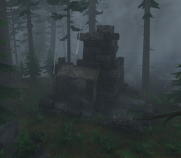
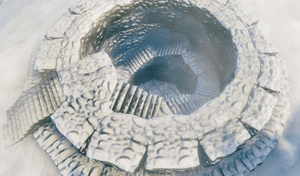

地点
本站支持中英文站内搜索。带 ↗ 的链接指向外部网站；各页来源版本见页脚。


地点（兴趣点）是建筑或地下城等独特地点，由英灵神殿世界生成算法放入生物群系。
安置情况
特殊地点位置在创建世界时根据世界种子预定，但仅在区域生成后才完全确定。
部分更新会自动重新计算尚未放置地点的位置，可能使指路符文石指错，或世界生成器等外部工具显示错误信息。
也可用genloc命令手动重新计算，但通常无变化，因为结果取决于种子及已放置地点数量。
生成
特殊地点按数据顺序逐个生成，优先地点先生成。
每个地点最多随机选择12000次区域，优先地点60000次，直至达到数量上限。从其生态区随机选点，通常高于海面，最低海拔为负时除外。若采用中心优先，可选世界中心限制内任意区域，世界半径10500米；限制从最低距离开始，初始神庙为0，每次选区域增加1米。
所选区域满足以下条件时有效：
- 尚不存在任何兴趣点
- 区域尚未生成
- 若兴趣点要求完整生物群系，以下9个坐标必须属于同一生物群系：
- 区域中心位置。
- 向北、东、南、西各64米。
- 向东北、东南、西南、西北各90.5米。
- 注意：这些坐标实际上位于区域范围之外。
- 最多尝试6次以寻找有效坐标
在区域内随机选坐标，使地点外半径及指定内半径能放入区域。满足以下条件才有效：
- 距世界中心位于最低和最高距离之间。
- 生态区有效，采用地图悬停显示的准确生态区，而非小地图平均名称。
- 海拔处于限制范围内
- 若需要森林，森林系数在限制内。
- 地形高差在限制内，即外半径内10个随机点的最大海拔差。
- 附近没有过于接近的同类兴趣点
数据
下表按生成顺序列出各地点放置参数。
- 除非另有说明，海拔为1-1000。
- 未特别说明时随机旋转，坡向旋转则按地形调整。
- 除非另有说明，最大地形高差为3。
- 未特别说明时，半径内不能出现植被。
- 独特地点每世界仅一处，区域生成后移除其他候选位置。
- 大小表示外半径，括号第二数为内半径。放置位置须让较大半径能容纳于区域；地形高差、清空范围和坡向旋转采用外半径。
| 兴趣点名称 | 生物群系 | 最大数量 | 同类之间的距离 | 地形 | 大小 （米） |
其他 |
|---|---|---|---|---|---|---|
| 献祭石阵 StartTemple |
青青草原（完整） | 1 | 最低海拔3，森林系数1-5，最大距离10000 | 25 | 优先生成，中心优先，带图标，固定旋转，禁止建造 | |
| 弃誓者祭坛（赤血灵鹿） 艾克西尔尼 |
青青草原（完整） | 3 | 最大距离 1000 | 10 | 优先排序 | |
| 弃誓者祭坛（亚格鲁斯） GoblinKing |
北境平原（完整） | 4 | 3000m | 最大高差 4 | 32 | 优先排序 |
| 弃誓者祭坛（古树长老） GDKing |
黑暗林山（完整） | 4 | 3000m | 距离1000- 7000，最大高差5 | 25 | 优先排序 |
| 弃誓者祭坛（邪骨恶灵） 邪骨恶灵 |
沼泽（完整） | 5 | 3000m | 海拔0-2，最大高差4，距离2000-10000 | 19.79 | 优先排序 |
| 地下圣堂 SunkenCrypt4 |
沼泽（完整） | 175 | 64m (SunkenCrypt) | 最大高差 4, 海拔 0-2 | 12 (14) | 优先排序 |
| 弃誓者祭坛（冰霜龙母） Dragonqueen |
凛冽雪山（完整） | 3 | 3000m | 最大高差4，最大距离8000，海拔150-500 | 12 | 优先排序 |
| 霍尔德 Vendor_BlackForest |
黑暗林山（完整） | 10 | 512m | 最大高差2，最小距离1500 | 12 | 优先生成，带图标，唯一，禁止建造 |
| 远古石圈 StoneCircle |
青青草原 | 25 | 200m | 16 | ||
| 灰矮人巢穴 Greydwarf_camp1 |
黑暗林山（完整） | 300 | 128m | 10 | ||
| 符文石 Runestone_Greydwarfs |
黑暗林山 | 25 | 128m (Runestones) | 最大距离 2000 | 8 | |
| 沼泽墓地 Grave1 |
沼泽（完整） | 200 | 最低海拔 0.5 | 12.04 | ||
| 沼泽符文石塔 SwampRuin1 |
沼泽（完整） | 30 | 256m (SwampRuin) | 最低海拔 -0.5 | 12 | 随机损坏,允许植被 |
| 沼泽符文石塔 SwampRuin2 |
沼泽（完整） | 30 | 256m (SwampRuin) | 最低海拔 -0.5 | 10 | 随机损坏 |
| 间歇泉 FireHole |
沼泽（完整） | 75 | 16m (FireHole) | 最低海拔-1，最大高差5 | 5 | |
| 符文石 Runestone_Draugr |
幽暗沼泽 | 50 | 128m (Runestones) | 最低海拔 0.5 | 8 | |
| 诡秘墓穴 Crypt2 |
黑暗林山 | 200 | 128m | 最大高差 2 | 12 (21) | 内部随机生成 |
| 废弃前哨 Ruin1 |
黑暗林山 | 200 | 10.7 | 允许植被 | ||
| 废弃前哨 Ruin2 |
黑暗林山 | 200 | 9.89 | |||
| 废弃前哨 StoneHouse3 |
黑暗林山 | 200 | 6 | 随机损坏,允许植被 | ||
| 废弃前哨 StoneHouse4 |
黑暗林山 | 200 | 7 | 随机损坏,允许植被 | ||
| 地精废墟 Ruin3 |
北境平原 | 50 | 512m (Goblintower) | 10 | ||
| 地精村落 GoblinCamp2 |
北境平原 | 200 | 250m | 最低海拔 2 | 30 | 固定旋转, 随机生成 |
| 地精前哨 StoneTower1 |
北境平原 | 50 | 512m (Goblintower) | 14 | 随机损坏 | |
| 地精前哨 StoneTower3 |
北境平原 | 50 | 512m (Goblintower) | 14 | 随机损坏 | |
| 巨石阵 StoneHenge1 |
北境平原 | 5 | 1000m (Stonehenge) | 最低海拔 5 | 30 | 随机损坏 |
| 巨石阵 StoneHenge2 |
北境平原 | 5 | 1000m (Stonehenge) | 最低海拔 5 | 30 | 随机损坏 |
| 巨石阵 StoneHenge3 |
北境平原 | 5 | 1000m (Stonehenge) | 最低海拔 5 | 30 | 随机损坏 |
| 巨石阵 StoneHenge4 |
北境平原 | 5 | 1000m (Stonehenge) | 最低海拔 5 | 30 | 随机损坏 |
| 巨石阵 StoneHenge5 |
北境平原 | 20 | 500m (Stonehenge) | 最低海拔 2 | 16 | 随机损坏 |
| 巨石阵 StoneHenge6 |
北境平原 | 20 | 500m (Stonehenge) | 最低海拔 2 | 16 | 随机损坏 |
| 废弃房屋 WoodHouse1 |
青青草原 | 20 | 最大高差 4 | 8 | 随机损坏,允许植被 | |
| 废弃房屋 WoodHouse2 |
青青草原 | 20 | 最大高差 4 | 8 | 随机损坏,允许植被 | |
| 废弃房屋 WoodHouse3 |
青青草原 | 20 | 最大高差 4 | 10 | 随机损坏,允许植被 | |
| 废弃房屋 WoodHouse4 |
青青草原 | 20 | 最大高差 4 | 8 | 随机损坏,允许植被 | |
| 废弃房屋 WoodHouse5 |
青青草原 | 20 | 最大高差 4 | 8 | 随机损坏,允许植被 | |
| 废弃房屋 WoodHouse6 |
青青草原 | 20 | 最大高差 4 | 8 | 随机损坏,允许植被 | |
| 废弃房屋 WoodHouse7 |
青青草原 | 20 | 最大高差 4 | 8 | 随机损坏,允许植被 | |
| 废弃房屋 WoodHouse8 |
青青草原 | 20 | 最大高差 4 | 10 | 随机损坏,允许植被 | |
| 废弃房屋 WoodHouse9 |
青青草原 | 20 | 最大高差 4 | 8 | 随机损坏,允许植被 | |
| 废弃房屋 WoodHouse10 |
青青草原 | 20 | 最大高差 4 | 8 | 随机损坏,允许植被 | |
| 废弃房屋 WoodHouse11 |
青青草原 | 20 | 最大高差 4 | 8 | 随机损坏,允许植被 | |
| 废弃房屋 WoodHouse12 |
青青草原 | 20 | 最大高差 4 | 6 | 随机损坏,允许植被 | |
| 废弃房屋 WoodHouse13 |
青青草原 | 20 | 最大高差 4 | 9 | 随机损坏,允许植被 | |
| 废弃农场 WoodFarm1 |
青青草原 | 10 | 128m (Woodvillage) | 最大高差 4, 距离 500-2000 | 32 | 随机生成, 随机损坏 |
| 尸鬼村落 WoodVillage1 |
青青草原 | 15 | 256m (Woodvillage) | 最大高差 4, 距离 2000-10000 | 32 | 随机生成, 随机损坏 |
| 巨魔洞穴 TrollCave02 |
黑暗林山（完整） | 200 | 256m | 高差 5-10, 最低海拔 3 | 12 (24) | 内部随机生成 |
| 石棚 Dolmen01 |
青青草原, 黑暗林山 | 100 | 最大高差 2 | 8 | 随机损坏,允许植被 | |
| 石棚 Dolmen02 |
青青草原, 黑暗林山 | 100 | 最大高差 2 | 8 | 随机损坏,允许植被 | |
| 石棚 Dolmen03 |
青青草原, 黑暗林山 | 50 | 最大高差 2 | 10 | 随机损坏,允许植被 | |
| 诡秘墓穴 Crypt3 |
黑暗林山 | 200 | 128m | 最大高差2，最低海拔3 | 11 (21) | 内部随机生成 |
| 诡秘墓穴 Crypt4 |
黑暗林山 | 200 | 128m | 最大高差 2 | 18 (21) | 室内随机生成,允许植被 |
| 树脓囊 InfestedTree01 |
幽暗沼泽 | 700 | 最低海拔 -1 | 5 | 随机损坏,允许植被 | |
| 废弃小棚 SwampHut1 |
幽暗沼泽 | 50 | 128m (Swamphut) | 最低海拔 -2 | 8 | 随机损坏,允许植被 |
| 废弃小棚 SwampHut2 |
幽暗沼泽 | 50 | 128m (Swamphut) | 最低海拔 2 | 8 | 随机损坏,允许植被 |
| 废弃小棚 SwampHut3 |
幽暗沼泽 | 50 | 128m (Swamphut) | 最低海拔 2 | 8 | 随机损坏,允许植被 |
| 废弃小棚 SwampHut4 |
幽暗沼泽 | 50 | 128m (Swamphut) | 最低海拔 -1 | 8 | 随机损坏,允许植被 |
| 废弃小棚 SwampHut5 |
幽暗沼泽 | 25 | 128m (Swamphut) | 最低海拔 -1 | 10 | 随机损坏 |
| 倒置塔楼 SwampWell1 |
幽暗沼泽 | 25 | 1024m | 最低海拔 -1 | 10 | 随机损坏,允许植被 |
| 山地塔楼 StoneTowerRuins04 |
凛冽雪山 | 50 | 128m (Mountainruin) | 最低海拔 150, 高差 6-40 | 12.28 | 按坡度旋转，随机损坏 |
| 山地塔楼 StoneTowerRuins05 |
凛冽雪山 | 50 | 128m (Mountainruin) | 最低海拔 150, 高差 6-40 | 22 | 按坡度旋转，随机损坏 |
| 废弃前哨 StoneTowerRuins03 |
黑暗林山 | 80 | 200m (Stonetowerruins) | 最低海拔2，最大高差2 | 9 | 随机损坏 |
| 废弃前哨 StoneTowerRuins07 |
黑暗林山 | 80 | 200m (Stonetowerruins) | 最低海拔2，最大高差2 | 9 | 随机损坏 |
| 废弃前哨 StoneTowerRuins08 |
黑暗林山 | 80 | 200m (Stonetowerruins) | 最低海拔2，最大高差2 | 9 | 随机损坏 |
| 废弃前哨 StoneTowerRuins09 |
黑暗林山 | 80 | 200m (Stonetowerruins) | 最低海拔2，最大高差2 | 7 | 随机损坏 |
| 废弃前哨 StoneTowerRuins10 |
黑暗林山 | 80 | 200m (Stonetowerruins) | 最低海拔2，最大高差2 | 7 | 随机损坏 |
| 维京墓地 ShipSetting01 |
青青草原 | 100 | 128m | 24 | 随机损坏,允许植被 | |
| 霜龙巢穴 DrakeNest01 |
凛冽雪山 | 200 | 100m | 海拔 100-2000, 最大距离 10000 | 5 | |
| 石堆 Waymarker01 |
凛冽雪山 | 50 | 最大高差2，最低海拔100 | 3 | ||
| 石堆 Waymarker02 |
凛冽雪山 | 50 | 最大高差2，最低海拔100 | 3 | ||
| 废弃小屋 AbandonedLogCabin02 |
凛冽雪山 | 33 | 128m (Abandonedcabin) | 最低海拔 100 | 10.51 | 随机损坏 |
| 废弃小屋 AbandonedLogCabin03 |
凛冽雪山 | 33 | 128m (Abandonedcabin) | 最低海拔 100 | 10 | 随机损坏 |
| 废弃小屋 AbandonedLogCabin04 |
凛冽雪山 | 50 | 128m (Abandonedcabin) | 最低海拔 100 | 10 | 随机损坏 |
| 凛冽雪山 坟墓 MountainGrave01 |
凛冽雪山 | 100 | 50m | 最大高差2，最低海拔100 | 3.93 | |
| 符文石 DrakeLorestone |
凛冽雪山 | 50 | 128m (Runestones) | 最低海拔 100 | 4 | |
| 倒置塔楼 MountainWell1 |
凛冽雪山 | 25 | 256m | 最低海拔 100 | 14 | 随机损坏,允许植被 |
| 沉船 ShipWreck01 |
黑暗林山, 泥泞沼泽, 北境平原, 无尽之海 | 25 | 1024m (Shipwreck) | 最大高差10，海拔从-1到1 | 10 | |
| 沉船 ShipWreck02 |
黑暗林山, 泥泞沼泽, 北境平原, 无尽之海 | 25 | 1024m (Shipwreck) | 最大高差10，海拔从-1到1 | 10 | |
| 沉船 ShipWreck03 |
黑暗林山, 泥泞沼泽, 北境平原, 无尽之海 | 25 | 1024m (Shipwreck) | 最大高差10，海拔从-1到1 | 10 | |
| 沉船 ShipWreck04 |
黑暗林山, 泥泞沼泽, 北境平原, 无尽之海 | 25 | 1024m (Shipwreck) | 最大高差10，海拔从-1到1 | 14 | |
| 符文石 Runestone_Meadows |
青青草原 | 100 | 128m (Runestones) | 8 | ||
| 符文石 Runestone_Boars |
青青草原 | 50 | 128m (Runestones) | 8 | ||
| 符文石 Runestone_Swamps |
幽暗沼泽 | 100 | 128m (Runestones) | 最低海拔 0 | 8 | |
| 符文石 Runestone_Mountains |
凛冽雪山 | 100 | 128m (Runestones) | 最低海拔 100 | 8 | |
| 符文石 Runestone_BlackForest |
黑暗林山 | 50 | 128m (Runestones) | 8 | ||
| 符文石 Runestone_Plains |
北境平原 | 100 | 128m (Runestones) | 8 | ||
| 战斗废墟 CombatRuin01 |
青青草原 | 5 | 2000m | 最大高差1.5，距离1500-10000，最低海拔5，森林系数0.5-1 | 13 | 随机损坏 |
| 巨石空地 BigRockClearing |
黑暗林山（完整） | 10 | 2000m | 最大高差2，距离1000-10000，最低海拔5，森林系数0.8-1 | 15 | 独有,随机损坏 |
| 焦油坑 TarPit1 |
北境平原（完整） | 100 | 128m (Tarpit) | 最大高差 1.5, 海拔 5-60 | 20 | 随机损坏 |
| 焦油坑 TarPit2 |
北境平原（完整） | 16 | 128m (Tarpit) | 最大高差 1.5, 海拔 5-60 | 25 | 随机损坏 |
| 焦油坑 TarPit3 |
北境平原（完整） | 100 | 128m (Tarpit) | 最大高差 1.5, 海拔 5-60 | 14 | 随机损坏 |
| 冰霜洞穴 MountainCave02 |
凛冽雪山 | 120 | 200m (Mountaincaves) | 最大高差 40, 海拔 100-5000 | 15 (32) | 按坡度旋转，内部随机生成 |
| 潜能熔炉 AncientUpgradeStation |
凛冽雪山（完整） | 10 | 400m (AncientUpgradeStation) | 最大高差40，最小距离500，海拔0-5000 | 22 (22) | 优先生成，带图标，唯一，按坡度旋转，禁止建造 |
| 矮人守卫塔 Mistlands_GuardTower1_new |
迷雾之地（完整） | 75 | 128 (Dvergr) | 最大高差10，最低海拔2 | 24 | 按坡度旋转，随机损坏 |
| 矮人守卫塔 Mistlands_GuardTower1_ruined_new |
迷雾之地（完整） | 80 | 128 (Dvergr) | 最大高差10，最低海拔2 | 20 | 按坡度旋转，随机损坏 |
| 矮人守卫塔 Mistlands_GuardTower1_ruined_new2 |
迷雾之地（完整） | 20 | 128 (Dvergr) | 最大高差10，最低海拔2 | 20 | 按坡度旋转，随机损坏 |
| 矮人守卫塔 Mistlands_GuardTower2_new |
迷雾之地（完整） | 75 | 128 (Dvergr) | 最大高差10，最低海拔4 | 24 | 按坡度旋转，随机损坏 |
| 矮人守卫塔 Mistlands_GuardTower3_new |
迷雾之地（完整） | 50 | 128 (Dvergr) | 最大高差10，最低海拔12 | 24 | 按坡度旋转，随机损坏 |
| 矮人守卫塔 Mistlands_GuardTower3_ruined_new |
迷雾之地（完整） | 50 | 128 (Dvergr) | 最大高差10，最低海拔11 | 20 | 按坡度旋转，随机损坏 |
| 矮人灯塔 Mistlands_Lighthouse1_new |
迷雾之地（完整） | 100 | 128 (Dvergr) | 最大高差 40, 海拔 1-20 | 20 | 按坡度旋转，随机损坏 |
| 矮人挖掘场 Mistlands_Excavation1 |
迷雾之地（完整） | 40 | 128 (Excavation) | 最大高差 4, 海拔 4-100 | 20 | 按坡度旋转，随机损坏 |
| 矮人挖掘场 Mistlands_Excavation2 |
迷雾之地（完整） | 40 | 128 (Excavation) | 最大高差 4, 海拔 4-100 | 20 | 按坡度旋转，随机损坏 |
| 矮人挖掘场 Mistlands_Excavation3 |
迷雾之地（完整） | 40 | 96 (Excavation) | 最大高差 5, 海拔 4-100 | 17 | 按坡度旋转，随机损坏 |
| 矮人港口 Mistlands_Harbour1 |
迷雾之地(海岸) (英语). | 100 | 64 (Harbour) | 高差2-20，海拔-1至-0.25 | 20 | 按坡度旋转，贴合水面，随机损坏 |
| 矮人高架桥 Mistlands_Viaduct1 |
迷雾之地（完整） | 100 | 128 (Harbour) | 高差2-40，海拔-1至15 | 24 | 按坡度旋转，随机损坏 |
| 矮人高架桥 Mistlands_Viaduct2 |
迷雾之地（完整） | 150 | 64 (Harbour) | 高差4-40，海拔-1至25 | 8 | 随机损坏 |
| 岩石尖塔 Mistlands_RockSpire1 |
迷雾之地（完整） | 200 | 60 | 高差 2-99, 最低海拔 -10 | 4 | 随机损坏,允许植被 |
| 巨人遗骸 Mistlands_Giant1 |
迷雾之地（完整） | 250 | 180 (Giant) | 最低海拔 -1 | 11 | 允许植被 |
| 巨人遗骸 Mistlands_Giant2 |
迷雾之地（完整） | 85 | 256 (Giant) | 最大高差4，最低海拔-1 | 10 | 允许植被 |
| 腐疫矿区 Mistlands_DvergrTownEntrance1 |
迷雾之地（完整） | 120 | 256 (DvergrDungeon) | 高差 5-40, 最低海拔 12 | 20 (32) | 优先生成，按坡度旋转，随机损坏，内部随机生成 |
| 腐疫矿区 Mistlands_DvergrTownEntrance2 |
迷雾之地（完整） | 120 | 256 (DvergrDungeon) | 最大高差 40, 海拔 1-20 | 32 (32) | 优先生成，按坡度旋转，随机损坏，内部随机生成 |
| 腐疫地堡 Mistlands_DvergrBossEntrance1 |
迷雾之地（完整） | 5 | 2048 (DvergrBoss) | 最大高差 40, 海拔 1-20 | 32 (32) | 优先生成，按坡度旋转，随机损坏，内部随机生成 |
| 矮人路哨 Mistlands_RoadPost1 |
迷雾之地 | 500 | 最大高差 10 | 6 | 随机损坏 | |
| 迷雾之地雕像 Mistlands_StatueGroup1 |
迷雾之地 | 200 | 32 | 最大高差10，最低海拔2 | 16 | 按坡度旋转，随机损坏 |
| 迷雾之地雕像 Mistlands_Statue1 |
迷雾之地 | 200 | 最大高差10，最低海拔2 | 6 | 按坡度旋转，随机损坏 | |
| 迷雾之地雕像 Mistlands_Statue2 |
迷雾之地 | 200 | 最大高差10，最低海拔2 | 6 | 按坡度旋转，随机损坏 | |
| 上古之剑 Mistlands_Swords1 |
迷雾之地（完整） | 33 | 256 (GiantArmor) | 最大高差10，最低海拔-1 | 12 | |
| 上古之剑 Mistlands_Swords2 |
迷雾之地（完整） | 33 | 256 (GiantArmor) | 最大高差10，最低海拔-1 | 12 | |
| 上古之剑 Mistlands_Swords3 |
迷雾之地（完整） | 33 | 256 (GiantArmor) | 最大高差10，最低海拔-1 | 8 | |
| 符文石 Runestone_Mistlands |
迷雾之地 | 50 | 128 (Runestones) | 最大高差10，最低海拔-1 | 12 | 随机旋转，按坡度旋转 |
| 哀啸之穴 Hildir_cave |
凛冽雪山（完整） | 3 | 2000m | 最大高差40，距离1000-8000，海拔200-5000 | 15 (32) | 优先生成，带图标，按坡度旋转，内部随机生成 |
| 希尔德 Hildir_camp |
青青草原 | 10 | 1000m | 最大高差 2, 距离 3000-8000 | 24 | 优先生成，带图标，唯一，禁止建造 |
| 阴燃之墓 Hildir_crypt |
黑暗林山（完整） | 3 | 3000m | 最大高差 2, 距离 3000-8000 | 18 (21) | 优先生成，带图标，内部随机生成，允许植被 |
| 封印之塔 Hildir_plainsfortress |
北境平原（完整） | 3 | 3000m | 最大高差4，最低海拔8 | 32 | 优先生成，禁止建造，随机生成 |
| 弃誓者祭坛（青焰龙王） FaderLocation |
灰烬之地（完整） | 3 | 2048m (FaderBoss) | 最大高差 40, 海拔 1-300 | 32 | 优先生成，按坡度旋转，禁止建造 |
| 神秘的地点 PlaceofMystery1 |
灰烬之地（完整） | 1 | 2048m (PlaceofMystery) | 最大高差5，最低海拔0 | 24 | 优先生成，唯一 |
| 神秘的地点 PlaceofMystery2 |
灰烬之地（完整） | 1 | 2048m (PlaceofMystery) | 最大高差5，最低海拔0 | 24 | 优先生成，唯一 |
| 雷托领主之墓 PlaceofMystery3 |
灰烬之地（完整） | 1 | 2048m (PlaceofMystery) | 最大高差5，最低海拔0 | 24 (24) | 优先生成，唯一 |
| 灰烬城堡 CharredFortress |
灰烬之地 | 20 | 256m (FaderBoss) | 最大高差10，最低海拔20 | 32 | 优先生成，固定旋转 |
| 灰烬之地废墟 FortressRuins |
灰烬之地 | 100 | 最大高差10，最低海拔0 | 32 | 随机损坏，位于CharredFortress或另一个FortressRuins的70m范围内 | |
| 焦骨废墟 CharredRuins1 |
灰烬之地（完整） | 75 | 256m (Zigg) | 最大高差6，最低海拔-5 | 32 | 随机损坏 |
| 符文石 Runestone_Ashlands |
灰烬之地 | 70 | 128m (Runestones) | 最大高差10，最低海拔0 | 12 | 按坡度旋转 |
| 炎金属矿脉 LeviathanLava |
灰烬之地 | 100 | 最大高差10，最低海拔10 | 10 | 允许植被 | |
| 硫磺拱门 SulfurArch |
灰烬之地（完整） | 100 | 40m | 最大高差6，最低海拔10 | 30 | |
| 苦难之碑 CharredStone_Spawner |
灰烬之地 | 300 | 100m | 最大高差10，最低海拔0 | 20 | |
| 秃鹫巢穴 VoltureNest |
灰烬之地 | 350 | 100m | 最大高差5，最低海拔0 | 16 | |
| 灰烬之地废墟 CharredTowerRuins1 |
灰烬之地 | 30 | 100m (Towerruins) | 最大高差4，最低海拔0 | 22 | 随机损坏 |
| 矮人焦毁塔楼废墟 CharredTowerRuins1_dvergr |
灰烬之地 | 30 | 100m (Towerruins) | 最大高差4，最低海拔0 | 22 | 随机损坏 |
| 灰烬之地废墟 CharredTowerRuins2 |
灰烬之地 | 40 | 最大高差4，最低海拔0 | 12 | 随机损坏 | |
| 灰烬之地废墟 CharredTowerRuins3 |
灰烬之地 | 30 | 500m | 最大高差4，最低海拔0 | 12 | 随机损坏,允许植被 |
| 灰烬之地废墟 AshlandRuins |
灰烬之地（完整） | 100 | 16m | 最大高差4，最低海拔0 | 32 | 随机损坏 |
| 腐朽之穴 MorgenHole1 |
灰烬之地（完整） | 40 | 300m (MorgenHole) | 最大高差10，最低海拔0 | 24 (24) | |
| 腐朽之穴 MorgenHole2 |
灰烬之地（完整） | 40 | 200m (MorgenHole) | 最大高差10，最低海拔0 | 24 (24) | |
| 腐朽之穴 MorgenHole3 |
灰烬之地（完整） | 40 | 200m (MorgenHole) | 最大高差10，最低海拔0 | 24 (24) | |
| 焦骨废墟 CharredRuins2 |
灰烬之地（完整） | 100 | 128m | 最大高差30，最低海拔-5 | 15 | 随机损坏 |
| 焦骨废墟 CharredRuins3 |
灰烬之地（完整） | 100 | 128m | 最大高差30，最低海拔-5 | 12 | 随机损坏 |
| 焦骨废墟 CharredRuins4 |
灰烬之地（完整） | 100 | 128m | 最大高差30，最低海拔-5 | 10 | 随机损坏 |
| 沼泽女巫 BogWitch_Camp |
沼泽（完整） | 10 | 1000m | 最大高差 2, 距离 3000-8000 | 24 | 优先生成，带图标，唯一，禁止建造 |
| 监狱 DN_Bossroom |
极北之地 | 3 | 1024m (Dn_boss) | 最大高差 6, 海拔 80-5000 | 32 (32) | 优先生成，带图标，按坡度旋转，禁止建造 |
| 蜿蜒隧道 TheHole01 |
北方深境（完整） | 40 | 256m | 最低海拔 2 | 28 | 固定旋转，随机损坏，内部随机生成 |
| 废弃村落 NorthVillage |
北方深境（完整） | 135 | 70m | 最低海拔 2 | 32 | 随机损坏，位于TheHole01或另一个NorthVillage的85m范围内 |
| 墨尔克哈拉 MorkBorg |
极北之地 | 40 | 275m (Morkborg) | 最大高差 300, 海拔 30-10000 | 30 | 固定旋转，禁止建造，随机损坏，内部随机生成 |
| 纪念场地 NorthMemorialPlace |
北方深境（完整） | 15 | 400m (Memorialplace) | 最低海拔 2 | 25 | |
| 冰封船只 FrozenShip01_DN |
极北之地 | 50 | 64m (FrozenShip) | 最大高差100，距离8000-9750，海拔-15至-5 | 10 | 按坡度旋转，贴合水面，允许植被 |
| 冰封船只 FrozenShip02_DN |
极北之地 | 50 | 64m (FrozenShip) | 最大高差100，距离8000-9750，海拔-15至-5 | 16 | 按坡度旋转，贴合水面，允许植被 |
| 冰封船只 FrozenShip03_DN |
极北之地 | 50 | 64m (FrozenShip) | 最大高差100，距离8000-9750，海拔-15至-5 | 10 | 按坡度旋转，贴合水面，允许植被 |
| 冰池 IcePond1 |
北方深境（完整） | 40 | 128m (Icepond) | 最大高差1.5，海拔10-200，森林系数0-1 | 20 | 随机损坏,允许植被 |
| 北方深境小屋 DN_hut01 |
北方深境（完整） | 40 | 100m (Northvillage) | 最大高差4，最低海拔40 | 12 | 按坡度旋转，随机损坏 |
| 维京墓地 (北方深境) ShipSetting02 |
极北之地 | 100 | 64m (Shipsetting) | 最大高差2，最低海拔2 | 24 | |
| 维京墓地 (北方深境) ShipSetting03 |
极北之地 | 50 | 64m (Shipsetting) | 最大高差2，最低海拔2 | 24 | |
| 木材营 LumberCamp |
北方深境（完整） | 50 | 100m (Thehole) | 最低海拔 4, 森林系数 0-1 | 32 | |
| 沉船 (北方深境) ShipWreck01_DN |
极北之地 | 170 | 最大高差2，海拔-0.5至0.5 | 10 | ||
| 沉船 (北方深境) ShipWreck02_DN |
极北之地 | 120 | 最大高差2，海拔-0.5至1 | 10 | 按坡度旋转 | |
| 符文石 Runestone_DeepNorth |
极北之地 | 70 | 128m (Runestones) | 最大高差10，最低海拔0 | 12 | 按坡度旋转 |
| 石化巨魔长老 DN_gammeltrollFrac01 |
极北之地 | 30 | 最大高差10，最低海拔5 | 8 | 随机损坏 | |
| 石化巨魔长老 DN_gammeltrollFrac02 |
极北之地 | 30 | 最大高差10，最低海拔10 | 8 | 随机损坏 | |
| 熊洞穴 BearCave |
黑暗林山（完整） | 50 | 256m | 高差 5-10, 最低海拔 5 | 12 (24) | 按坡度旋转 |
| 尸鬼村落 WoodVillage2 |
青青草原 | 15 | 256m (Woodvillage) | 最大高差 4, 距离 2000-10000 | 32 | 随机损坏 |
| 废弃前哨 StoneTowerRuins07_sunk |
黑暗林山 | 10 | 50m (Stonetowerruins_sunk) | 最大高差4，海拔-8至-2 | 7 | 随机损坏,允许植被 |
| 废弃前哨 StoneTowerRuins08_sunk |
黑暗林山 | 10 | 50m (Stonetowerruins_sunk) | 最大高差4，海拔-8至-2 | 7 | 随机损坏,允许植被 |
| 废弃前哨 StoneTowerRuins09_sunk |
黑暗林山 | 10 | 50m (Stonetowerruins_sunk) | 最大高差4，海拔-8至-2 | 7 | 随机损坏,允许植被 |
| 废弃前哨 StoneTowerRuins10_sunk |
黑暗林山 | 10 | 50m (Stonetowerruins_sunk) | 最大高差4，海拔-8至-2 | 7 | 随机损坏,允许植被 |
| 废弃小棚 SwampHut1_1 |
幽暗沼泽 | 50 | 最低海拔 -2 | 8 | 随机损坏,允许植被 | |
| 废弃小棚 SwampHut2_1 |
幽暗沼泽 | 50 | 最低海拔 -2 | 8 | 随机损坏,允许植被 | |
| 废弃小棚 SwampHut3_1 |
幽暗沼泽 | 50 | 最低海拔 -2 | 8 | 随机损坏,允许植被 | |
| 山地塔楼 StoneTowerRuins05_leet |
凛冽雪山 | 10 | 32m | 最大高差40，最低海拔150 | 22 | 按坡度旋转，随机损坏 |
| 丑地精小屋 GoblinHut01 |
北境平原 | 30 | 最大高差 4 | 6 | 随机损坏,允许植被 | |
| 丑地精小屋 GoblinHut02 |
北境平原 | 30 | 最大高差 4 | 7 | 随机损坏,允许植被 | |
| 丑地精小屋 GoblinHut03 |
北境平原 | 20 | 最大高差 4 | 12 | 随机损坏,允许植被 | |
| 焦油坑 TarPit1_1 |
北境平原（完整） | 50 | 最大高差1.5，最低海拔3 | 20 | 随机损坏 | |
| 焦油坑 TarPit2_1 |
北境平原（完整） | 20 | 最大高差1.5，最低海拔3 | 25 | 随机损坏 | |
| 焦油坑 TarPit3_1 |
北境平原（完整） | 100 | 最大高差1.5，最低海拔3 | 14 | 随机损坏 |
地下城
大型岩石结构带大入口，常饰两三堆骨头。内部为空或有巨魔，若为空，永不会有巨魔返回。
墓状建筑，通向独立地下城，常被骷髅怪围绕。内部有大量骷髅及战利品宝箱，是焰灵之核主要来源。
沉没墓穴是沼泽昏暗地下城，若有照明也仅绿火把，用古树长老掉落的沼泽钥匙解锁。奇怪的是，除涉过水淹走廊外，不视为潮湿环境，是废铁主要来源。
凛冽雪山生态区冰冻洞穴，住有狼之狂信徒、乌尔夫和邪蝠，入口通向独立地下城。战利品包括芬里之发、芬里之爪、红色黄麻和黄金。
腐疫矿区是迷雾之地中被探索者占领的矮人采矿营地遗址，包含黑暗之核、封印破除者碎片及皇家果冻。
蜿蜒隧道位于极北之地大型房屋废墟下，住有厄妖和无眼者，是铸坯、冰霜之核和荧光幼虫来源。
用隐秘钥匙开启极北之地各处莫克哈拉之门进入。住有巨人战士、巨人巫师、丑地精俘虏、被囚禁的矮人和无形黏团，包含宝石、上古金币、纪念用炭和邪恶之冰。
实例
同一兴趣点的不同实例可能存在随机差异。
敌人和宝藏等部分要素常按概率出现。
地点随机损坏时，每个建筑随机损失40%-90%生命值。
星级范围来自地点生成器的等级范围。百分比为地点生成时对象出现概率。“x%总计”表示该概率乘对象所在部件，如楼层、对象群或宝箱的出现概率。宝箱链接到战利品宝箱页面掉落表。
青青草原, 黑暗林山 与 无尽之海
| 实例名称 | 类型 | 数额 | 其他 |
|---|---|---|---|
| 献祭石阵 StartTemple |
赤血灵鹿 导向符文石 | 1 | |
| 覆盆子 | 2 | ||
| 蘑菇 | 2 | ||
| 树枝 | 2-4 | 额外生成的概率分别为74.4%和75.8% | |
| 石头 | 3-8 | 额外生成的概率：73.9%、70.2%、50.6%、50%和48.8% | |
| 弃誓者祭坛（赤血灵鹿） 艾克西尔尼 |
没有战利品 | ||
| 远古石圈 StoneCircle |
没有战利品 | ||
| 废弃房屋 WoodHouse1 |
青青草原宝箱 | 50% | |
| 蜂房 | 25% | ||
| 废弃房屋 WoodHouse2 |
青青草原好奇宝箱 | 50% | |
| 蜂房 | 25% | ||
| 废弃房屋 WoodHouse3 |
蜂房 | 25% | |
| 树枝 | 0-3 (90% 每个) | ||
| 石头 | 0-6 (90% 每个) | ||
| 废弃房屋 WoodHouse4 |
蜂房 | 25% | |
| 废弃房屋 WoodHouse5 |
蜂房 | 25% | |
| 废弃房屋 WoodHouse6 |
青青草原神秘无比宝箱 | 1 | |
| 蜂房 | 25% | ||
| 废弃房屋 WoodHouse7 |
青青草原宝箱 | 50% | |
| 蜂房 | 25% | ||
| 废弃房屋 WoodHouse8 |
蒲公英 | 0-6 (20% 每个) | |
| 废弃房屋 WoodHouse9 |
青青草原宝箱 | 50% | |
| 蜂房 | 25% | ||
| 废弃房屋 WoodHouse10 |
青青草原宝箱 | 50% | |
| 蜂房 | 25% | ||
| 废弃房屋 WoodHouse11 |
青青草原宝箱 | 50% | |
| 蜂房 | 25% | ||
| 废弃房屋 WoodHouse12 |
青青草原宝箱 | 50% | |
| 蘑菇 | 0-4 (33% 每个) | ||
| 废弃房屋 WoodHouse13 |
青青草原宝箱 | 50% | |
| 蜂房 | 25% | ||
| 废弃农场 WoodFarm1 |
随机生成 (见下文) |
20-30 房间 | 类型: 青青草原农场 |
| 尸鬼村落 WoodVillage1 |
随机生成 (见下文) |
20-30 房间 | 类型: 青青草原乡村 |
| 石棚 Dolmen01 |
石头 坟墓 宝藏 | 10% | |
| 白骨碎片 | 50% | ||
| 近战 骷髅怪 | 50% | 仅夜间出现，最高2星 | |
| 石棚 Dolmen02 |
石头 坟墓 宝藏 | 20% | |
| 白骨碎片 | 50% | ||
| 近战 骷髅怪 | 50% | 仅夜间出现，最高2星 | |
| 石棚 Dolmen03 |
石头 坟墓 宝藏 | 30% | |
| 白骨碎片 | 1-2 (50% 额外对象) | ||
| 近战 骷髅怪 | 50% | 仅夜间出现，最高2星 | |
| 维京墓地 ShipSetting01 |
石头 坟墓 宝藏 | 50% | |
| 船形石阵宝箱 | 80% | ||
| 白骨碎片 | 2 | ||
| 骷髅怪 | 50% | 仅夜间出现，最高2星 | |
| 符文石 Runestone_Meadows |
没有战利品 | ||
| 符文石 Runestone_Boars |
鬓猪 | 1-9 (50% 每个额外对象) | 最高2星 |
| 弃誓者祭坛（古树长老） GDKing |
没有战利品 | ||
| 霍尔德 Vendor_BlackForest |
没有战利品 | ||
| 灰矮人巢穴 Greydwarf_camp1 |
灰矮人巢穴 | 1 | |
| 符文石 Runestone_Greydwarfs |
没有战利品 | ||
| 诡秘墓穴 Crypt2 |
随机生成 (见下文) |
20-40 房间 | 类型: 森林墓穴 |
| 骷髅怪 | 1 | 每小时重生，最高2星 | |
| 骷髅怪 | 2 | 最高2星 | |
| 乌鸦 | 2 | ||
| 诡秘墓穴 Crypt3 |
随机生成 (见下文) |
20-40 房间 | 类型: 森林墓穴 |
| 骷髅怪 | 1 | 每小时重生，最高2星 | |
| 骷髅怪 | 2 | 最高2星 | |
| 乌鸦 | 2 | ||
| 诡秘墓穴 Crypt4 |
随机生成 (见下文) |
20-40 房间 | 类型: 森林墓穴 |
| 骷髅怪 | 1 | 每小时重生，最高2星 | |
| 骷髅怪 | 2 | 最高2星 | |
| 乌鸦 | 1 | ||
| 废弃前哨 Ruin1 |
废弃前哨 宝箱 | 1 | |
| 灰矮人 | 5 | 最高2星 | |
| 灰矮人萨满 | 1 | 最高2星 | |
| 乌鸦 | 2 | ||
| 废弃前哨 Ruin2 |
废弃前哨 宝箱 | 1 | |
| 木桶 | 1 | ||
| 古树长老 导向符文石 | 30% | ||
| 灰矮人暴徒 | 20% | 最高2星 | |
| 灰矮人 | 6-7 (20% 概率 额外对象) |
最高2星 | |
| 乌鸦 | 2 | ||
| 废弃前哨 StoneHouse3 |
废弃前哨 宝箱 | 1 | |
| 灰矮人 | 1 | 最高2星 | |
| 废弃前哨 StoneHouse4 |
灰矮人 | 0-2 (50% 每个) | 最高2星 |
| 巨魔洞穴 TrollCave02 |
巨魔 | 33% | 最高2星 |
| 白骨碎片 | 0-3 (66% 每个) | ||
| 巨魔洞穴 （内部） TrollCave02 |
巨魔 | 75% | 最高2星 |
| 巨魔洞穴 宝箱 | 0-2（每个75%，每个总体概率56.3%） | 要求巨魔已生成（75%） | |
| 宝藏堆积( A)钱币, 红宝石, 琥珀 或 琥珀珍珠) | 0-9 (50% 每个) | ||
| 黄蘑菇 | 0-12 (50% 每个) | 每4小时重新生成 | |
| 废弃前哨 StoneTowerRuins03 |
废弃前哨 宝箱 | 81.8% | 第二个宝箱 |
| 蜂房 | 28.1% (23% 总体概率) | 要求第二个宝箱已生成（81%） | |
| 古树长老 导向符文石 | 30% (24.5% 总体概率) | 要求第二个宝箱已生成（81%） | |
| 灰矮人暴徒 | 50% (40.9% 总体概率) | 要求第二个宝箱已生成（81%），最高2星 | |
| 灰矮人 | 50% (40.9% 总体概率) | 要求第二个宝箱已生成（81%），最高2星 | |
| 废弃前哨 宝箱 | 33% | ||
| 骷髅怪 | 6 (100%, 33% 总体概率) | 要求宝箱已生成（33%），最高2星 | |
| 灰矮人 | 3 (50%) | 最高2星 | |
| 乌鸦 | 2 | ||
| 废弃前哨 StoneTowerRuins07 |
废弃前哨 宝箱 | 25% | 上层 |
| 骷髅怪 | 1-2 (100%, 25% 总体概率) （额外生成概率50%，总体概率12.5%） |
要求上层宝箱已生成（25%），最高2星 | |
| 骷髅怪 | 2-4（每个额外对象的生成概率25%） | 最高2星 | |
| 乌鸦 | 2 | ||
| 废弃前哨 StoneTowerRuins08 |
废弃前哨 宝箱 | 25% | 上层 |
| 骷髅怪 | 50% (12.5% 总体概率) | 要求楼上宝箱已生成（25%），最高2星 | |
| 骷髅怪 | 3-5 (12.5% 每个额外对象) | 最高2星 | |
| 乌鸦 | 2 | ||
| 废弃前哨 StoneTowerRuins09 |
废弃前哨 宝箱 | 50% | 最上层 |
| 骷髅怪 | 0-4（每个33%，每个总体概率16.5%） | 要求最顶层宝箱已生成（50%），最高2星 | |
| 骷髅怪 | 0-3 (33% 每个) | 最高2星 | |
| 乌鸦 | 2 | ||
| 废弃前哨 StoneTowerRuins10 |
废弃前哨 宝箱 | 25% | 最上层 |
| 骷髅怪 | 0-2（每个50%，每个总体概率12.5%） | 要求最顶层宝箱已生成（25%），最高2星 | |
| 骷髅怪 | 0-2 (12.5% 每个) | 最高2星 | |
| 骷髅怪 | 0-3 (50% 每个) | 最高2星 | |
| 乌鸦 | 2 | ||
| 沉船 ShipWreck01 |
沉船 宝箱 | 74.9% | |
| 沉船 ShipWreck02 |
沉船 宝箱 | 74.9% | |
| 沉船 ShipWreck03 |
沉船 宝箱 | 74.9% | |
| 沉船 ShipWreck04 |
沉船 宝箱 | 74.9% | |
| 符文石 Runestone_BlackForest |
没有战利品 | ||
| 战斗废墟 CombatRuin01 |
战斗废墟 宝箱 | 1 | |
| 白骨碎片 | 0-2 (80% 每个) | ||
| 邪骨堆 | 1 | ||
| 阴燃之墓 Hildir_crypt |
随机生成 | 20-40 房间 | 类型: 希尔德森林墓穴 |
| 乌鸦 | 1 | ||
| 骷髅怪 | 2 | 1-2星 | |
| 骷髅怪 | 1 | 每小时重生，1-2星 | |
| 熊洞穴 BearCave |
黄蘑菇 | 0-22 (50% 每个) | 每4小时重新生成 |
| 白骨碎片 | 66% | ||
| 蓝莓 | 0-3 (50% 每个) | 每5小时重生 | |
| 蜂房 | 50% | ||
| 巨熊 | 75% | 无法带星级 | |
| 废弃前哨 StoneTowerRuins09_sunk |
废弃前哨 宝箱 | 25% | |
| 骷髅怪 | 0-2（每个33%，每个总体概率8.25%） | 要求宝箱已生成（25%），最高2星 | |
| 废弃前哨 StoneTowerRuins10_sunk |
废弃前哨 宝箱 | 12.5% | |
| 骷髅怪 | 50% (6.25% 总体概率) | 要求宝箱已生成（12.5%），最高2星 | |
| 巨石空地 BigRockClearing |
石头 | 22 | |
| 蓟草 | 4 | 每4小时重新生成 | |
| 乌鸦 | 2 | ||
| 希尔德 Hildir_camp |
阴燃之墓, 哀啸之穴 与 封印之塔 导向符文石 | 1 | |
| 废弃前哨 StoneTowerRuins07_sunk |
没有战利品 | ||
| 废弃前哨 StoneTowerRuins08_sunk |
没有战利品 | ||
| 尸鬼村落 WoodVillage2 |
随机生成 (见下文) |
20-30 房间 | 类型: 青青草原乡村 |
泥泞沼泽 与 凛冽雪山
| 实例名称 | 类型 | 数额 | 其他 |
|---|---|---|---|
| 弃誓者祭坛（邪骨恶灵） 邪骨恶灵 |
没有战利品 | ||
| 地下圣堂 SunkenCrypt4 |
尸鬼 | 30% | 无法带星级 |
| 大型软泥怪 | 30% | 无法带星级 | |
| 地下圣堂 （内部） SunkenCrypt4 |
随机生成 (见下文) |
20-30 房间 | 类型: 地下圣堂 |
| 弃誓者祭坛（冰霜龙母） Dragonqueen |
没有战利品 | ||
| 沼泽墓地 Grave1 |
幽暗沼泽 宝箱 | 50% | |
| 尸体堆 | 2 | ||
| 邪骨堆 | 1 | ||
| 沼泽符文石塔 SwampRuin1 |
邪骨恶灵 导向符文石 | 30% | |
| 幽暗沼泽 宝箱 | 25.1% | ||
| 尸体堆 | 1 | ||
| 尸鬼 | 0-2 (50% 每个) | 无法带星级 | |
| 尸鬼精英 | 32.1% | 无法带星级 | |
| 乌鸦 | 2 | ||
| 沼泽符文石塔 SwampRuin2 |
邪骨恶灵 导向符文石 | 30% | |
| 幽暗沼泽 宝箱 | 25.1% | ||
| 尸体堆 | 1 | ||
| 尸鬼 | 0-2 (50% 每个) | 无法带星级 | |
| 尸鬼精英 | 32.1% | 无法带星级 | |
| 乌鸦 | 2 | ||
| 间歇泉 FireHole |
焰灵 | 3 | 每5分钟重生，最高2星 |
| 符文石 Runestone_Draugr |
尸鬼 | 3 | 无法带星级 |
| 树脓囊 InfestedTree01 |
树脓囊 | 0-6 (66% 每个) | 4-7 树脓 每袋数 |
| 小 树脓囊 | 0-3 (25% 每个) | 1-2 树脓 每袋数 | |
| 废弃小棚 SwampHut1 |
废弃前哨 宝箱 | 10% | |
| 鬼魅 | 10% | 随宝箱一起生成，不会带星 | |
| 废弃小棚 SwampHut2 |
废弃前哨 宝箱 | 10% | |
| 鬼魅 | 10% | 随宝箱一起生成，不会带星 | |
| 废弃小棚 SwampHut3 |
废弃前哨 宝箱 | 10% | |
| 鬼魅 | 10% | 随宝箱一起生成，不会带星 | |
| 废弃小棚 SwampHut4 |
废弃前哨 宝箱 | 75% | |
| 尸鬼 | 2 (100%, 75% 总体概率) | 要求宝箱已生成（75%），不会带星 | |
| 远程 尸鬼 | 20% 与 30% | 无法带星级 | |
| 废弃小棚 SwampHut5 |
废弃前哨 宝箱 | 10% | |
| 鬼魅 | 10% | 随宝箱一起生成，不会带星 | |
| 乌鸦 | 2 | ||
| 倒置塔楼 SwampWell1 |
尸鬼精英 | 0-2 (32.1% 每个) | 无法带星级 |
| 山地塔楼 StoneTowerRuins04 |
冰霜龙母 导向符文石 | 70% (63% 总体概率) | 要求塔楼已生成（90%概率） |
| 凛冽雪山 宝箱 | 66% (59.4% 总体概率) | 地面楼层宝箱 要求塔楼已生成（90%概率） | |
| 凛冽雪山 宝箱 | 20.2% (18.1% 总体概率) | 顶部楼层宝箱 要求塔楼已生成（90%概率） | |
| 骷髅怪 | 0-2（每个50%，每个总体概率9.07%） | 要求顶层宝箱已生成（18.1%），最高2星 | |
| 骷髅怪 | 3 (33%) | 最高2星 | |
| 山地塔楼 StoneTowerRuins05 |
邪骨堆 | 50% | |
| 骷髅怪 | 0-4 (33% 每个) | 最高2星 | |
| 凛冽雪山 宝箱 | 50% | 中央塔楼宝箱 | |
| 骷髅怪 | 0-3（每个33%，每个总体概率16.5%） | 要求中央塔楼宝箱已生成（50%），最高2星 | |
| 骷髅怪 | 0-12（每个33%，每个总体概率10.89%） | 四组三具骨架 每组都要求对应角楼已生成（每座33%），最高2星 | |
| 霜龙巢穴 DrakeNest01 |
龙蛋 | 1 | 每8小时重生 |
| 霜龙 | 0-3 (66% 每个) | 无法带星级 | |
| 石堆 Waymarker01 |
没有战利品 | ||
| 石堆 Waymarker02 |
没有战利品 | ||
| 废弃小屋 AbandonedLogCabin02 |
凛冽雪山 宝箱 | 54.6% | 上层宝箱 |
| 凛冽雪山 宝箱 | 34.6% | 庇护所中的宝箱 | |
| 石魔 | 0-2 (50% 与 10%) | 无法带星级 | |
| 废弃小屋 AbandonedLogCabin03 |
凛冽雪山 宝箱 | 1 | |
| 石魔 | 10% | 无法带星级 | |
| 骷髅怪 | 0-2 (50% 每个) | 最高2星 | |
| 废弃小屋 AbandonedLogCabin04 |
凛冽雪山 宝箱 | 1 | |
| 石魔 | 0-2 (10% 每个) | 无法带星级 | |
| 骷髅怪 | 0-2 (50% 每个) | 最高2星 | |
| 凛冽雪山 坟墓 MountainGrave01 |
白骨碎片 | 100% (50% 总体概率) | 要求骸骨已生成（50%概率） |
| 银项链 | 50.6% (25.3% 总体概率) | 要求骸骨已生成（50%概率） | |
| 符文石 DrakeLorestone |
没有战利品 | ||
| 倒置塔楼 MountainWell1 |
凛冽雪山 宝箱 | 75% | |
| 符文石 Runestone_Swamps |
没有战利品 | ||
| 符文石 Runestone_Mountains |
没有战利品 | ||
| 冰霜洞穴 MountainCave02 |
随机生成 (见下文) |
3-64 房间 | 类型: 洞穴 |
| 沼泽女巫 BogWitch_Camp |
巫师扫帚 | 1 | 无法带星级 |
| 废弃小棚 SwampHut1_1 |
废弃前哨 宝箱 | 10% | |
| 鬼魅 | 1 (100%, 10% 总体概率) | 要求宝箱已生成（10%），不会带星 | |
| 废弃小棚 SwampHut2_1 |
废弃前哨 宝箱 | 10% | |
| 鬼魅 | 1 (100%, 10% 总体概率) | 要求宝箱已生成（10%），不会带星 | |
| 废弃小棚 SwampHut3_1 |
废弃前哨 宝箱 | 10% | |
| 鬼魅 | 1 (100%, 10% 总体概率) | 要求宝箱已生成（10%），不会带星 | |
| 山地塔楼 StoneTowerRuins05_leet |
凛冽雪山 宝箱 | 1 | |
| 骷髅怪 | 0-19（4个各为50%，15个各为33%） | 最高2星 | |
| 邪骨堆 | 50% | ||
| 潜能熔炉 AncientUpgradeStation |
没有战利品 | ||
| 哀啸之穴 Hildir_cave |
随机生成 | 10-64 房间 | 类型: 洞穴( 洞穴 )希尔德 |
| 火盆 | 2 | 掉落物 青铜 或 木炭 销毁时 |
北境平原, 迷雾之地 与 灰烬之地
| 实例名称 | 类型 | 数额 | 其他 |
|---|---|---|---|
| 弃誓者祭坛（亚格鲁斯） GoblinKing |
没有战利品 | ||
| 地精废墟 Ruin3 |
平原宝箱 | 1 | |
| 丑地精 | 2 | 最高2星 | |
| 地精村落 GoblinCamp2 |
随机生成 (见下文) |
15-25 房间 | 类型: 丑地精营地 |
| 地精前哨 StoneTower1 |
丑地精图腾 | 1 | |
| 平原宝箱 | 50% | ||
| 亚格鲁斯 导向符文石 | 25% | ||
| 丑地精 | 0-3（每个54%，每个总体概率27%） | 要求宝箱已生成（50%），最高2星 | |
| 丑地精 | 0-6 (54% 每个) | 最高2星 | |
| 地精前哨 StoneTower3 |
平原宝箱 | 50% | |
| 亚格鲁斯 导向符文石 | 25% | ||
| 丑地精 | 0-2（每个54%，每个总体概率27%） | 要求宝箱已生成（50%），最高2星 | |
| 丑地精 | 0-10 (54% 每个) | 最高2星 | |
| 巨石阵 StoneHenge1 |
亚格鲁斯 导向符文石 | 40% | |
| 巨石阵 宝箱 | 50% | ||
| 丑地精狂战士 | 1-3 (100%, 50% 总体概率) （额外生成概率50%，总体概率25%） |
要求宝箱已生成（50%），最高2星 | |
| 巨石阵 StoneHenge2 |
巨石阵 宝箱 | 50% | |
| 丑地精狂战士 | 1-3 (100%, 50% 总体概率) （额外生成概率50%，总体概率25%） |
要求宝箱已生成（50%），最高2星 | |
| 巨石阵 StoneHenge3 |
亚格鲁斯 导向符文石 | 40% | |
| 巨石阵 宝箱 | 50% | ||
| 丑地精狂战士 | 1-3 (100%, 50% 总体概率) （额外生成概率50%，总体概率25%） |
要求宝箱已生成（50%），最高2星 | |
| 巨石阵 StoneHenge4 |
亚格鲁斯 导向符文石 | 40% | |
| 丑地精狂战士 | 0-2 (50% 每个) | 最高2星 | |
| 巨石阵 StoneHenge5 |
亚格鲁斯 导向符文石 | 40% | |
| 丑地精 | 0-3 (40.5% 每个) | 最高2星 | |
| 巨石阵 StoneHenge6 |
没有战利品 | ||
| 符文石 Runestone_Plains |
没有战利品 | ||
| 焦油坑 TarPit1 |
焦油怪 | 2 | 每小时重生，不会带星 |
| 焦油怪 | 0-7 (50% 每个) | 无法带星级 | |
| 大 焦油 | 4 | ||
| 小 焦油 | 12 | ||
| 焦油坑 TarPit2 |
焦油怪 | 2 | 每小时重生，不会带星 |
| 焦油怪 | 0-7 (50% 每个) | 无法带星级 | |
| 大 焦油 | 4 | ||
| 小 焦油 | 8 | ||
| 焦油坑 TarPit3 |
焦油怪 | 2 | 每小时重生，不会带星 |
| 焦油怪 | 0-4 (50% 每个) | 无法带星级 | |
| 大 焦油 | 3 | ||
| 小 焦油 | 6 | ||
| 矮人守卫塔 Mistlands_GuardTower1_new |
矮人灯笼 | 50% | 可采集，底层 |
| 矮人酒杯 | 20% (10% 总体概率) | 可拾取 要求楼上桌子已生成（50%） | |
| 矮人灯笼 | 75% (56.3% 总体概率) | 可拾取 要求屋顶桌子已生成（75%） | |
| 矮人酒杯 | 20% (15% 总体概率) | 可拾取 要求屋顶桌子已生成（75%） | |
| 矮人灯笼 | 0-2 (75% 每个) | 可采集，屋顶 | |
| 矮人板条箱 | 6-10 (50% 概率 每个额外对象) |
楼上，2组，每组3-5个 | |
| 矮人板条箱 | 1 | 上层 | |
| 矮人刺客 | 3-4 (50% 概率 额外对象) |
每层一个，室外另一个，最高2星 | |
| 矮人法师 | 2-4 (50% 概率 每个额外对象) |
每层一个，室外另一个，最高2星 | |
| 矮人守卫塔 Mistlands_GuardTower1_ruined_new |
邪蛛探索者 | 1-2 (18.8% 总体概率) （额外生成概率50%，总体概率9.4%） |
要求上层已生成（25%），最高2星 |
| 邪蛛探索者 | 1-2 (3.13% 总体概率) （额外生成概率50%，总体概率1.56%） |
要求屋顶已生成（6.25%），最高2星 | |
| 邪蛛探索者 | 0-3 (50% 每个) | 底层，最高2星 | |
| 矮人百宝箱 | 1 | ||
| 矮人守卫塔 Mistlands_GuardTower1_ruined_new2 |
邪蛛探索者 | 0-3 (50% 每个) | 底层，最高2星 |
| 大块 世界树嫩枝 | 1 | 变体3 | |
| 矮人百宝箱 | 1 | ||
| 矮人守卫塔 Mistlands_GuardTower2_new |
矮人灯笼 | 50% | 可采集，底层 |
| 矮人酒杯 | 20% (10% 总体概率) | 可拾取 要求屋顶桌子已生成（50%） | |
| 矮人灯笼 | 0-2 (50% 每个) | 可采集，屋顶 | |
| 矮人板条箱 | 6-10 (50% 概率 每个额外对象) |
屋顶，2组，每组3-5个 | |
| 矮人板条箱 | 1 | 屋顶 | |
| 矮人刺客 | 3-4 (50% 概率 额外对象) |
底层两个，屋顶一个，室外一个，最高2星 | |
| 矮人法师 | 2-4 (50% 概率 每个额外对象) |
底层两个，屋顶一个，室外一个，最高2星 | |
| 矮人守卫塔 Mistlands_GuardTower3_new |
矮人板条箱 | 6-8 (50% 概率 每个额外对象) |
地下室，2组，每组3-4个 |
| 矮人木桶 | 0-2 (75% 每个) | 地下室 | |
| 矮人板条箱 | 1 | 地下室 | |
| 矮人刺客 | 2-4 (50% 概率 每个额外对象) |
底层三个，室外一个，最高2星 | |
| 矮人法师 | 2-3 (50% 概率 额外对象) |
底层两个，室外一个，最高2星 | |
| 矮人守卫塔 Mistlands_GuardTower3_ruined_new |
邪蛛探索者 | 0-4 (50% 每个) | 地下室，最高2星 |
| 小 世界树嫩枝 | 0-5 (50% 每个) | 地下室 | |
| 矮人百宝箱 | 1 | ||
| 矮人灯塔 Mistlands_Lighthouse1_new |
矮人灯笼 | 0-3（每个75%，每个总体概率56.3%） | 可采集，底层 要求底层桌子已生成（75%） |
| 矮人酒杯 | 20% (15% 总体概率) | 可拾取 要求底层桌子已生成（75%） | |
| 矮人酒杯 | 0-2（每个20%，每个总体概率15%） | 可拾取 要求楼上桌子已生成（75%） | |
| 矮人板条箱 | 1 | 上层 | |
| 矮人刺客 | 2-3（额外生成概率50%） | 每层一个，室外一个，最高2星 | |
| 矮人法师 | 3 | 每层一个，室外一个，最高2星 | |
| 矮人挖掘场 Mistlands_Excavation1 |
巨人头骨 | 1 | 营地中心 |
| 巨人大脑 （软组织矿点） |
1 | 巨人头骨内部 | |
| 矮人 钩子 与 锁链 | 1 | 巨人头骨上方 | |
| 矮人板条箱 | 3-5 (50% 每个额外对象) | ||
| 矮人板条箱 | 3-5 (50%) （每个额外对象的生成概率50%，总体概率25%） |
||
| 矮人灯笼 | 0-6 (50% 每个) | 可采集，外墙顶部 | |
| 矮人板条箱 | 1 | ||
| 矮人刺客 | 0-2 (66% 每个) | 最高2星 | |
| 矮人刺客 | 0-6 (33% 每个) | 最高2星 | |
| 矮人法师 | 0-4 (50% 每个) | 最高2星 | |
| 矮人挖掘场 Mistlands_Excavation2 |
巨人肋骨 | 1 | 营地中心 |
| 矮人木制吊机 | 1 | 巨人肋骨上方 | |
| 矮人板条箱 | 3-5 (50% 每个额外对象) | ||
| 矮人板条箱 | 3-5 (50%) （每个额外对象的生成概率50%，总体概率25%） |
||
| 矮人灯笼 | 0-6 (50% 每个) | 可采集，外墙顶部 | |
| 矮人板条箱 | 1 | 货车内 | |
| 矮人刺客 | 0-2 (66% 每个) | 最高2星 | |
| 矮人刺客 | 50% | 最高2星 | |
| 矮人刺客 | 0-5 (33% 每个) | 最高2星 | |
| 矮人法师 | 0-4 (50% 每个) | 最高2星 | |
| 矮人挖掘场 Mistlands_Excavation3 |
矮人 钩子 与 锁链 | 1 | 中央深坑上方 |
| 矮人板条箱 | 3 | ||
| 矮人板条箱 | 3 (50%) | ||
| 邪蛛探索者 | 2-6 (50% 每个额外对象) | 最高2星 | |
| 矮人港口 Mistlands_Harbour1 |
矮人板条箱 | 0-3 (50% 每个) | 打开该码头,靠近陆地 |
| 矮人刺客 | 50% (25% 总体概率) | 要求第二条分支已生成（50%），最高2星 | |
| 矮人板条箱 | 2 (25%) | 码头上的吊机旁 | |
| 矮人板条箱 | 1-3 (50%, 12.5% 总体概率) （每个额外对象50%，总体概率6.25%） |
要求吊机旁的货箱已生成（25%） | |
| 矮人法师 | 100%, 25% 总体概率 | 要求吊机旁的货箱已生成（25%），最高2星 | |
| 矮人板条箱 | 2 (25%, 12.5% 总体概率) | 码头第一条分支上 要求第一条分支已生成（50%） | |
| 矮人板条箱 | 1-3 (50%, 6.25% 总体概率) （每个额外对象50%，总体概率3.13%） |
要求第一条分支的货箱已生成（12.5%） | |
| 矮人法师 | 100%, 12.5% 总体概率 | 要求第一条分支的货箱已生成（12.5%），最高2星 | |
| 矮人木制吊机 | 1 | 守护石上方 | |
| 矮人板条箱 | 100%, 66% 总体概率 | 要求小屋已生成（66%） | |
| 矮人法师 | 100%, 66% 总体概率 | 要求小屋已生成（66%），最高2星 | |
| 矮人刺客 | 75% | 码头上靠近陆地处，最高2星 | |
| 矮人高架桥 Mistlands_Viaduct1 |
没有战利品 | ||
| 矮人高架桥 Mistlands_Viaduct2 |
没有战利品 | ||
| 岩石尖塔 Mistlands_RockSpire1 |
矮人百宝箱 | 75% | |
| 邪蛛探索者 | 1 (100%, 75% 总体概率) | 要求宝箱已生成（75%），每4小时重生，最高2星 | |
| 巨人遗骸 Mistlands_Giant1 |
上古之剑 | 25% | 从腹部突出 |
| 巨人肋骨 | 1 | ||
| 巨人头骨 | 1 | ||
| 巨人大脑 （软组织矿点） |
1 | 巨人头骨内部 | |
| 壁虱幼虫 | 5 | 最高2星 巨人肋骨内部 | |
| 巨人遗骸 Mistlands_Giant2 |
巨人肋骨 | 1 | |
| 腐疫矿区 Mistlands_DvergrTownEntrance1 |
邪蛛探索者 | 5 | 室内两个，屋顶三个，最高2星 |
| 腐疫矿区 （内部） Mistlands_DvergrTownEntrance1 |
随机生成 (见下文) |
16-96 房间 | 类型: 矮人城镇 |
| 腐疫矿区 Mistlands_DvergrTownEntrance2 |
邪蛛探索者 | 2-4 (50% 每个额外对象) | 楼梯上，最高2星 |
| 腐疫矿区 （内部） Mistlands_DvergrTownEntrance2 |
随机生成 (见下文) |
16-96 房间 | 类型: 矮人城镇 |
| 腐疫地堡 Mistlands_DvergrBossEntrance1 |
邪蛛探索者 | 4 | 外部顶部，最高2星 |
| 矮人木桶 | 3 | 下层,中房 | |
| 矮人酒杯 | 0-5 (33% 每个) | 可采集，下层 每张桌子上两个，木桶旁一个 | |
| 矮人灯笼 | 0-2 (50% 每个) | 可采集，下层 每张桌子上一个 | |
| 矮人酒杯 | 0-2（每个50%，每个总体概率25%） | 可采集，下层尽头房间 每个都要求对应架子已生成（每个50%） | |
| 腐疫地堡 （内部） Mistlands_DvergrBossEntrance1 |
随机生成 (见下文) |
512 房间 | 类型: 矮人首领 |
| 矮人路哨 Mistlands_RoadPost1 |
矮人刺客 | 50% | 最高2星 |
| 矮人法师 | 50% | 最高2星 | |
| 迷雾之地雕像 Mistlands_StatueGroup1 |
没有战利品 | ||
| 迷雾之地雕像 Mistlands_Statue1 |
没有战利品 | ||
| 迷雾之地雕像 Mistlands_Statue2 |
没有战利品 | ||
| 上古之剑 Mistlands_Swords1 |
上古之剑 | 66% | 直立，有剑柄 |
| 上古之剑 | 50% | 平放，无剑柄 | |
| 上古之剑 | 75% | 平放，无剑柄 | |
| 上古之剑 | 50%, 37.5% 总体概率 | 平放，有剑柄 要求第二把无柄剑已生成（75%） | |
| 远古护甲 | 1 | 变体2 （背部和部分前额缺失） | |
| 上古之剑 Mistlands_Swords2 |
上古之剑 | 66% | 平放，有剑柄 |
| 远古护甲 | 1 | 变体1（右侧缺失） | |
| 上古之剑 | 50% | 直立，无剑柄 | |
| 上古之剑 Mistlands_Swords3 |
上古之剑 | 66% | 平放在岩石上，带剑柄 |
| 上古之剑 | 49.5% | 平放在岩石上，没有剑柄 | |
| 上古之剑 | 56.3% | 平放在岩石上，带剑柄 | |
| 上古之剑 | 56.3% | 平放在岩石上，没有剑柄 | |
| 符文石 Runestone_Mistlands |
没有战利品 | ||
| 丑地精小屋 GoblinHut01 |
丑地精 | 0-3 (50% 每个) | 最高2星 |
| 丑地精小屋 GoblinHut02 |
平原宝箱 | 30% | |
| 丑地精 | 0-3 (50% 每个) | 最高2星 | |
| 丑地精狂战士 | 10% | 最高2星 | |
| 丑地精萨满 | 50% | 无法带星级 | |
| 丑地精小屋 GoblinHut03 |
平原宝箱 | 30% | |
| 蒲公英 | 0-4 (50% 每个) | 每4小时重新生成 | |
| 丑地精 | 1-6 (50% 每个额外对象) | 最高2星 | |
| 丑地精狂战士 | 10% | 最高2星 | |
| 丑地精萨满 | 50% | 无法带星级 | |
| 焦油坑 TarPit1_1 |
焦油 | 4 | 15每个拾取 |
| 焦油 | 12 | 4每个拾取 | |
| 焦油怪 | 0-7 (50% 每个) | 无法带星级 | |
| 焦油怪 | 2 | 每小时重生，不会带星 | |
| 焦油坑 TarPit2_1 |
焦油 | 8 | 4每个拾取 |
| 焦油 | 4 | 15每个拾取 | |
| 焦油怪 | 0-7 (50% 每个) | 无法带星级 | |
| 焦油怪 | 2 | 每小时重生，不会带星 | |
| 焦油坑 TarPit3_1 |
焦油 | 3 | 15每个拾取 |
| 焦油 | 6 | 4每个拾取 | |
| 焦油怪 | 0-4 (50% 每个) | 无法带星级 | |
| 焦油怪 | 2 | 每小时重生，不会带星 | |
| 神秘的地点 PlaceofMystery1 |
神秘的地点 导向符文石 | 1 | |
| 火龙剑刃碎片 | 1 | ||
| 熔岩之核 | 4 | ||
| 苦难之碑（精英） | 1 | ||
| 神秘的地点 PlaceofMystery2 |
神秘的地点 导向符文石 | 1 | |
| 火龙剑身碎片 | 1 | ||
| 熔岩之核 | 4 | ||
| 苦难之碑（精英） | 1 | ||
| 雷托领主之墓 PlaceofMystery3 |
熔岩之核 | 4 | |
| 雷托领主 | 1 | 始终为2星 | |
| 苦难之碑（精英） | 1 | ||
| 灰烬城堡 CharredFortress |
焦黑宝箱 | 2-4（额外生成概率分别为50%和13%） | |
| 青焰龙王 导向符文石 | 50% | ||
| 熔岩之核 | 2-10 (5% 每个额外对象) | ||
| 古钟碎片祭坛 | 1 | 掉落物 2-4 古钟碎片 销毁时 | |
| 灰烬术士 | 1-3 (60% 每个额外对象) | 最高2星 | |
| 灰烬射手 | 1-5 (60% 每个额外对象) | 最高2星 | |
| 邪影弩炮 | 0-4 (80% 每个) | 无法带星级 | |
| 邪念之像 | 2 | ||
| 苦难之碑 CharredStone_Spawner |
苦难之碑 | 1 | |
| 秃鹫巢穴 VoltureNest |
灰烬之鹫蛋 | 0-6 (50% 每个) | |
| 灰烬之鹫 | 1-4（额外生成概率分别为75%、50%和25%） | 无法带星级 | |
| 矮人焦毁塔楼废墟 CharredTowerRuins1_dvergr |
余烬泡泡 | 0-4 (19.8% 每个) | 每4小时重新生成 |
| 蕨菜花 | 0-64（每个21.9%至36.5%） | 每5小时重生 | |
| 矮人灯笼 | 0-3 (50% 每个) | ||
| 矮人木桶 | 1-2 (50% 额外对象) | ||
| 矮人刺客 | 2-5 (75% 每个额外对象) | 最高2星 | |
| 灰烬之地废墟 CharredTowerRuins3 |
苦难之碑 | 50% | |
| 腐朽之穴 MorgenHole1 |
腐败洞穴石宝箱 | 1-3 (50% 每个额外对象) | |
| 神秘的地点 导向符文石 | 25% | ||
| 内脏 | 0-13（每个12.5%至50%） | ||
| 熔岩之核 | 0-14（每个6.25%至25%） | ||
| 摩根堆叠 | 4-21（每个额外对象16.5%至66%） | 掉落物 腐坏的肉, 白骨碎片, 软组织, 黑色大理石防护神像 或 黑色大理石战斗神像 销毁时 | |
| 摩根 | 1 | 最高2星 | |
| 腐朽之穴 MorgenHole2 |
腐败洞穴石宝箱 | 1-3 (50% 每个额外对象) | |
| 神秘的地点 导向符文石 | 25% | ||
| 内脏 | 0-9（每个12.5%至50%） | ||
| 熔岩之核 | 0-13（每个6.25%至25%） | ||
| 摩根堆叠 | 4-19（每个额外对象16.5%至66%） | 掉落物 腐坏的肉, 白骨碎片, 软组织, 黑色大理石防护神像 或 黑色大理石战斗神像 销毁时 | |
| 摩根 | 1 | 最高2星 | |
| 腐朽之穴 MorgenHole3 |
腐败洞穴石宝箱 | 1-3 (50% 每个额外对象) | |
| 神秘的地点 导向符文石 | 25% | ||
| 内脏 | 0-9（每个12.5%至50%） | ||
| 熔岩之核 | 0-13（每个6.25%至25%） | ||
| 摩根堆叠 | 4-19（每个额外对象16.5%至66%） | 掉落物 腐坏的肉, 白骨碎片, 软组织, 黑色大理石防护神像 或 黑色大理石战斗神像 销毁时 | |
| 摩根 | 1 | 最高2星 | |
| 弃誓者祭坛（青焰龙王） FaderLocation |
没有战利品 | ||
| 封印之塔 Hildir_plainsfortress |
随机生成 | 256-512 房间 | 类型: 北境平原堡垒希尔德 |
| 灰烬之地废墟 FortressRuins |
随机生成 | 20-30 房间 | 类型: 堡垒废墟 |
| 灰烬之地废墟 AshlandRuins |
随机生成 | 20-30 房间 | 类型: 灰烬之地废墟 |
| 焦骨废墟 CharredRuins1 |
青焰龙王 导向符文石 | 10% (2.16% 总体概率) | 要求兴趣点中对应部分已生成（21.6%） |
| 青焰龙王 导向符文石 | 10% (2.05% 总体概率) | 要求兴趣点中对应部分已生成（20.5%） | |
| 酒莓束 | 0-72（每个35%至80%） | 每次采集获得 3 个，每隔 200 分钟重新生成。 | |
| 灰尘 乌鸦 | 0-10 (50% 每个) | 掉落物 羽毛 销毁时 | |
| 焦骨废墟 CharredRuins2 |
青焰龙王 导向符文石 | 10% (2.19% 总体概率) | 要求兴趣点中对应部分已生成（21.9%） |
| 酒莓束 | 0-6（每个32.4%至60%） | 每次采集获得 3 个，每隔 200 分钟重新生成。 | |
| 灰尘 乌鸦 | 0-4 (50% 每个) | 掉落物 羽毛 销毁时 | |
| 焦骨废墟 CharredRuins3 |
青焰龙王 导向符文石 | 10% (2.39% 总体概率) | 要求兴趣点中对应部分已生成（23.9%） |
| 酒莓束 | 1-4（每个额外对象48.6%至60%） | 每次采集获得 3 个，每隔 200 分钟重新生成。 | |
| 灰尘 乌鸦 | 0-4 (50% 每个) | 掉落物 羽毛 销毁时 | |
| 焦骨废墟 CharredRuins4 |
青焰龙王 导向符文石 | 10% (3.28% 总体概率) | 要求兴趣点中对应部分已生成（32.8%） |
| 酒莓束 | 0-4（每个48.6%至90%） | 每次采集获得 3 个，每隔 200 分钟重新生成。 | |
| 灰尘 乌鸦 | 0-4 (50% 每个) | 掉落物 羽毛 销毁时 | |
| 符文石 Runestone_Ashlands |
没有战利品 | ||
| 炎金属矿脉 LeviathanLava |
焰金属矿 矿点 | 1 | 每个开采部分掉落2-4块焰金属矿石 |
| 硫磺拱门 SulfurArch |
硫磺 | 0-20 (40% 每个) | |
| 灰烬之地废墟 CharredTowerRuins1 |
余烬泡泡 | 0-4 (19.8% 每个) | 每4小时重新生成 |
| 蕨菜花 | 0-86（每个18.2%至21.9%） | 每5小时重生 | |
| 灰烬之地废墟 CharredTowerRuins2 |
没有战利品 |
极北之地
| 实例名称 | 类型 | 数额 | 其他 |
|---|---|---|---|
| 蜿蜒隧道 TheHole01 |
随机生成 (见下文) |
32-48 房间 | 类型: 洞口( E) |
| 蜿蜒隧道 宝箱 | 2 | ||
| 木材 | 2 | 每4小时重新生成 | |
| 石头 | 5 | ||
| 影子 | 0-4 (50% 每个) | 最高2星 | |
| 墨尔克哈拉 MorkBorg |
随机生成 (见下文) |
4-5 房间 | 类型: 墨尔克哈拉 |
| 影渊石, 碧渊石, 太阳石, 紫御石, 堇青石, 翡翠 或 血石 | 0-1 | 每个位置：影渊石14.3%、碧渊石14.3%、太阳石14.3%、紫御石14.3%、堇青石7.14%、翡翠7.14%、血石7.14%，均不出现的概率21.4% | |
| 影渊石, 碧渊石, 太阳石 或 紫御石 | 0-4 | 每个位置：影渊石4.55%、碧渊石4.55%、太阳石4.55%、紫御石4.55%，均不出现的概率81.8% | |
| 监狱 DN_Bossroom |
没有战利品 | ||
| 废弃村落 NorthVillage |
随机生成 (见下文) |
15-20 房间 | 类型: 北方村庄 |
| 纪念场地 NorthMemorialPlace |
纪念地 宝箱 | 1-10（每个额外对象45%至50%） | |
| 阿萨神族通道 导向符文石 | 1 | ||
| 白骨碎片 | 6-10 (90% 每个额外对象) | ||
| 冰封船只 FrozenShip01_DN |
没有战利品 | ||
| 冰封船只 FrozenShip02_DN |
没有战利品 | ||
| 冰封船只 FrozenShip03_DN |
没有战利品 | ||
| 冰池 IcePond1 |
没有战利品 | ||
| 北方深境小屋 DN_hut01 |
伐木营地宝箱 | 1 | |
| 维京墓地 (北方深境) ShipSetting02 |
北方深境 宝箱 | 50% (45% 总体概率) | 要求兴趣点中对应部分已生成（90%） |
| 宝藏堆积( A)影渊石, 紫御石, 碧渊石 或 太阳石) | 0-5（每个50%，每个总体概率45%） | 要求兴趣点中对应部分已生成（90%） | |
| 白骨碎片 | 0-6（每个50%，每个总体概率45%） | 要求兴趣点中对应部分已生成（90%） | |
| 维京墓地 (北方深境) ShipSetting03 |
北方深境 宝箱 | 0-3（每个25%至50%） | |
| 宝藏堆积( A)影渊石, 紫御石, 碧渊石 或 太阳石) | 0-3（每个25%至50%） | ||
| 白骨碎片 | 0-6（每个25%至50%） | ||
| 木材营 LumberCamp |
伐木营地宝箱 | 1 | |
| 沉船 (北方深境) ShipWreck01_DN |
北方深境 沉船 宝箱 | 75% | |
| 沉船 (北方深境) ShipWreck02_DN |
北方深境 沉船 宝箱 | 75% | |
| 符文石 Runestone_DeepNorth |
没有战利品 | ||
| 石化巨魔长老 DN_gammeltrollFrac01 |
石化巨魔长老 | 1 | 每个开采部分掉落2-3件物品： 石头 (66.7% 每个), 石化组织 (33.3% 每个) |
| 石化巨魔长老 DN_gammeltrollFrac02 |
石化巨魔长老 | 1 | 每个开采部分掉落2-3件物品： 石头 (66.7% 每个), 石化组织 (33.3% 每个) |
地牢生成
部分实例随机生成为地下城。房间放置方式随类型差异很大，例如丑地精村庄的房间与沉没墓穴截然不同。
每个地下城在范围内随机选择房间数，也可指定最低必需房间数量。持续加房，直至达到最大房间数，或已放足必需房间且与达到最小房间数。必需房间下限为零时，后者永不满足。允许超过必需房间下限，此时总房数取最小；也允许无必需房间，此时总房数取最大。
地牢算法
房间按各自参数放置，每间有一或多个连接，决定连接位置。每个连接有类型，决定能通向哪些房型。依次遍历开放连接，即尚未连接已放房间的开口，尝试放新房，使当前房间连接与新房连接的类型相同。新房仅需一个连接匹配，额外连接可以与已有开口对齐，即使类型不匹配，因此允许放置隔断。
地下城使用按权重放置时，普通房和封口按重量选择；否则忽略重量，普通房无权重随机，封口按封闭端优先级放置，未指定默认0。房间的最小深度决定最早可在多少连接深度处生成，未指定默认0。除必需房间外，同房型没有明确数量上限，但总房数、房型等条件通常限制。
特殊房型遵循不同规则，在普通房间放置之后放置，且不计入总房数：
- 封闭端仅有一个连接，例如墙段或小壁龛，在普通房间后放置，不计入总数。主房和隔断全部放好后，用封口填补尚未连房的开口，无最低深度限制。
- 隔板与封口类似，仅一个连接，但封口填开口，隔断则放在封闭连接上，即已有相邻房间的连接。两间房相邻连接类型不同处，也可唯一放置。隔断可能可通行，也可能不可，无最低深度。
- 门并非从技术上说房间，而是可像隔断一样放在已闭连接上的障碍。门最后放置，按权重及连接类型随机选择，仅考虑匹配类型。整体门生成概率决定门频率。连接类型未定义门时，永不出现门，无最低深度。
营地放射算法
此类地下城还有额外参数：最小半径和最大半径、边界缓冲距离和边界区段数量、最大倾斜度和最低海拔高度。首对控制营地半径，在上下限间随机选择；第二对定义外围墙房间数量及缓冲区宽度；最后一对控制允许最大坡度及最低相对水面海拔。
随机选半径和房数后，按权重随机选房型，再随机定位：先放营地中央，水平移出随机距离，从0米至缓冲区起点，即半径减外围缓冲，再绕中心随机旋转0-360度。房间因此分散在半径内，缓冲区除外。部分房型随后朝向中心，其他随机旋转；仅未标记为边界房型可放内部。
内部完成后放外围房，方式相同，但始终在营地半径处，而非随机距中心；仅标记为边界房型可在此放置。
营地径向算法忽略必需房间、封口、隔断和门。即不遵循所需房间数量，从不生成封口、隔断或门。
地牢房间
下表列地下城类型、可含房间及战利品。类型列表示房型或战利品类型，权重或数量列表示房间权重，或战利品数量和概率。
类型：洞穴；房间数：3–64；最低必需房间：3；加权放置：是；总门概率：20%。
| 地下城 房间名称 |
类型 | 重量 或 数额 |
其他 |
|---|---|---|---|
| cave_new_entrance02 | 入口 | 1 | 连接 : 1x入口
9x ""（可为门） |
| 水晶 | 0-2 (25% 每个) | 可拾取 掉落1或1-3块水晶 见 下方 详情[fc 1] | |
| cave_new_deeproom_bottom_shrine | 房间 | 10 | 最小深度：2 连接 : 1x ""（可为门）
1x "deeproom" 4x "shrine"（可为门） |
| 巨狼 | 0-4 (50% 每个) | 无法带星级 | |
| cave_shrine_hole01 | 房间 | 200 | 最小深度：1 连接 : 4x "shrine"（可为门）
|
| 白骨碎片 | 0-4（每个33%，每个总体概率16.5%） | 可拾取 | |
| 肉堆 | 66% 概率 (33% 总体概率) | 可拾取 | |
| 巨狼 | 0-9 (50% 每个) | 无法带星级 | |
| cave_shrine_room01 | 房间 | 150 | 最小深度：2 连接 : 4x "shrine"（可为门）
|
| 白骨碎片 | 0-12（每个33%，每个总体概率16.5%） | 可拾取 | |
| 肉堆 | 0-4（每个66%，每个总体概率33%） | 可拾取 | |
| 巨狼 | 2-8（每个额外对象的生成概率50%） | 无法带星级 | |
| cave_shrine_room02 | 房间 | 150 | 最小深度：2 连接 : 4x "shrine"（可为门）
|
| 肉堆 | 0-3（每个66%，每个总体概率49.5%） | 可拾取 | |
| 白骨碎片 | 0-12（每个33%，每个总体概率16.5%） | 可拾取 | |
| 肉堆 | 0-4（每个66%，每个总体概率33%） | 可拾取 | |
| 巨狼 | 2-6（每个额外对象的生成概率50%） | 无法带星级 | |
| cave_shrine_shrine03 | 房间 | 300 | 必需 最小深度：3 连接 : 3x "shrine"（可为门）
|
| 悬挂 芬里之发 | 0-10 (66% 每个) | 可拾取 每个采集后掉落一根芬里毛发 | |
| 神圣柱战利品 (芬里之爪 或 芬里之发) |
2 | 可拾取 随机选择两种物品中的一种（各50%） | |
| 神圣柱战利品 (芬里之爪 或 芬里之发) |
0或2 （两者均出现的概率为75%） |
可拾取 随机选择两种物品中的一种（各50%） | |
| 白骨碎片 | 0-12（每个33%，每个总体概率16.5%） | 可拾取 | |
| 肉堆 | 0-6 (66% 每个) | 可拾取 | |
| 狂信徒 | 1-3 (50% 概率 每个额外对象) |
无法带星级 | |
| cave_shrine_shrine02 | 房间 | 300 | 必需 最小深度：3 连接 : 1x "shrine"（可为门）
|
| 悬挂 芬里之发 | 0-10 (66% 每个) | 可拾取 每个采集后掉落一根芬里毛发 | |
| 神圣柱战利品 (芬里之爪 或 芬里之发) |
2 | 可拾取 随机选择两种物品中的一种（各50%） | |
| 神圣柱战利品 (芬里之爪 或 芬里之发) |
0或2 （两者均出现的概率为75%） |
可拾取 随机选择两种物品中的一种（各50%） | |
| 白骨碎片 | 0-12（每个33%，每个总体概率16.5%） | 可拾取 | |
| 肉堆 | 0-6 (66% 每个) | 可拾取 | |
| 狂信徒 | 1-3 (50% 概率 每个额外对象) |
无法带星级 | |
| cave_shrine_shrine01 | 房间 | 800 | 必需 最小深度：4 连接 : 1x "shrine"（可为门）
|
| 悬挂 芬里之发 | 0-10 (66% 每个) | 可拾取 每个采集后掉落一根芬里毛发 | |
| 神圣柱战利品 (芬里之爪 或 芬里之发) |
2 | 可拾取 随机选择两种物品中的一种（各50%） | |
| 白骨碎片 | 0-6（每个33%，每个总体概率16.5%） | 可拾取 | |
| 肉堆 | 0-3 (66% 每个) | 可拾取 | |
| 狂信徒 | 1-2 (50% 概率 额外对象) |
无法带星级 | |
| cave_shrine_corridor07 | 房间 | 150 | 最小深度：2 连接 : 4x "shrine"（可为门）
|
| 巨狼 | 0-2 (66% 每个) | 无法带星级 | |
| cave_shrine_corridor06 | 房间 | 200 | 最小深度：2 连接 : 4x "shrine"（可为门）
|
| 巨狼 | 0-3 (50% 每个) | 无法带星级 | |
| cave_shrine_corridor05 | 房间 | 150 | 最小深度：2 连接 : 3x "loot"
3x "shrine"（可为门） |
| 神圣柱战利品 (芬里之爪 或 芬里之发) |
0-2 (66% 每个) | 可拾取 随机选择两种物品中的一种（各50%） | |
| 巨狼 | 0-2 (66% 每个) | 无法带星级 | |
| cave_shrine_corridor04 | 房间 | 200 | 最小深度：2 连接 : 4x "shrine"（可为门）
|
| 白骨碎片 | 0-7（每个33%，每个总体概率16.5%） | 可拾取 | |
| 肉堆 | 66% 概率 (33% 总体概率) | 可拾取 | |
| 巨狼 | 50% | 无法带星级 | |
| 巨狼 | 0-3 (25% 每个) | 无法带星级 | |
| cave_shrine_corridor03 | 房间 | 200 | 最小深度：2 连接 : 2x "shrine"（可为门）
|
| 神圣柱战利品 (芬里之爪 或 芬里之发) |
1 | 可拾取 必定生成，但可能藏在1-2面墙后（每面50%） 若两面墙均生成，神圣柱便会 无法访问 随机选择两种物品中的一种（各50%） | |
| 白骨碎片 | 0-9（每个33%，每个总体概率16.5%） | 可拾取 | |
| 肉堆 | 0-2（每个66%，每个总体概率33%） | 可拾取 | |
| 巨狼 | 0-2 (66% 每个) | 无法带星级 | |
| cave_shrine_corridor02 | 房间 | 150 | 最小深度：2 连接 : 6x "loot"
2x "shrine"（可为门） |
| 巨狼 | 0-2 (66% 每个) | 无法带星级 | |
| cave_shrine_corridor01 | 房间 | 200 | 最小深度：2 连接 : 4x "shrine"（可为门）
|
| 白骨碎片 | 0-9（每个33%，每个总体概率16.5%） | 可拾取 | |
| 肉堆 | 0-4（每个66%，每个总体概率33%） | 可拾取 | |
| 巨狼 | 0-4 (50% 每个) | 无法带星级 | |
| cave_shrine_start02_ice | 房间 | 150 | 最小深度：2 连接 : 1x "ice"（可为门）
3x "shrine"（可为门） |
| cave_shrine_start02_ice_corridor | 房间 | 150 | 最小深度：2 连接 : 1x "ice"（可为门）
3x "shrine"（可为门） |
| cave_shrine_start02 | 房间 | 150 | 最小深度：2 连接 : 1x ""（可为门）
3x "shrine"（可为门） |
| cave_shrine_start02_corridor | 房间 | 150 | 最小深度：2 连接 : 1x ""（可为门）
3x "shrine"（可为门） |
| cave_shrine_lootencap06 | 封闭端 | 2 | 封闭端优先级：2 连接 : 1x "loot"
|
| 白骨碎片 | 0-4 (33% 每个) | 可拾取 | |
| 钱币 | 0-3 (20% 每个) | 可拾取 采集后掉落3-9枚金币 | |
| cave_shrine_lootencap05 | 封闭端 | 3 | 封闭端优先级：2 连接 : 1x "loot"
|
| 白骨碎片 | 0-2（每个33%，每个总体概率16.5%） | 可拾取 | |
| 肉堆 | 66% 概率 (33% 总体概率) | 可拾取 | |
| cave_shrine_lootencap04 | 封闭端 | 1 | 封闭端优先级：1 连接 : 1x "loot"
|
| cave_shrine_lootencap03 | 封闭端 | 3 | 封闭端优先级：2 连接 : 1x "loot"
|
| 神圣柱战利品 (芬里之爪 或 芬里之发) |
75% | 可拾取 随机选择两种物品中的一种（各50%） | |
| cave_shrine_lootencap02 | 封闭端 | 2 | 封闭端优先级：1 连接 : 1x "loot"
|
| cave_shrine_lootencap01 | 封闭端 | 3 | 封闭端优先级：2 连接 : 1x "loot"
|
| 神圣柱战利品 (芬里之爪 或 芬里之发) |
75% | 可拾取 随机选择两种物品中的一种（各50%） | |
| cave_shrine_endcap_noshrine | 封闭端 | 1 | 封闭端优先级：1 连接 : 1x ""
|
| 神圣柱战利品 (芬里之爪 或 芬里之发) |
66% | 可拾取 随机选择两种物品中的一种（各50%） | |
| cave_shrine_endcap_noshrine02 | 封闭端 | 1 | 封闭端优先级：1 连接 : 1x ""
|
| 珍宝箱 | 66% | ||
| cave_shrine_endcap01 | 封闭端 | 1 | 封闭端优先级：1 连接 : 1x "shrine"
|
| 肉堆 | 0-3 (66% 每个) | 可拾取 | |
| cave_shrine_endcap02 | 封闭端 | 1 | 封闭端优先级：1 连接 : 1x "shrine"
|
| 白骨碎片 | 0-3（每个33%，每个总体概率16.5%） | 可拾取 | |
| cave_shrine_endcap03 | 封闭端 | 1 | 封闭端优先级：1 连接 : 1x "shrine"
|
| cave_shrine_endcap04 | 封闭端 | 1 | 封闭端优先级：1 连接 : 1x "shrine"
|
| 肉堆 | 0-3 (66% 每个) | 可拾取 | |
| cave_shrine_endcap05 | 封闭端 | 0.5 | 封闭端优先级：1 连接 : 1x "shrine"
|
| 珍宝箱 | 66% | ||
| cave_shrine_endcap | 封闭端 | 1 | 封闭端优先级：1 连接 : 1x "shrine"
|
| 神圣柱战利品 (芬里之爪 或 芬里之发) |
66% | 可拾取 随机选择两种物品中的一种（各50%） | |
| cave_new_deeproom_endcap | 封闭端 | 1 | 连接 : 1x "deeproom"
|
| 水晶 | 0-8 (50% 每个) | 可拾取 掉落1或1-3块水晶 见 下方 详情[fc 1] | |
| cave_new_deeproom_bottom_lake | 房间 | 6 | 最小深度：2 连接 : 1x "deeproom"
|
| 鲳鱼 | 0-45 (66% 每个) | 无法带星级 | |
| 水晶 | 0-6（每个66%，每个总体概率49.5%） | 可拾取 掉落1或1-3块水晶 见 下方 详情[fc 1] | |
| 鲳鱼 | 4 | 最高4星（20%概率） 每10分钟重生 | |
| cave_new_deeproom_bottom_ice | 房间 | 10 | 最小深度：2 连接 : 1x "deeproom"
5x "ice"（可为门） |
| 巨狼 | 0-3 (50% 每个) | 无法带星级 | |
| cave_new_deeproom_bottom | 房间 | 10 | 最小深度：2 连接 : 5x ""（可为门）
1x "deeproom" |
| 巨狼 | 0-3 (50% 每个) | 无法带星级 | |
| cave_new_deeproom_middle | 房间 | 10 | 最小深度：1 连接 : 2x "deeproom"
|
| 邪蝠 | 2-3 (75% 概率 额外对象) |
无法带星级 | |
| 邪蝠 | 0-2 (50% 每个) | 无法带星级 | |
| 水晶 | 0-4（每个80%，每个总体概率40%） | 可拾取 掉落1或1-3块水晶 见 下方 详情[fc 1] | |
| cave_new_deeproom_top | 房间 | 10 | 最小深度：1 连接 : 3x ""（可为门）
1x "deeproom" |
| 水晶 | 0-3（每个80%，每个总体概率20%） | 可拾取 掉落1或1-3块水晶 见 下方 详情[fc 1] | |
| 邪蝠 | 6-9 (75% 概率 每个额外对象) |
无法带星级 | |
| 邪蝠 | 0-6 (50% 每个) | 无法带星级 | |
| cave_new_deeproom_roof | 房间 | 999 | 连接 : 1x "deeproom"
|
| 邪蝠 | 2-3 (75% 概率 额外对象) |
无法带星级 | |
| 邪蝠 | 0-2 (50% 每个) | 无法带星级 | |
| cave_new_sloperoom05 | 房间 | 200 | 连接 : 7x ""（可为门）
|
| 水晶 | 0-6 (33% 每个) | 可拾取 掉落1或1-3块水晶 见 下方 详情[fc 1] | |
| 邪蝠 | 2-3 (75% 概率 额外对象) |
无法带星级 | |
| 邪蝠 | 0-2 (50% 每个) | 无法带星级 | |
| cave_new_sloperoom04 | 房间 | 120 | 最小深度：1 连接 : 4x ""（可为门）
|
| 水晶 | 0-3 (33% 每个) | 可拾取 掉落1或1-3块水晶 见 下方 详情[fc 1] | |
| 邪蝠 | 2-3 (75% 概率 额外对象) |
无法带星级 | |
| 邪蝠 | 0-2 (50% 每个) | 无法带星级 | |
| cave_new_sloperoom03 | 房间 | 120 | 最小深度：1 连接 : 4x ""（可为门）
|
| 水晶 | 0-3 (33% 每个) | 可拾取 掉落1或1-3块水晶 见 下方 详情[fc 1] | |
| 邪蝠 | 2-3 (75% 概率 额外对象) |
无法带星级 | |
| 邪蝠 | 0-2 (50% 每个) | 无法带星级 | |
| cave_new_sloperoom02 | 房间 | 120 | 最小深度：1 连接 : 8x ""（可为门）
|
| 水晶 | 0-3（每个33%，每个总体概率8.25%） | 可拾取 掉落1或1-3块水晶 见 下方 详情[fc 1] | |
| 水晶 | 0-3 (33% 每个) | ||
| 邪蝠 | 2-3 (75% 概率 额外对象) |
无法带星级 | |
| 邪蝠 | 0-2 (50% 每个) | 无法带星级 | |
| 巨狼 | 0-3 (50% 每个) | 无法带星级 | |
| cave_new_sloperoom01 | 房间 | 120 | 最小深度：1 连接 : 8x ""（可为门）
|
| 水晶 | 0-3 (33% 每个) | 可拾取 掉落1或1-3块水晶 见 下方 详情[fc 1] | |
| 邪蝠 | 2-3 (75% 概率 额外对象) |
无法带星级 | |
| 邪蝠 | 0-2 (50% 每个) | 无法带星级 | |
| 巨狼 | 0-3 (50% 每个) | 无法带星级 | |
| cave_new_sloperoom_w_hole | 房间 | 50 | 最小深度：1 连接 : 9x ""（可为门）
|
| 鲳鱼 | 0-9 (66% 每个) | 无法带星级 | |
| 鲳鱼 | 3 | 最高4星（20%概率） 每10分钟重生 | |
| 邪蝠 | 4-6 (75% 概率 额外对象) |
无法带星级 | |
| 邪蝠 | 0-4 (50% 每个) | 无法带星级 | |
| 水晶 | 0-3 (33% 每个) | 可拾取 掉落1或1-3块水晶 见 下方 详情[fc 1] | |
| 巨狼 | 0-3 (50% 每个) | 无法带星级 | |
| cave_new_slope_endcap01 | 封闭端 | 0.5 | 未用过 封闭端优先级：1 连接 : 1x "slope"
|
| cave_new_iceendcap02_crystal | 封闭端 | 3 | 封闭端优先级：1 连接 : 1x "ice"
|
| 水晶 | 0-4 (80% 每个) | 可拾取 掉落1或1-3块水晶 见 下方 详情[fc 1] | |
| cave_new_iceendcap02 | 封闭端 | 3 | 封闭端优先级：1 连接 : 1x "ice"
|
| cave_new_iceendcap_painting04 | 封闭端 | 1 | 封闭端优先级：1 连接 : 1x "ice"
|
| cave_new_iceendcap_painting03 | 封闭端 | 1 | 封闭端优先级：1 连接 : 1x "ice"
|
| cave_new_iceendcap_painting02 | 封闭端 | 1 | 封闭端优先级：1 连接 : 1x "ice"
|
| cave_new_iceendcap_painting01 | 封闭端 | 1 | 封闭端优先级：1 连接 : 1x "ice"
|
| cave_new_iceendcap_moderstone | 封闭端 | 0.5 | 封闭端优先级：1 连接 : 1x ""
|
| 冰霜龙母 导向符文石 | 25% | ||
| cave_new_icecorridor07 | 房间 | 10 | 最小深度：1 连接 : 2x "ice"（可为门）
|
| 水晶 | 0-4（每个80%，每个总体概率40%） | 可拾取 掉落1或1-3块水晶 见 下方 详情[fc 1] | |
| cave_new_icecorridor06 | 房间 | 5 | 最小深度：1 连接 : 2x "ice"（可为门）
|
| 水晶 | 0-2（每个50%，每个总体概率9.38%） | 可拾取 掉落1或1-3块水晶 见 下方 详情[fc 1] | |
| cave_new_icecorridor05 | 房间 | 10 | 最小深度：1 连接 : 3x "ice"（可为门）
|
| 巨狼 | 0-4（每个50%，每个总体概率12.5%） | 无法带星级 | |
| 水晶 | 25% | 可拾取 掉落1或1-3块水晶 见 下方 详情[fc 1] | |
| cave_new_icecorridor04 | 房间 | 5 | 最小深度：1 连接 : 2x "ice"（可为门）
|
| 水晶 | 25% | 可拾取 掉落1或1-3块水晶 见 下方 详情[fc 1] | |
| cave_new_icecorridor03 | 房间 | 5 | 最小深度：1 连接 : 2x "ice"（可为门）
|
| 水晶 | 25% | 可拾取 掉落1或1-3块水晶 见 下方 详情[fc 1] | |
| cave_new_icecorridor02 | 房间 | 5 | 最小深度：1 连接 : 2x "ice"（可为门）
|
| 巨狼 | 0-4（每个50%，每个总体概率12.5%） | 无法带星级 | |
| cave_new_icecorridor01 | 房间 | 5 | 最小深度：1 连接 : 1x ""（可为门）
1x "ice"（可为门） |
| 水晶 | 0-2 (25% 每个) | 可拾取 掉落1或1-3块水晶 见 下方 详情[fc 1] | |
| cave_new_endcap02_crystal | 封闭端 | 3 | 封闭端优先级：1 连接 : 1x ""
|
| 水晶 | 0-4 (80% 每个) | 可拾取 掉落1或1-3块水晶 见 下方 详情[fc 1] | |
| cave_new_endcap02 | 封闭端 | 3 | 封闭端优先级：1 连接 : 1x ""
|
| cave_new_endcap_painting04 | 封闭端 | 1 | 封闭端优先级：1 连接 : 1x ""
|
| cave_new_endcap_painting03 | 封闭端 | 1 | 封闭端优先级：1 连接 : 1x ""
|
| cave_new_endcap_painting02 | 封闭端 | 1 | 封闭端优先级：1 连接 : 1x ""
|
| cave_new_endcap_painting01 | 封闭端 | 1 | 封闭端优先级：1 连接 : 1x ""
|
| cave_new_endcap_moderstone | 封闭端 | 0.5 | 封闭端优先级：1 连接 : 1x ""
|
| 冰霜龙母 导向符文石 | 25% | ||
| cave_new_corridor09 | 房间 | 5 | 最小深度：1 连接 : 4x ""（可为门）
|
| 水晶 | 0-3 (25% 每个) | 可拾取 掉落1或1-3块水晶 见 下方 详情[fc 1] | |
| 巨狼 | 0-8（每个50%，每个总体概率25%） | 无法带星级 | |
| cave_new_corridor08 | 房间 | 10 | 最小深度：1 连接 : 2x ""（可为门）
|
| 水晶 | 0-4（每个80%，每个总体概率40%） | 可拾取 掉落1或1-3块水晶 见 下方 详情[fc 1] | |
| cave_new_corridor07 | 房间 | 10 | 最小深度：1 连接 : 2x ""（可为门）
|
| 水晶 | 0-2（每个25%，每个总体概率12.5%） | 可拾取 掉落1或1-3块水晶 见 下方 详情[fc 1] | |
| cave_new_corridor06 | 房间 | 5 | 最小深度：1 连接 : 3x ""（可为门）
|
| 水晶 | 25% | 可拾取 掉落1或1-3块水晶 见 下方 详情[fc 1] | |
| 巨狼 | 0-4 (50% 每个) | 无法带星级 | |
| cave_new_corridor05 | 房间 | 5 | 最小深度：1 连接 : 2x ""（可为门）
|
| 水晶 | 0-2（每个25%，每个总体概率12.5%） | 可拾取 掉落1或1-3块水晶 见 下方 详情[fc 1] | |
| cave_new_corridor03 | 房间 | 5 | 最小深度：1 连接 : 2x ""（可为门）
|
| 水晶 | 0-2 (25% 每个) | 可拾取 掉落1或1-3块水晶 见 下方 详情[fc 1] | |
| cave_new_corridor01 | 房间 | 5 | 最小深度：1 连接 : 2x ""（可为门）
|
| 水晶 | 0-2 (25% 每个) | 可拾取 掉落1或1-3块水晶 见 下方 详情[fc 1] | |
| cave_new_crossroads01_hole | 房间 | 5 | 最小深度：1 连接 : 6x ""（可为门）
|
| 邪蝠 | 2-3 (75% 概率 额外对象) |
无法带星级 | |
| 邪蝠 | 0-2 (50% 每个) | 无法带星级 | |
| 水晶 | 0-4（每个80%，每个总体概率40%） | 可拾取 掉落1或1-3块水晶 见 下方 详情[fc 1] | |
| 水晶 | 25% | ||
| cave_new_crossroads01_hole_shrine | 房间 | 5 | 最小深度：1 连接 : 3x ""（可为门）
2x "shrine"（可为门） |
| 巨狼 | 0-3 (66% 每个) | 无法带星级 | |
| 邪蝠 | 2-3 (75% 概率 额外对象) |
无法带星级 | |
| 邪蝠 | 0-2 (50% 每个) | 无法带星级 | |
| 水晶 | 0-3 (25% 每个) | 可拾取 掉落1或1-3块水晶 见 下方 详情[fc 1] | |
| cave_new_crossroads01_hole_long | 房间 | 5 | 最小深度：1 连接 : 9x ""（可为门）
|
| 水晶 | 0-9（每个50%，每个总体概率6.25%） | 可拾取 掉落1或1-3块水晶 见 下方 详情[fc 1] | |
| 冰霜龙母 导向符文石 | 25% | ||
| 邪蝠 | 4-6 (75% 概率 额外对象) |
无法带星级 | |
| 邪蝠 | 0-4 (50% 每个) | 无法带星级 | |
| 水晶 | 0-4（每个80%，每个总体概率40%） | 可拾取 掉落1或1-3块水晶 见 下方 详情[fc 1] | |
| 水晶 | 0-4 (25% 每个) | ||
| cave_new_crossroads01_hole_ice | 房间 | 5 | 最小深度：1 连接 : 3x ""（可为门）
3x "ice"（可为门） |
| 邪蝠 | 2-3 (75% 概率 额外对象) |
无法带星级 | |
| 邪蝠 | 0-2 (50% 每个) | 无法带星级 | |
| 水晶 | 0-4（每个80%，每个总体概率40%） | 可拾取 掉落1或1-3块水晶 见 下方 详情[fc 1] | |
| 水晶 | 0-3 (25% 每个) | ||
| cave_new_crossroads01 | 房间 | 5 | 最小深度：1 连接 : 4x ""（可为门）
|
| 水晶 | 0-2 (25% 每个) | 可拾取 掉落1或1-3块水晶 见 下方 详情[fc 1] | |
| cave_new_crossroads01_ice | 房间 | 5 | 最小深度：1 连接 : 1x ""（可为门）
3x "ice"（可为门） |
| cave_new_crossroads03 | 房间 | 10 | 连接 : 3x ""（可为门）
|
| 巨狼 | 0-3（每个50%，每个总体概率25%） | 无法带星级 | |
| 巨狼 | 25% (12.5% 总体概率) | 无法带星级 | |
| cave_new_crossroads02 | 房间 | 10 | 连接 : 3x ""（可为门）
|
| 水晶 | 0-2 (25% 每个) | 可拾取 掉落1或1-3块水晶 见 下方 详情[fc 1] | |
| cave_divider | 分隔符 | 1 | 连接：1x（可为门） |
| cave_divider02 | 分隔符 | 1 | 连接：1x |
| cave_dome_roof | 封闭端 | 80 | 连接 : 1x "dome"
|
| 水晶 | 0-3（每个80%，每个总体概率40%） | 可拾取 掉落1或1-3块水晶 见 下方 详情[fc 1] | |
| 邪蝠 | 2-3 (75% 概率 额外对象) |
无法带星级 | |
| 邪蝠 | 0-2 (50% 每个) | 无法带星级 | |
| cave_new_crossroads01_hole_to_deeproom | 房间 | 20 | 连接 : 7x ""（可为门）
1x "deeproom" |
| 冰霜龙母 导向符文石 | 25% | ||
| 水晶 | 0-4（每个25%，每个总体概率12.5%） | 可拾取 掉落1或1-3块水晶 见 下方 详情[fc 1] | |
| 水晶 | 25% | ||
| 水晶 | 0-3 (50% 每个) | ||
| 邪蝠 | 6-9 (75% 概率 每个额外对象) |
无法带星级 | |
| 邪蝠 | 0-6 (50% 每个) | 无法带星级 | |
| cave_dome_roof_from_deeproom_corner1 | 房间 | 1000 | 最小深度：1 连接 : 1x "deeproom"
1x "dome" |
| 水晶 | 0-3（每个80%，每个总体概率40%） | 可拾取 掉落1或1-3块水晶 见 下方 详情[fc 1] | |
| 邪蝠 | 3-4 (75% 概率 额外对象) |
无法带星级 | |
| 邪蝠 | 0-6 (50% 每个) | 无法带星级 | |
| cave_dome_roof_from_deeproom_corner2 | 房间 | 1000 | 最小深度：1 连接 : 1x "deeproom"
1x "dome" |
| 水晶 | 0-3（每个80%，每个总体概率40%） | 可拾取 掉落1或1-3块水晶 见 下方 详情[fc 1] | |
| 邪蝠 | 3-4 (75% 概率 额外对象) |
无法带星级 | |
| 邪蝠 | 0-6 (50% 每个) | 无法带星级 | |
| cave_dome_roof_from_deeproom_corner3 | 房间 | 1000 | 最小深度：1 连接 : 1x "deeproom"
1x "dome" |
| 水晶 | 0-3（每个80%，每个总体概率40%） | 可拾取 掉落1或1-3块水晶 见 下方 详情[fc 1] | |
| 邪蝠 | 3-4 (75% 概率 额外对象) |
无法带星级 | |
| 邪蝠 | 0-6 (50% 每个) | 无法带星级 | |
| cave_dome_roof_from_deeproom_corner4 | 房间 | 1000 | 最小深度：1 连接 : 1x "deeproom"
1x "dome" |
| 水晶 | 0-3（每个80%，每个总体概率40%） | 可拾取 掉落1或1-3块水晶 见 下方 详情[fc 1] | |
| 邪蝠 | 3-4 (75% 概率 额外对象) |
无法带星级 | |
| 邪蝠 | 0-6 (50% 每个) | 无法带星级 | |
| cave_dome_middle | 房间 | 10 | 最小深度：1 连接 : 2x "dome"
|
| 邪蝠 | 2-3 (75% 概率 额外对象) |
无法带星级 | |
| 邪蝠 | 0-2 (50% 每个) | 无法带星级 | |
| cave_dome_bottom_lake | 封闭端 | 20 | 连接 : 1x "dome"
|
| 鱼竿 | 100% | 可拾取 掉落一根钓鱼竿和2-4个 鱼饵 采集时 | |
| 水晶 | 4-6 (100%, 40% 总体概率) （每个额外对象的生成概率75%，总体概率30%） |
可拾取 掉落1或1-3块水晶 见 下方 详情[fc 1] | |
| 水晶 | 0-3（每个50%，每个总体概率20%） | ||
| 水晶 | 3 | ||
| 石魔 | 0-2（每个50%，每个总体概率20%） | 无法带星级 | |
| 石魔 | 100% | 无法带星级 | |
| cave_dome_bottom_endcap | 封闭端 | 1 | 连接 : 1x "dome"
|
| 水晶 | 0-10 (66% 每个) | 可拾取 掉落1或1-3块水晶 见 下方 详情[fc 1] | |
| cloth_hanging_door_double | 门 | 0.8 | 连接类型："shrine" |
| 红色黄麻 | 1-2 (20% 概率) | 掉落物销毁时 | |
| caverock_ice_pillar_wall | 门 | 0.2 | 连接类型："" |
| caverock_ice_pillar_wall | 门 | 0 | 未用过 连接类型："water" |
| caverock_ice_pillar_wall | 门 | 0.2 | 连接类型："ice" |
类型：丑地精营地；房间数：；最低必需房间：；加权放置：；总门概率：。
| 地下城 房间名称 |
类型 | 重量 或 数额 |
其他 |
|---|---|---|---|
| gobvill_guardtower | 房间 | 1 | 始终朝向中心 仅边界 |
| 矛 丑地精 | 2 | ||
| 丑地精 | 50% | ||
| gobvill_barley | 房间 | 1 | |
| 大麦 | 12 | 每株采集后掉落2份大麦 | |
| 丑地精 | 50% | ||
| gobvill_woodwall2 | |||
| 没有战利品 | |||
| gobvill_crafting | |||
| 平原宝箱 | 1 | ||
| 皮革架 | 2 | ||
| 丑地精 | 0-2 (50% 每个) | ||
| gobvill_guardplatform | |||
| 丑地精 （矛） | 1 | ||
| 丑地精 | 50% | ||
| gobvill_bonfire | |||
| 篝火 | 1 | ||
| 丑地精图腾 | 50% | ||
| 丑地精 | 0-3 (50% 每个) | ||
| 丑地精狂战士 | 50% | ||
| 丑地精萨满 | 50% | 无法带星级 | |
| gobvill_stakes | |||
| 丑地精 | 50% | ||
| 丑地精 （矛） | 50% | ||
| gobvill_campfire | |||
| 营火 | 1 | ||
| 丑地精 | 0-3 (50% 每个) | ||
| 丑地精狂战士 | 50% | ||
| 丑地精萨满 | 50% | 无法带星级 | |
| gobwill_refusepit | |||
| 黑金属碎片 | 20% | ||
| 白骨碎片 | 0-5 (50% 每个) | ||
| 蒲公英 | 0-4 (50% 每个) | ||
| 丑地精 | 0-2 (50% 每个) | ||
| gobvill_tent1 | |||
| 平原宝箱 | 30% | ||
| 营火 | 50% | ||
| 丑地精 | 0-3 (50% 每个) | ||
| 丑地精萨满 | 50% | 无法带星级 | |
| gobvill_tent2 | |||
| 平原宝箱 | 20% | ||
| 营火 | 50% | ||
| 丑地精 | 0-3 (50% 每个) | ||
| gobvill_platform | |||
| 丑地精 （矛） | 2 | ||
| 丑地精 | 50% | ||
| gobvill_flax | |||
| 亚麻 | 11 (x2) | ||
| 丑地精 | 0-2 (50% 每个) | ||
| gobvill_hut02 | |||
| 平原宝箱 | 30% | ||
| 丑地精 | 0-3 (50% 每个) | ||
| 丑地精狂战士 | 10% | ||
| 丑地精萨满 | 50% | 无法带星级 | |
| gobvill_woodwall | |||
| 没有战利品 | |||
| gobvill_hut1 | |||
| 丑地精 | 0-3 (50% 每个) | ||
| gobvill_hut3 | |||
| 平原宝箱 | 30% | ||
| 丑地精 （矛） | 1 | ||
| 丑地精 | 0-5 (50% 每个) | ||
| 丑地精狂战士 | 10% | ||
| 丑地精萨满 | 50% | 无法带星级 |
类型：矮人城镇；房间数：16–96；最低必需房间：1；加权放置：是；总门概率：90%。
| 地下城 房间名称 |
类型 | 重量 或 数额 |
其他 |
|---|---|---|---|
| dvergr_entrance01 | 入口 | 1 | 连接 : 1x入口
9x "dvergr"（可为门） |
| 邪蛛幼虫 蛋 | 10 (45%) | 见 下方 详情[dt 1] | |
| 邪蛛幼虫 蛋 | 10 (45%) | 见 下方 详情[dt 1] | |
| 皇家果冻 堆叠 | 45% | 第二堆卵生成时必定生成 采集后掉落5份皇家果冻 每4小时重新生成 | |
| dvergr_entrance02 | 入口 | 1 | 连接 : 1x入口
4x "dvergr"（可为门） |
| 邪蛛幼虫 蛋 | 3-10 (45%) （每个额外对象的生成概率50%，总体概率22.5%） |
见 下方 详情[dt 1] | |
| 皇家果冻 堆叠 | 45% | 第一堆卵生成时必定生成 采集后掉落5份皇家果冻 每4小时重新生成 | |
| 邪蛛幼虫 蛋 | 3-10 (45%) （每个额外对象的生成概率50%，总体概率22.5%） |
见 下方 详情[dt 1] | |
| 皇家果冻 堆叠 | 45% | 第二堆卵生成时必定生成 采集后掉落5份皇家果冻 每4小时重新生成 | |
| dvergr_stair01 | 房间 | 1 | 连接 : 6x "dvergr"（可为门）
|
| 邪蛛幼虫 蛋 | 3-10 (45%) （每个额外对象的生成概率50%，总体概率22.5%） |
见 下方 详情[dt 1] | |
| 皇家果冻 堆叠 | 45% | 第一堆卵生成时必定生成 采集后掉落5份皇家果冻 每4小时重新生成 | |
| 邪蛛幼虫 蛋 | 2-7 (45%) （每个额外对象的生成概率50%，总体概率22.5%） |
见 下方 详情[dt 1] | |
| 皇家果冻 堆叠 | 45% | 第二堆卵生成时必定生成 采集后掉落5份皇家果冻 每4小时重新生成 | |
| dvergr_stair02 | 房间 | 1 | 连接 : 11x "dvergr"（可为门）
|
| 邪蛛幼虫 蛋 | 3-11 (45%) （每个额外对象的生成概率50%，总体概率22.5%） |
见 下方 详情[dt 1] | |
| 皇家果冻 堆叠 | 45% | 卵堆生成时必定生成 采集后掉落5份皇家果冻 每4小时重新生成 | |
| 邪蛛探索者 | 1 | 每4小时重新生成 | |
| 邪蛛探索者 | 25% | ||
| dvergr_stair03 | 房间 | 1 | 连接 : 2x "dvergr"（可为门）
|
| dvergr_room01 | 房间 | 1 | 连接 : 2x "dvergr"（可为门）
|
| 邪蛛幼虫 蛋 | 3-10 (45%) （每个额外对象的生成概率50%，总体概率22.5%） |
见 下方 详情[dt 1] | |
| 皇家果冻 堆叠 | 45% | 卵堆生成时必定生成 采集后掉落5份皇家果冻 每4小时重新生成 | |
| 壁虱幼虫 | 0-2 (50% 每个) | 有20%的概率带星 | |
| 壁虱幼虫 | 2 | 每4小时重新生成 | |
| dvergr_room02 | 房间 | 1 | 连接 : 3x "dvergr"（可为门）
|
| 邪蛛幼虫 蛋 | 3-10 (45%) （每个额外对象的生成概率50%，总体概率22.5%） |
见 下方 详情[dt 1] | |
| 皇家果冻 堆叠 | 45% | 卵堆生成时必定生成 采集后掉落5份皇家果冻 每4小时重新生成 | |
| 壁虱幼虫 | 0-2 (50% 每个) | 有20%的概率带星 | |
| 壁虱幼虫 | 2 | 每4小时重新生成 | |
| dvergr_room03 | 房间 | 1 | 连接 : 3x "dvergr"（可为门）
|
| 邪蛛幼虫 蛋 | 3-10 (45%) （每个额外对象的生成概率50%，总体概率22.5%） |
见 下方 详情[dt 1] | |
| 皇家果冻 堆叠 | 45% | 卵堆生成时必定生成 采集后掉落5份皇家果冻 每4小时重新生成 | |
| 壁虱幼虫 | 0-2 (50% 每个) | 有20%的概率带星 | |
| 壁虱幼虫 | 2 | 每4小时重新生成 | |
| dvergr_room04 | 房间 | 1 | 连接 : 2x "dvergr"（可为门）
|
| 邪蛛幼虫 蛋 | 3-10 (45%) （每个额外对象的生成概率50%，总体概率22.5%） |
见 下方 详情[dt 1] | |
| 皇家果冻 堆叠 | 45% | 卵堆生成时必定生成 采集后掉落5份皇家果冻 每4小时重新生成 | |
| 壁虱幼虫 | 0-2 (50% 每个) | 有20%的概率带星 | |
| 壁虱幼虫 | 2 | 每4小时重新生成 | |
| dvergr_corridor01 | 房间 | 1 | 连接 : 2x "dvergr"（可为门）
|
| 邪蛛幼虫 蛋 | 4-13 (45%) （每个额外对象的生成概率50%，总体概率22.5%） |
见 下方 详情[dt 1] | |
| 皇家果冻 堆叠 | 45% | 卵堆生成时必定生成 采集后掉落5份皇家果冻 每4小时重新生成 | |
| dvergr_corridor02 | 房间 | 1 | 连接 : 2x "dvergr"（可为门）
|
| dvergr_stone_corridor01 | 房间 | 5 | 最小深度：3 连接 : 1x "dvergr"（可为门）
1x "stone"（可为门） |
| dvergr_stone_corridor02 | 房间 | 5 | 最小深度：3 连接 : 1x "dvergr"（可为门）
1x "stone"（可为门） |
| dvergr_stone_corridor03 | 房间 | 5 | 最小深度：3 连接 : 2x "stone"（可为门）
|
| dvergr_stone_room01 | 房间 | 10 | 最小深度：2 连接 : 4x "stone"（可为门）
|
| 邪蛛探索者 | 66% | ||
| 邪蛛探索者 | 1 | 每4小时重新生成 | |
| dvergr_stone_room02 | 房间 | 5 | 最小深度：3 连接 : 1x "dvergr"（可为门）
3x "stone"（可为门） |
| 邪蛛探索者 | 66% | ||
| 邪蛛探索者 | 1 | 每4小时重新生成 | |
| dvergr_stone_room03 | 房间 | 10 | 最小深度：2 连接 : 2x "dvergr"（可为门）
2x "stone"（可为门） |
| 邪蛛探索者 | 66% | ||
| 邪蛛探索者 | 1 | 每4小时重新生成 | |
| dvergr_stone_room04 | 房间 | 10 | 最小深度：2 连接 : 5x "stone"（可为门）
|
| 邪蛛幼虫 蛋 | 3-10 (45%) （每个额外对象的生成概率50%，总体概率22.5%） |
见 下方 详情[dt 1] | |
| 皇家果冻 堆叠 | 45% | 卵堆生成时必定生成 采集后掉落5份皇家果冻 每4小时重新生成 | |
| 壁虱幼虫 | 0-2 (50% 每个) | 有20%的概率带星 | |
| 壁虱幼虫 | 2 | 每4小时重新生成 | |
| dvergr_stone_turn01 | 房间 | 1 | 连接 : 4x "dvergr"（可为门）
|
| 邪蛛探索者 | 66% | ||
| 邪蛛探索者 | 1 | 每4小时重新生成 | |
| dvergr_stone_stair01 | 房间 | 5 | 连接 : 1x "dvergr"（可为门）
3x "stone"（可为门） |
| 邪蛛幼虫 蛋 | 3-10 (45%) （每个额外对象的生成概率50%，总体概率22.5%） |
见 下方 详情[dt 1] | |
| 皇家果冻 堆叠 | 45% | 卵堆生成时必定生成 采集后掉落5份皇家果冻 每4小时重新生成 | |
| dvergr_stone_open01 | 房间 | 5 | 连接 : 1x "dvergr"（可为门）
1x "stone"（可为门） |
| 邪蛛探索者 | 2 (66% 每个) | 深坑内部 | |
| 邪蛛探索者 | 1 | 深坑内部 每4小时重新生成 | |
| 蛊虫之后 导向符文石 | 深坑内部 10% |
||
| dvergr_room_fence01 | 房间 | 1 | 连接 : 4x "dvergr"（可为门）
|
| 邪蛛探索者 | 66% | ||
| 邪蛛探索者 | 1 | 每4小时重新生成 | |
| dvergr_room_open01 | 房间 | 5 | 连接 : 2x "dvergr"（可为门）
|
| 邪蛛探索者 | 2 (66% 每个) | 深坑内部 | |
| 邪蛛探索者 | 1 | 深坑内部 每4小时重新生成 | |
| 蛊虫之后 导向符文石 | 10% | 深坑内部 | |
| dvergr_room_open02 | 房间 | 2 | 连接 : 4x "dvergr"（可为门）
|
| 邪蛛探索者 | 2 (66% 每个) | 深坑内部 | |
| 邪蛛探索者 | 1 | 深坑内部 每4小时重新生成 | |
| 蛊虫之后 导向符文石 | 10% | 深坑内部 | |
| dvergr_room_open03 | 房间 | 5 | 连接 : 3x "dvergr"（可为门）
|
| 邪蛛探索者 | 2 (66% 每个) | 深坑内部 | |
| 邪蛛探索者 | 1 | 深坑内部 每4小时重新生成 | |
| 蛊虫之后 导向符文石 | 10% | 深坑内部 | |
| dvergr_room_open04 | 房间 | 0.5 | 连接 : 8x "dvergr"（可为门）
|
| 悬挂 邪蛛幼虫 蛋 | 12 (66% 每个) | 见 下方 详情[dt 2] | |
| 邪蛛探索者 | 2 (66% 每个) | ||
| 邪蛛探索者 | 1 | 每4小时重新生成 | |
| 邪蛛士兵 | 75% | ||
| dvergr_roombig_corner01 | 房间 | 1 | 连接 : 4x "dvergr"（可为门）
2x "dvergropen"（可为门） |
| 悬挂 邪蛛幼虫 蛋 | 9 (66% 每个) | 见 下方 详情[dt 2] | |
| 皇家果冻 堆叠 | 1 | 采集后掉落5份皇家果冻 每4小时重新生成 上方天花板有悬挂标志 | |
| dvergr_roombig_side01 | 房间 | 1 | 连接 : 2x "dvergr"（可为门）
3x "dvergropen"（可为门） |
| 悬挂 邪蛛幼虫 蛋 | 12 (66% 每个) | 见 下方 详情[dt 2] | |
| 皇家果冻 堆叠 | 1 | 采集后掉落5份皇家果冻 每4小时重新生成 上方天花板有悬挂标志 | |
| 邪蛛探索者 | 2 (66% 每个) | ||
| 邪蛛探索者 | 1 | 每4小时重新生成 | |
| 邪蛛士兵 | 25% | ||
| dvergr_roombig_side02 | 房间 | 1 | 连接 : 2x "dvergr"（可为门）
3x "dvergropen"（可为门） |
| 悬挂 邪蛛幼虫 蛋 | 12 (66% 每个) | 见 下方 详情[dt 2] | |
| 皇家果冻 堆叠 | 1 | 采集后掉落5份皇家果冻 每4小时重新生成 上方天花板有悬挂标志 | |
| 邪蛛探索者 | 2 (66% 每个) | ||
| 邪蛛探索者 | 1 | 每4小时重新生成 | |
| 邪蛛士兵 | 50% | ||
| dvergr_roombig_open01 | 房间 | 5 | 连接 : 4x "dvergropen"（可为门）
|
| 悬挂 邪蛛幼虫 蛋 | 12 (66% 每个) | 见 下方 详情[dt 2] | |
| 皇家果冻 堆叠 | 1 | 采集后掉落5份皇家果冻 每4小时重新生成 上方天花板有悬挂标志 | |
| 邪蛛探索者 | 2 (66% 每个) | ||
| 邪蛛探索者 | 1 | 每4小时重新生成 | |
| 邪蛛士兵 | 50% | ||
| dvergr_roombig_open02 | 房间 | 3 | 连接 : 8x "dvergr"（可为门）
4x "dvergropen"（可为门） |
| 悬挂 邪蛛幼虫 蛋 | 12 (66% 每个) | 见 下方 详情[dt 2] | |
| 皇家果冻 堆叠 | 1 | 采集后掉落5份皇家果冻 每4小时重新生成 | |
| 邪蛛探索者 | 2 (50% 每个) | 下层，带有螺旋楼梯 | |
| 邪蛛探索者 | 1 | 下层，带有螺旋楼梯 每4小时重新生成 | |
| 邪蛛探索者 | 50% | 上层 | |
| 邪蛛探索者 | 1 | 上层 每4小时重新生成 | |
| 邪蛛士兵 | 1-2 (100%) (25% 概率 额外对象) |
上层 | |
| dvergr_roombig_corridor01 | 房间 | 1 | 连接 : 4x "dvergr"（可为门）
2x "dvergropen"（可为门） |
| 悬挂 邪蛛幼虫 蛋 | 12 (66% 每个) | 见 下方 详情[dt 2] | |
| 皇家果冻 堆叠 | 1 | 采集后掉落5份皇家果冻 每4小时重新生成 上方天花板有悬挂标志 | |
| 邪蛛探索者 | 66% 每个 | ||
| 邪蛛探索者 | 1 | 每4小时重新生成 | |
| 邪蛛士兵 | 25% | ||
| dvergr_roombig_corridor02 | 房间 | 1 | 连接 : 4x "dvergr"（可为门）
2x "dvergropen"（可为门） |
| 悬挂 邪蛛幼虫 蛋 | 12 (66% 每个) | 见 下方 详情[dt 2] | |
| 皇家果冻 堆叠 | 1 | 采集后掉落5份皇家果冻 每4小时重新生成 上方天花板有悬挂标志 | |
| 邪蛛探索者 | 66% 每个 | ||
| 邪蛛探索者 | 1 | 每4小时重新生成 | |
| 邪蛛士兵 | 25% | ||
| dvergr_roombig_windows01 | 房间 | 1 | 连接 : 1x "dvergropen"（可为门）
|
| 悬挂 邪蛛幼虫 蛋 | 6 (66% 每个) | 见 下方 详情[dt 2] | |
| 皇家果冻 堆叠 | 1 | 采集后掉落5份皇家果冻 每4小时重新生成 上方天花板有悬挂标志 | |
| 邪蛛士兵 | 1 | ||
| 封印破除者碎片 | 100%, 30% 总体概率 | 要求石祭坛已生成（30%概率） | |
| 黑暗之核 | 0-4（每个50%，每个总体概率15%） | 要求石祭坛已生成（30%概率） | |
| 邪蛛士兵 | 100%, 30% 总体概率 | 要求石祭坛已生成（30%概率） | |
| 壁虱幼虫 | 2-4 (100%, 30% 总体概率) （每个额外对象的生成概率50%，总体概率15%） |
要求石祭坛已生成（30%概率） 有20%的概率带星 | |
| dvergr_roombig_toStone01 | 房间 | 3 | 连接 : 1x "dvergropen"（可为门）
2x "stone"（可为门） |
| 蛊虫之后 导向符文石 | 10% | ||
| dvergr_roombig_toStone02 | 房间 | 3 | 连接 : 1x "dvergropen"（可为门）
2x "stone"（可为门） |
| 蛊虫之后 导向符文石 | 10% | ||
| dvergr_roombig_endcap02 | 封闭端 | 1 | 封闭端优先级：1 连接 : 1x "dvergropen"（可为门）
2x "stone"（可为门） |
| 封印破除者碎片 | 100%, 20% 总体概率 | 要求石祭坛已生成（20%概率） | |
| 黑暗之核 | 0-2（每个50%，每个总体概率10%） | 要求石祭坛已生成（20%概率） | |
| 壁虱幼虫 | 2-4 (100%, 20% 总体概率) （每个额外对象的生成概率50%，总体概率10%） |
要求石祭坛已生成（20%概率） 有20%的概率带星 | |
| dvergr_room_TREASURE | 房间 | 4 | 必需 最小深度：2 连接 : 1x "dvergr"
|
| 隐秘之门 | 1 | 入口处 | |
| 珍宝箱 | 1-2 (100%) (50% 概率 额外对象) |
||
| 金币叠 | 0-3 （前两个各有50%概率） （第三个出现的概率为33%） |
||
| 黑暗之核 | 0-4 (50% 每个) | ||
| 蛊虫之后 导向符文石 | 10% | ||
| dvergr_room_TREASURE2 | 房间 | 6 | 必需 最小深度：3 连接 : 1x "dvergr"
|
| 隐秘之门 | 1 | 入口处 | |
| 珍宝箱 | 2 | ||
| 黑暗之核 | 0-2 (50% 每个) | ||
| dvergr_room_endcap01 | 封闭端 | 5 | 封闭端优先级：5 连接 : 1x "dvergr"（可为门）
|
| 封印破除者碎片 | 100%, 15% 总体概率 | 要求石祭坛已生成（15%概率） | |
| dvergr_room_endcap02 | 封闭端 | 5 | 封闭端优先级：5 连接 : 1x "dvergr"（可为门）
|
| 黑暗之核 | 100%, 15% 总体概率 | 要求石祭坛已生成（15%概率） | |
| dvergr_room_endcap03 | 封闭端 | 5 | 封闭端优先级：5 连接 : 1x "dvergr"（可为门）
|
| 邪蛛幼虫 蛋 | 3-10 (55%) （每个额外对象的生成概率50%，总体概率27.5%） |
见 下方 详情[dt 1] | |
| 皇家果冻 堆叠 | 55% | 卵堆生成时必定生成 采集后掉落5份皇家果冻 每4小时重新生成 | |
| 壁虱幼虫 | 2-4 (100%) (33% 概率 每个额外对象) |
有20%的概率带星 | |
| dvergr_stone_endcap01 | 封闭端 | 5 | 封闭端优先级：5 连接 : 1x "stone"（可为门）
|
| dvergr_stone_endcap02 | 封闭端 | 5 | 封闭端优先级：5 连接 : 1x "stone"（可为门）
|
| 邪蛛幼虫 蛋 | 3-10 (55%) （每个额外对象的生成概率50%，总体概率27.5%） |
见 下方 详情[dt 1] | |
| 皇家果冻 堆叠 | 55% | 卵堆生成时必定生成 采集后掉落5份皇家果冻 每4小时重新生成 | |
| 壁虱幼虫 | 2-4 (100%) (50% 概率 每个额外对象) |
有20%的概率带星 | |
| dvergr_stone_endcap03 | 封闭端 | 5 | 封闭端优先级：5 连接 : 1x "stone"（可为门）
|
| 壁虱幼虫 | 2-4 (100%) (33% 概率 每个额外对象) |
有20%的概率带星 | |
| 蛊虫之后 导向符文石 | 10% | ||
| dvergr_divider01 | 分隔符 | 1 | 连接：1x（可为门） |
| 黑暗之核 | 50% | ||
| dvergr_divider02 | 分隔符 | 1 | 连接：1x（可为门） |
| dvergr_divider03 | 分隔符 | 1 | 连接：1x（可为门） |
| dvergrtown_creep_door | 门 | 1 | 连接类型："stone" |
| dvergrtown_creep_door | 门 | 0.5 | 连接类型："dvergr" |
| 老式矮人大门 (dvergrtown_slidingdoor) |
门 | 0.6 | 连接类型："dvergr" |
| dvergrtown_wood_wall02 | 门 | 0.7 | 连接类型："dvergr" |
| 木材 | 1-2 | 掉落物销毁时 |
类型：矮人首领；房间数：512–512；最低必需房间：1；加权放置：是；总门概率：0%。
与其他地下城不同，腐疫堡垒总布局固定。入口房包含整个首领战场，除外外墙；墙分段，各有特定类型连接。因此随机房间仅是墙壁，底层一个角落还会随机少量楼梯和平台。
封口连接类型对应战场垂直层：底层在地面及周边阳台，中层约在阳台上最低角平台高度，上层约在顶层及蜂巢王座高度，屋顶层更高、接近天花板。另有完全平坦、无随机石突的平面变体。中层一面墙不通过连接随机，而是顶层平台下预设石坡。
本节中，底层仅指地下城最低层；入口壁龛是容纳出入口的底层小封闭区域；阳台是略高于底层、沿墙的多个平台；第一平台是阳台上最低角平台；第二平台是下一较高角平台；顶层是祭坛所在最高层。
| 地下城 房间名称 |
类型 | 重量 或 数额 |
其他 |
|---|---|---|---|
| dvergr_new_bossroom_ENTRANCE02 | 入口 | 1 | 连接 : 1x入口
12x "boss_roofToRoof" 5x "boss_topToTop" 3x "boss_middleToMiddle" 9x "boss_bottomToBottom_flat" 2x "boss_bottomToBottom2" 7x "boss_topToTop_flat" 6x "boss_middleToMiddle_flat" |
| 蜂巢王座 | 1 | 四个召唤生成点 蛊虫之后: 顶层两个
第二个平台上一个 第一个平台上一个 | |
| 蛊虫之后 | 1 | 底层 | |
| 触发式生成器 (33.3% 邪蛛探索者, 66.7% 邪蛛幼虫) |
10 | 底层 无法带星级 见 下方 详情[dt 3] | |
| 触发式生成器 (33.3% 邪蛛探索者, 66.7% 邪蛛幼虫) |
5 | 阳台上 无法带星级 见 下方 详情[dt 3] | |
| 触发式生成器 (33.3% 邪蛛探索者, 66.7% 邪蛛幼虫) |
2 | 第一个平台上 无法带星级 见 下方 详情[dt 3] | |
| 触发式生成器 (33.3% 邪蛛探索者, 66.7% 邪蛛幼虫) |
2 | 第二个平台上 无法带星级 见 下方 详情[dt 3] | |
| 触发式生成器 (33.3% 邪蛛探索者, 66.7% 邪蛛幼虫) |
7 | 顶层 无法带星级 见 下方 详情[dt 3] | |
| 远程传送目标 | 9 | 蛊虫之后可能传送至以下位置： 底层3个
阳台上2个 第一个平台上1个 第二个平台上1个 顶层2个 | |
| 邪蛛幼虫 蛋 | 3-10 (45%) （每个额外对象的生成概率50%，总体概率22.5%） |
底层 见 下方 详情[dt 1] | |
| 邪蛛幼虫 蛋 | 3-10 (45%) （每个额外对象的生成概率50%，总体概率22.5%） | ||
| 邪蛛幼虫 蛋 | 3-10 (45%) （每个额外对象的生成概率50%，总体概率22.5%） | ||
| 邪蛛幼虫 蛋 | 3-10 (45%) （每个额外对象的生成概率50%，总体概率22.5%） | ||
| 邪蛛幼虫 蛋 | 3-10 (45%) （每个额外对象的生成概率50%，总体概率22.5%） | ||
| 邪蛛幼虫 蛋 | 3-10 (45%) （每个额外对象的生成概率50%，总体概率22.5%） | ||
| 邪蛛幼虫 蛋 | 3-10 (45%) （每个额外对象的生成概率50%，总体概率22.5%） | ||
| 邪蛛幼虫 蛋 | 3-10 (45%) （每个额外对象的生成概率50%，总体概率22.5%） | ||
| 邪蛛幼虫 蛋 | 3-10 (45%) （每个额外对象的生成概率50%，总体概率22.5%） | ||
| 邪蛛幼虫 蛋 | 3-10 (45%) （每个额外对象的生成概率50%，总体概率22.5%） | ||
| 邪蛛幼虫 蛋 | 3-10 (45%) （每个额外对象的生成概率50%，总体概率22.5%） | ||
| 邪蛛幼虫 蛋 | 3-10 (45%) （每个额外对象的生成概率50%，总体概率22.5%） | ||
| 邪蛛幼虫 蛋 | 3-10 (45%) （每个额外对象的生成概率50%，总体概率22.5%） | ||
| 邪蛛幼虫 蛋 | 3-10 (45%) （每个额外对象的生成概率50%，总体概率22.5%） |
阳台上 见 下方 详情[dt 1] | |
| 邪蛛幼虫 蛋 | 3-10 (45%) （每个额外对象的生成概率50%，总体概率22.5%） | ||
| 邪蛛幼虫 蛋 | 3-10 (45%) （每个额外对象的生成概率50%，总体概率22.5%） | ||
| 邪蛛幼虫 蛋 | 3-10 (45%) （每个额外对象的生成概率50%，总体概率22.5%） |
第一个平台上 见 下方 详情[dt 1] | |
| 邪蛛幼虫 蛋 | 3-10 (45%) （每个额外对象的生成概率50%，总体概率22.5%） |
顶层 见 下方 详情[dt 1] | |
| 邪蛛幼虫 蛋 | 3-10 (45%) （每个额外对象的生成概率50%，总体概率22.5%） | ||
| 邪蛛幼虫 蛋 | 3-10 (45%) （每个额外对象的生成概率50%，总体概率22.5%） | ||
| 邪蛛幼虫 蛋 | 3-10 (45%) （每个额外对象的生成概率50%，总体概率22.5%） | ||
| 邪蛛幼虫 蛋 | 3-10 (45%) （每个额外对象的生成概率50%，总体概率22.5%） | ||
| 邪蛛幼虫 蛋 | 3-10 (45%) （每个额外对象的生成概率50%，总体概率22.5%） | ||
| 邪蛛幼虫 蛋 | 2-7 (45%) （每个额外对象的生成概率50%，总体概率22.5%） | ||
| dvergr_bossroom_roof_endcap01 | 封闭端 | 1 | 连接 : 1x "boss_roofToRoof"
|
| dvergr_bossroom_roof_endcap02 | 封闭端 | 1 | 连接 : 1x "boss_roofToRoof"
|
| dvergr_bossroom_roof_endcap03 | 封闭端 | 1 | 连接 : 1x "boss_roofToRoof"
|
| dvergr_bossroom_top_endcap01 | 封闭端 | 3 | 连接 : 1x "boss_topToTop"
|
| dvergr_bossroom_top_endcap02 | 封闭端 | 3 | 连接 : 1x "boss_topToTop"
|
| dvergr_bossroom_top_endcap03 | 封闭端 | 3 | 连接 : 1x "boss_topToTop_flat"
|
| dvergr_bossroom_middle_endcap01 | 封闭端 | 1 | 连接 : 1x "boss_middleToMiddle"
|
| dvergr_bossroom_middle_endcap02 | 封闭端 | 1 | 连接 : 1x "boss_middleToMiddle"
|
| dvergr_bossroom_middle_endcap03 | 封闭端 | 3 | 连接 : 1x "boss_middleToMiddle_flat"
|
| dvergr_new_bossroom_bottom_endcap_stair01 | 封闭端 | 3 | 未用过 连接 : 1x "boss_bottomToBottom"
|
| dvergr_new_bossroom_bottom_endcap_stair02 | 封闭端 | 2 | 连接 : 1x "boss_bottomToBottom2"
|
| dvergr_new_bossroom_bottom_endcap_stair03 | 封闭端 | 2 | 连接 : 1x "boss_bottomToBottom2"
|
| dvergr_new_bossroom_bottom_endcap_stair04 | 封闭端 | 3 | 未用过 连接 : 1x "boss_bottomToBottom"
|
| dvergr_new_bossroom_bottom_endcap_stair05 | 封闭端 | 3 | 连接 : 1x "boss_bottomToBottom2"
|
| dvergr_new_bossroom_bottom_endcap_stair06 | 封闭端 | 2 | 连接 : 1x "boss_bottomToBottom2"
|
| dvergr_new_bossroom_bottom_endcap_stair07 | 封闭端 | 3 | 未用过 连接 : 1x "boss_bottomToBottom"
|
| dvergr_new_bossroom_bottom_endcap_stair08 | 封闭端 | 3 | 连接 : 1x "boss_bottomToBottom_flat"
|
- ↑ 1.00 1.01 1.02 1.03 1.04 1.05 1.06 1.07 1.08 1.09 1.10 1.11 1.12 1.13 1.14 1.15 1.16 1.17 1.18 1.19 邪蛛卵 破坏后有50%概率生成一只邪蛛幼虫。另有50%概率能够孵化，每次区域加载重新随机判定：每1-2秒检查，若玩家在卵3米内，卵自动销毁并生成一只邪蛛幼体。
- ↑ 2.0 2.1 2.2 2.3 2.4 2.5 2.6 2.7 2.8 悬挂的邪蛛卵 破坏后有50%概率生成一只邪蛛幼虫。
- ↑ 3.0 3.1 3.2 3.3 3.4 触发生物生成点 是被蛊虫之后的生物召唤能力触发的生成器，而非立即或定时生成。蛊虫之后每次呼唤，30米内所有触发生成器尝试工作：若距上次成功生成的冷却未结束，默认0秒，则失败；再随机选生物；统计默认50米内同类，超过允许上限则失败。默认上限2.0，水平100米内每玩家增加0.7，5玩家时封顶5.5。否则成功生成一只。
类型
废弃房屋最常见于青青草原，从单间小屋到几座维京大厅式大屋组成的村庄不等。屋内可找宝箱和蜂房，附近可能有种树莓的围栏菜地。
塔楼废墟位于青青草原和黑暗林山，可由灰矮人和骷髅怪守卫。多数内部有宝箱，含羽毛、琥珀、钱币或燧石箭等战利品。
位于青青草原。一块水平大石周围有多块小石，开采大石可能获取白骨碎片及贵重物品。
位于青青草原，大石呈椭圆排列。向下挖可找到装贵重物品的宝箱。
一侧刻红色符文的大石，包含背景故事。
青青草原中约五块巨石围绕的地点。
石塔废墟，内外常有尸鬼及飞翔乌鸦，通常包含战利品宝箱。
位于极北之地，由房屋、粮仓和塔废墟组成，带昔日居民影子，大厅含蜿蜒隧道入口。
圆形石结构，螺旋楼梯从顶部向下，底部通常有宝箱。[沼泽倒置塔楼图片]


已移除 类型
营地废墟
墙围住的小圆区域，有杂物及装战利品的宝箱，也是巨魔生成地点。
塔盾
石结构顶部有两支火把及战利品宝箱。
小废墟
土地面小区域，中央树桩，周围树木。
未用过
- 已禁用：条目和数据存在，但条目禁用，仍可生成到世界。
- 不可用：条目不存在，无法生成。
- 无模型：数据不存在，无法生成，但可能出现于控制台自动补全。
- 未放置：条目和数据存在且启用，但永无法放置，数量上限0或无有效生态区。仍可生成到世界。
| 未使用名称 | 类型 |
|---|---|
| Greydwarf_camp2 | 无模型 |
| Greydwarf_camp3 | 无模型 |
| Pillar1 | 无模型 |
| Pillar2 | 无模型 |
| StoneHouse1 | 无模型 |
| StoneHouse2 | 无模型 |
| StoneHouse5 | 无模型 |
| GoblinCamp1 | 无模型 |
| StoneTower2 | 无模型 |
| StoneTower4 | 无模型 |
| TrollCave | 无模型 |
| SunkenCrypt1 | 无模型 |
| SunkenCrypt2 | 无模型 |
| SunkenCrypt3 | 无模型 |
| MountainCave01 | 无模型 |
| Hugintest | 无模型 |
| DevHouse1 | 已禁用 |
| DevSoundTest | 已禁用 |
| DevHouse2 | 已禁用 |
| DevHouse3 | 已禁用 |
| DevHouse4 | 已禁用 |
| DevHouse5 | 已禁用 |
| DevWall1 | 已禁用 |
| DevWall2 | 已禁用 |
| DevWallAsh | 已禁用 |
| DevFloor1 | 已禁用 |
| DevGround1 | 已禁用 |
| DevGround2 | 已禁用 |
| DevDressingRoom | 已禁用 |
| DevKitchen | 已禁用 |
| DevGarden | 已禁用 |
| DevForge | 已禁用 |
| DevMageRoom | 已禁用 |
| DevBedchamber | 已禁用 |
| DevCombatRing | 已禁用 |
| DevCombatRange | 已禁用 |
| DevHouseStart | 已禁用 |
| TheDarkestHole | 已禁用 |
| HotSpring1 | 已禁用 |
| HotSpring2 | 已禁用 |
| HotSpring3 | 已禁用 |
| HalfBurried_ForestCrypt | 已禁用 |
| 巨人侵略 FimbulLocation01 |
已禁用 |
| GoblinCamp2_1 | 未放置 |
| AbandonedLogCabin01 | 无法使用 |
| CaveTest | 无法使用 |
| CopperMine1 | 无法使用 |
| CopperMine2 | 无法使用 |
| CopperMine3 | 无法使用 |
| IronMine1 | 无法使用 |
| IronMine2 | 无法使用 |
| Oktanc1 | 无法使用 |
| Oktanc2 | 无法使用 |
| Runestone_Surtlings | 无法使用 |
| Runestone_Wraith | 无法使用 |
| ShipWreckOcean01 | 无法使用 |
| ShipWreckOcean02 | 无法使用 |
| ShipWreckOcean03 | 无法使用 |
| ShipWreckOcean04 | 无法使用 |
| StaminGreydwarf | 无法使用 |
| StaminaTroll | 无法使用 |
| StaminaWraith | 无法使用 |
| StoneCircle_old | 无法使用 |
| StoneHouse1_heath | 未放置 |
| StoneHouse2_heath | 未放置 |
| StoneHouse5_heath | 未放置 |
| StoneHouse6 | 无法使用 |
| StoneKeepX | 无法使用 |
| StoneKeepY | 无法使用 |
| StoneKeepZ | 无法使用 |
| StoneTower | 无法使用 |
| StoneTowerRuins01 | 无法使用 |
| StoneTowerRuins02 | 无法使用 |
| StoneTowerRuins06 | 无法使用 |
| StoneTowerU | 无法使用 |
| StoneTowerV | 无法使用 |
| StoneTowerW | 无法使用 |
| StoneTowerX | 无法使用 |
| StoneTowerY | 无法使用 |
| StoneTowerZ | 无法使用 |
| StoneVillage1 | 无法使用 |
| StoneVillage2 | 无法使用 |
| StoneWall1 | 无法使用 |
| StoneWall2 | 无法使用 |
| SunkenCrypt04old | 无法使用 |
| SwampRuinX | 无法使用 |
| SwampRuinY | 无法使用 |
| TrollCamp | 无法使用 |
| WoodFarm1_Old | 无法使用 |
| WoodHouse14 | 无法使用 |
| WoodHouse15 | 无法使用 |
| xmastree | 无法使用 |
| 城堡 | 无模型 |
| Fort1 | 无模型 |
| xmastree | 无模型 |
A point of interest (POI) is a distinctive location, such as a building or dungeon, placed in a biome by Valheim's world generation algorithm.
Placement
The locations of POIs are pre-determined when the world is created based on the world seed. However, the location of a POI is only fully determined after the zone is generated.
Some game updates automatically recalculate locations of unplaced POIs which may cause issues like Vegvisirs pointing to wrong location or external tools (like the world generator site) showing wrong information.
The recalculation can also be triggered manually by using genloc command. However this usually won't change anything because the outcome is determined by the world seed and the amount of already placed locations.
Generation
The POIs are generated one by one depending on their order in the data (with prioritized getting generated first).
For each POI, a random zone is picked up to 12000 times (60000 for prioritized) until max amount is placed. The zone is taken from a random point of the POI's biome (a point above sea level, unless the POI's minimum altitude is negative). However if the POI is "center first", then any zone within a limit around the world center can be picked (world radius is 10500 meters): the limit starts at the minimum distance (0 for the start temple) and is increased by 1 meter for every picked zone.
The picked zone is valid if:
- It doesn't already have any POI
- The zone is not already generated
- If POI requires full biome, the following 9 coordinates must have the same biome:
- Zone middle position.
- 64 meters towards north, east, south and west.
- 90.5 meters towards north-east, south-east, south-west and north-west.
- Note: The coordinates are actually outside the zone area.
- Valid coordinates are found with up to 6 attempts
Coordinates are randomly selected within the zone (so that the POI exterior radius (and interior radius if specified) fits inside the zone). The picked coordinates are valid if:
- Distance from the world center is within minimum and maximum distance
- The biome is valid (as shown when hovering the map, not the averaged text in the minimap)
- Altitude is within the limits
- If POI requires forest, then the forest factor is within the limits
- Terrain delta (the maximum altitude difference of 10 random points within the POI exterior radius) is within the limits
- Similar POI doesn't already exist too close
Data
Following table shows placement parameters for each POI, ordered as they are generated.
- Altitude from 1-1000, unless otherwise specified.
- Random rotation, unless otherwise specified. Slope rotation rotates the POI based on the terrain.
- Max terrain delta 3, unless otherwise specified.
- No vegetation can appear within the radius, unless otherwise specified.
- Unique POIs only appear once on the world. When the zone is generated, all others placements are removed.
- Size is the POI's exterior radius; a second number in parentheses is its interior radius. The POI's position in the zone is chosen so that the larger of the two fits inside the zone, while the terrain delta check, the cleared area and slope rotation use the exterior radius.
| POI Name | Biome | Max amount | Distance from similar | Terrain | Size (m) |
Other |
|---|---|---|---|---|---|---|
| Sacrificial Stones StartTemple |
Meadows (full) | 1 | Min altitude 3, Forest 1-5, Max distance 10000 | 25 | Prioritized, center first, icon, fixed rotation, no build | |
| Forsaken Altar (Eikthyr) Eikthyrnir |
Meadows (full) | 3 | Max distance 1000 | 10 | Prioritized | |
| Forsaken Altar (Yagluth) GoblinKing |
Plains (full) | 4 | 3000m | Max delta 4 | 32 | Prioritized |
| Forsaken Altar (The Elder) GDKing |
Black Forest (full) | 4 | 3000m | Distance 1000- 7000, Max delta 5 | 25 | Prioritized |
| Forsaken Altar (Bonemass) Bonemass |
Swamp (full) | 5 | 3000m | Altitude 0-2, Max delta 4, Distance 2000-10000 | 19.79 | Prioritized |
| Sunken Crypts SunkenCrypt4 |
Swamp (full) | 175 | 64m (SunkenCrypt) | Max delta 4, Altitude 0-2 | 12 (14) | Prioritized |
| Forsaken Altar (Moder) Dragonqueen |
Mountain (full) | 3 | 3000m | Max delta 4, Max distance 8000, Altitude 150-500 | 12 | Prioritized |
| Haldor Vendor_BlackForest |
Black Forest (full) | 10 | 512m | Max delta 2, Min distance 1500 | 12 | Prioritized, icon, unique, no build |
| Ancient Stone Circle StoneCircle |
Meadows | 25 | 200m | 16 | ||
| Greydwarf Nest Greydwarf_camp1 |
Black Forest (full) | 300 | 128m | 10 | ||
| Runestone Runestone_Greydwarfs |
Black Forest | 25 | 128m (Runestones) | Max distance 2000 | 8 | |
| Swamp Grave Grave1 |
Swamp (full) | 200 | Min altitude 0.5 | 12.04 | ||
| Swamp Runestone Tower SwampRuin1 |
Swamp (full) | 30 | 256m (SwampRuin) | Min altitude -0.5 | 12 | Randomly damaged, vegetation allowed |
| Swamp Runestone Tower SwampRuin2 |
Swamp (full) | 30 | 256m (SwampRuin) | Min altitude -0.5 | 10 | Randomly damaged |
| Geyser FireHole |
Swamp (full) | 75 | 16m (FireHole) | Min altitude -1, Max delta 5 | 5 | |
| Runestone Runestone_Draugr |
Swamp | 50 | 128m (Runestones) | Min altitude 0.5 | 8 | |
| Burial Chambers Crypt2 |
Black Forest | 200 | 128m | Max delta 2 | 12 (21) | Interior randomly generated |
| Abandoned Outpost Ruin1 |
Black Forest | 200 | 10.7 | Vegetation allowed | ||
| Abandoned Outpost Ruin2 |
Black Forest | 200 | 9.89 | |||
| Abandoned Outpost StoneHouse3 |
Black Forest | 200 | 6 | Randomly damaged, vegetation allowed | ||
| Abandoned Outpost StoneHouse4 |
Black Forest | 200 | 7 | Randomly damaged, vegetation allowed | ||
| Fuling Ruin Ruin3 |
Plains | 50 | 512m (Goblintower) | 10 | ||
| Fuling Village GoblinCamp2 |
Plains | 200 | 250m | Min altitude 2 | 30 | Fixed rotation, randomly generated |
| Fuling Outpost StoneTower1 |
Plains | 50 | 512m (Goblintower) | 14 | Randomly damaged | |
| Fuling Outpost StoneTower3 |
Plains | 50 | 512m (Goblintower) | 14 | Randomly damaged | |
| Stonehenge StoneHenge1 |
Plains | 5 | 1000m (Stonehenge) | Min altitude 5 | 30 | Randomly damaged |
| Stonehenge StoneHenge2 |
Plains | 5 | 1000m (Stonehenge) | Min altitude 5 | 30 | Randomly damaged |
| Stonehenge StoneHenge3 |
Plains | 5 | 1000m (Stonehenge) | Min altitude 5 | 30 | Randomly damaged |
| Stonehenge StoneHenge4 |
Plains | 5 | 1000m (Stonehenge) | Min altitude 5 | 30 | Randomly damaged |
| Stonehenge StoneHenge5 |
Plains | 20 | 500m (Stonehenge) | Min altitude 2 | 16 | Randomly damaged |
| Stonehenge StoneHenge6 |
Plains | 20 | 500m (Stonehenge) | Min altitude 2 | 16 | Randomly damaged |
| Abandoned House WoodHouse1 |
Meadows | 20 | Max delta 4 | 8 | Randomly damaged, vegetation allowed | |
| Abandoned House WoodHouse2 |
Meadows | 20 | Max delta 4 | 8 | Randomly damaged, vegetation allowed | |
| Abandoned House WoodHouse3 |
Meadows | 20 | Max delta 4 | 10 | Randomly damaged, vegetation allowed | |
| Abandoned House WoodHouse4 |
Meadows | 20 | Max delta 4 | 8 | Randomly damaged, vegetation allowed | |
| Abandoned House WoodHouse5 |
Meadows | 20 | Max delta 4 | 8 | Randomly damaged, vegetation allowed | |
| Abandoned House WoodHouse6 |
Meadows | 20 | Max delta 4 | 8 | Randomly damaged, vegetation allowed | |
| Abandoned House WoodHouse7 |
Meadows | 20 | Max delta 4 | 8 | Randomly damaged, vegetation allowed | |
| Abandoned House WoodHouse8 |
Meadows | 20 | Max delta 4 | 10 | Randomly damaged, vegetation allowed | |
| Abandoned House WoodHouse9 |
Meadows | 20 | Max delta 4 | 8 | Randomly damaged, vegetation allowed | |
| Abandoned House WoodHouse10 |
Meadows | 20 | Max delta 4 | 8 | Randomly damaged, vegetation allowed | |
| Abandoned House WoodHouse11 |
Meadows | 20 | Max delta 4 | 8 | Randomly damaged, vegetation allowed | |
| Abandoned House WoodHouse12 |
Meadows | 20 | Max delta 4 | 6 | Randomly damaged, vegetation allowed | |
| Abandoned House WoodHouse13 |
Meadows | 20 | Max delta 4 | 9 | Randomly damaged, vegetation allowed | |
| Abandoned Farm WoodFarm1 |
Meadows | 10 | 128m (Woodvillage) | Max delta 4, Distance 500-2000 | 32 | Randomly generated, randomly damaged |
| Draugr Village WoodVillage1 |
Meadows | 15 | 256m (Woodvillage) | Max delta 4, Distance 2000-10000 | 32 | Randomly generated, randomly damaged |
| Troll Cave TrollCave02 |
Black Forest (full) | 200 | 256m | Delta 5-10, Min altitude 3 | 12 (24) | Interior randomly generated |
| Dolmen Dolmen01 |
Meadows, Black Forest | 100 | Max delta 2 | 8 | Randomly damaged, vegetation allowed | |
| Dolmen Dolmen02 |
Meadows, Black Forest | 100 | Max delta 2 | 8 | Randomly damaged, vegetation allowed | |
| Dolmen Dolmen03 |
Meadows, Black Forest | 50 | Max delta 2 | 10 | Randomly damaged, vegetation allowed | |
| Burial Chambers Crypt3 |
Black Forest | 200 | 128m | Max delta 2, Min altitude 3 | 11 (21) | Interior randomly generated |
| Burial Chambers Crypt4 |
Black Forest | 200 | 128m | Max delta 2 | 18 (21) | Interior randomly generated, vegetation allowed |
| Gucksack InfestedTree01 |
Swamp | 700 | Min altitude -1 | 5 | Randomly damaged, vegetation allowed | |
| Abandoned Hut SwampHut1 |
Swamp | 50 | 128m (Swamphut) | Min altitude -2 | 8 | Randomly damaged, vegetation allowed |
| Abandoned Hut SwampHut2 |
Swamp | 50 | 128m (Swamphut) | Min altitude 2 | 8 | Randomly damaged, vegetation allowed |
| Abandoned Hut SwampHut3 |
Swamp | 50 | 128m (Swamphut) | Min altitude 2 | 8 | Randomly damaged, vegetation allowed |
| Abandoned Hut SwampHut4 |
Swamp | 50 | 128m (Swamphut) | Min altitude -1 | 8 | Randomly damaged, vegetation allowed |
| Abandoned Hut SwampHut5 |
Swamp | 25 | 128m (Swamphut) | Min altitude -1 | 10 | Randomly damaged |
| Inverted Tower SwampWell1 |
Swamp | 25 | 1024m | Min altitude -1 | 10 | Randomly damaged, vegetation allowed |
| Mountain Tower StoneTowerRuins04 |
Mountain | 50 | 128m (Mountainruin) | Min altitude 150, Delta 6-40 | 12.28 | Slope rotation, randomly damaged |
| Mountain Tower StoneTowerRuins05 |
Mountain | 50 | 128m (Mountainruin) | Min altitude 150, Delta 6-40 | 22 | Slope rotation, randomly damaged |
| Abandoned Outpost StoneTowerRuins03 |
Black Forest | 80 | 200m (Stonetowerruins) | Min altitude 2, Max delta 2 | 9 | Randomly damaged |
| Abandoned Outpost StoneTowerRuins07 |
Black Forest | 80 | 200m (Stonetowerruins) | Min altitude 2, Max delta 2 | 9 | Randomly damaged |
| Abandoned Outpost StoneTowerRuins08 |
Black Forest | 80 | 200m (Stonetowerruins) | Min altitude 2, Max delta 2 | 9 | Randomly damaged |
| Abandoned Outpost StoneTowerRuins09 |
Black Forest | 80 | 200m (Stonetowerruins) | Min altitude 2, Max delta 2 | 7 | Randomly damaged |
| Abandoned Outpost StoneTowerRuins10 |
Black Forest | 80 | 200m (Stonetowerruins) | Min altitude 2, Max delta 2 | 7 | Randomly damaged |
| Viking Graveyard ShipSetting01 |
Meadows | 100 | 128m | 24 | Randomly damaged, vegetation allowed | |
| Drake Nest DrakeNest01 |
Mountain | 200 | 100m | Altitude 100-2000, Max distance 10000 | 5 | |
| Cairns Waymarker01 |
Mountain | 50 | Max delta 2, Min altitude 100 | 3 | ||
| Cairns Waymarker02 |
Mountain | 50 | Max delta 2, Min altitude 100 | 3 | ||
| Abandoned Cabin AbandonedLogCabin02 |
Mountain | 33 | 128m (Abandonedcabin) | Min altitude 100 | 10.51 | Randomly damaged |
| Abandoned Cabin AbandonedLogCabin03 |
Mountain | 33 | 128m (Abandonedcabin) | Min altitude 100 | 10 | Randomly damaged |
| Abandoned Cabin AbandonedLogCabin04 |
Mountain | 50 | 128m (Abandonedcabin) | Min altitude 100 | 10 | Randomly damaged |
| Mountain grave MountainGrave01 |
Mountain | 100 | 50m | Max delta 2, Min altitude 100 | 3.93 | |
| Runestone DrakeLorestone |
Mountain | 50 | 128m (Runestones) | Min altitude 100 | 4 | |
| Inverted Tower MountainWell1 |
Mountain | 25 | 256m | Min altitude 100 | 14 | Randomly damaged, vegetation allowed |
| Shipwreck ShipWreck01 |
Black Forest, Swamp, Plains, Ocean | 25 | 1024m (Shipwreck) | Max delta 10, Altitude from -1 to 1 | 10 | |
| Shipwreck ShipWreck02 |
Black Forest, Swamp, Plains, Ocean | 25 | 1024m (Shipwreck) | Max delta 10, Altitude from -1 to 1 | 10 | |
| Shipwreck ShipWreck03 |
Black Forest, Swamp, Plains, Ocean | 25 | 1024m (Shipwreck) | Max delta 10, Altitude from -1 to 1 | 10 | |
| Shipwreck ShipWreck04 |
Black Forest, Swamp, Plains, Ocean | 25 | 1024m (Shipwreck) | Max delta 10, Altitude from -1 to 1 | 14 | |
| Runestone Runestone_Meadows |
Meadows | 100 | 128m (Runestones) | 8 | ||
| Runestone Runestone_Boars |
Meadows | 50 | 128m (Runestones) | 8 | ||
| Runestone Runestone_Swamps |
Swamp | 100 | 128m (Runestones) | Min altitude 0 | 8 | |
| Runestone Runestone_Mountains |
Mountain | 100 | 128m (Runestones) | Min altitude 100 | 8 | |
| Runestone Runestone_BlackForest |
Black Forest | 50 | 128m (Runestones) | 8 | ||
| Runestone Runestone_Plains |
Plains | 100 | 128m (Runestones) | 8 | ||
| Combat Ruin CombatRuin01 |
Meadows | 5 | 2000m | Max delta 1.5, Distance 1500-10000, Min altitude 5, Forest 0.5-1 | 13 | Randomly damaged |
| Big Rock Clearing BigRockClearing |
Black Forest (full) | 10 | 2000m | Max delta 2, Distance 1000-10000, Min altitude 5, Forest 0.8-1 | 15 | Unique, randomly damaged |
| Tar Pit TarPit1 |
Plains (full) | 100 | 128m (Tarpit) | Max delta 1.5, Altitude 5-60 | 20 | Randomly damaged |
| Tar Pit TarPit2 |
Plains (full) | 16 | 128m (Tarpit) | Max delta 1.5, Altitude 5-60 | 25 | Randomly damaged |
| Tar Pit TarPit3 |
Plains (full) | 100 | 128m (Tarpit) | Max delta 1.5, Altitude 5-60 | 14 | Randomly damaged |
| Frost Caves MountainCave02 |
Mountains | 120 | 200m (Mountaincaves) | Max delta 40, Altitude 100-5000 | 15 (32) | Slope rotation, interior randomly generated |
| Forge of Potential AncientUpgradeStation |
Mountain (full) | 10 | 400m (AncientUpgradeStation) | Max delta 40, Min distance 500, Altitude 0-5000 | 22 (22) | Prioritized, icon, unique, slope rotation, no build |
| Dvergr Guard Tower Mistlands_GuardTower1_new |
Mistlands (full) | 75 | 128 (Dvergr) | Max delta 10, min altitude 2 | 24 | Slope rotation, randomly damaged |
| Dvergr Guard Tower Mistlands_GuardTower1_ruined_new |
Mistlands (full) | 80 | 128 (Dvergr) | Max delta 10, min altitude 2 | 20 | Slope rotation, randomly damaged |
| Dvergr Guard Tower Mistlands_GuardTower1_ruined_new2 |
Mistlands (full) | 20 | 128 (Dvergr) | Max delta 10, min altitude 2 | 20 | Slope rotation, randomly damaged |
| Dvergr Guard Tower Mistlands_GuardTower2_new |
Mistlands (full) | 75 | 128 (Dvergr) | Max delta 10, min altitude 4 | 24 | Slope rotation, randomly damaged |
| Dvergr Guard Tower Mistlands_GuardTower3_new |
Mistlands (full) | 50 | 128 (Dvergr) | Max delta 10, min altitude 12 | 24 | Slope rotation, randomly damaged |
| Dvergr Guard Tower Mistlands_GuardTower3_ruined_new |
Mistlands (full) | 50 | 128 (Dvergr) | Max delta 10, min altitude 11 | 20 | Slope rotation, randomly damaged |
| Dvergr Lighthouse Mistlands_Lighthouse1_new |
Mistlands (full) | 100 | 128 (Dvergr) | Max delta 40, altitude 1-20 | 20 | Slope rotation, randomly damaged |
| Dvergr Excavation Site Mistlands_Excavation1 |
Mistlands (full) | 40 | 128 (Excavation) | Max delta 4, altitude 4-100 | 20 | Slope rotation, randomly damaged |
| Dvergr Excavation Site Mistlands_Excavation2 |
Mistlands (full) | 40 | 128 (Excavation) | Max delta 4, altitude 4-100 | 20 | Slope rotation, randomly damaged |
| Dvergr Excavation Site Mistlands_Excavation3 |
Mistlands (full) | 40 | 96 (Excavation) | Max delta 5, altitude 4-100 | 17 | Slope rotation, randomly damaged |
| Dvergr Harbor Mistlands_Harbour1 |
Mistlands (coast) | 100 | 64 (Harbour) | Delta 2-20, altitude -1 to -0.25 | 20 | Slope rotation, snap to water, randomly damaged |
| Dvergr viaduct Mistlands_Viaduct1 |
Mistlands (full) | 100 | 128 (Harbour) | Delta 2-40, altitude -1 to 15 | 24 | Slope rotation, randomly damaged |
| Dvergr viaduct Mistlands_Viaduct2 |
Mistlands (full) | 150 | 64 (Harbour) | Delta 4-40, altitude -1 to 25 | 8 | Randomly damaged |
| Rock Spire Mistlands_RockSpire1 |
Mistlands (full) | 200 | 60 | Delta 2-99, min altitude -10 | 4 | Randomly damaged, vegetation allowed |
| Giant Remains Mistlands_Giant1 |
Mistlands (full) | 250 | 180 (Giant) | Min altitude -1 | 11 | Vegetation allowed |
| Giant Remains Mistlands_Giant2 |
Mistlands (full) | 85 | 256 (Giant) | Max delta 4, min altitude -1 | 10 | Vegetation allowed |
| Infested Mine Mistlands_DvergrTownEntrance1 |
Mistlands (full) | 120 | 256 (DvergrDungeon) | Delta 5-40, min altitude 12 | 20 (32) | Prioritized, slope rotation, randomly damaged, interior randomly generated |
| Infested Mine Mistlands_DvergrTownEntrance2 |
Mistlands (full) | 120 | 256 (DvergrDungeon) | Max delta 40, altitude 1-20 | 32 (32) | Prioritized, slope rotation, randomly damaged, interior randomly generated |
| Infested Citadel Mistlands_DvergrBossEntrance1 |
Mistlands (full) | 5 | 2048 (DvergrBoss) | Max delta 40, altitude 1-20 | 32 (32) | Prioritized, slope rotation, randomly damaged, interior randomly generated |
| Dvergr Road Post Mistlands_RoadPost1 |
Mistlands | 500 | Max delta 10 | 6 | Randomly damaged | |
| Mistlands Statues Mistlands_StatueGroup1 |
Mistlands | 200 | 32 | Max delta 10, min altitude 2 | 16 | Slope rotation, randomly damaged |
| Mistlands Statues Mistlands_Statue1 |
Mistlands | 200 | Max delta 10, min altitude 2 | 6 | Slope rotation, randomly damaged | |
| Mistlands Statues Mistlands_Statue2 |
Mistlands | 200 | Max delta 10, min altitude 2 | 6 | Slope rotation, randomly damaged | |
| Ancient Sword Mistlands_Swords1 |
Mistlands (full) | 33 | 256 (GiantArmor) | Max delta 10, min altitude -1 | 12 | |
| Ancient Sword Mistlands_Swords2 |
Mistlands (full) | 33 | 256 (GiantArmor) | Max delta 10, min altitude -1 | 12 | |
| Ancient Sword Mistlands_Swords3 |
Mistlands (full) | 33 | 256 (GiantArmor) | Max delta 10, min altitude -1 | 8 | |
| Runestone Runestone_Mistlands |
Mistlands | 50 | 128 (Runestones) | Max delta 10, min altitude -1 | 12 | Random rotation, slope rotation |
| Howling Cavern Hildir_cave |
Mountain (full) | 3 | 2000m | Max delta 40, Distance 1000-8000, Altitude 200-5000 | 15 (32) | Prioritized, icon, slope rotation, interior randomly generated |
| Hildir Hildir_camp |
Meadows | 10 | 1000m | Max delta 2, Distance 3000-8000 | 24 | Prioritized, icon, unique, no build |
| Smouldering Tomb Hildir_crypt |
Black Forest (full) | 3 | 3000m | Max delta 2, Distance 3000-8000 | 18 (21) | Prioritized, icon, interior randomly generated, vegetation allowed |
| Sealed Tower Hildir_plainsfortress |
Plains (full) | 3 | 3000m | Max delta 4, Min altitude 8 | 32 | Prioritized, no build, randomly generated |
| Forsaken Altar (Fader) FaderLocation |
Ashlands (full) | 3 | 2048m (FaderBoss) | Max delta 40, Altitude 1-300 | 32 | Prioritized, slope rotation, no build |
| Mysterious Location PlaceofMystery1 |
Ashlands (full) | 1 | 2048m (PlaceofMystery) | Max delta 5, Min altitude 0 | 24 | Prioritized, unique |
| Mysterious Location PlaceofMystery2 |
Ashlands (full) | 1 | 2048m (PlaceofMystery) | Max delta 5, Min altitude 0 | 24 | Prioritized, unique |
| Tomb of Lord Reto PlaceofMystery3 |
Ashlands (full) | 1 | 2048m (PlaceofMystery) | Max delta 5, Min altitude 0 | 24 (24) | Prioritized, unique |
| Charred Fortress CharredFortress |
Ashlands | 20 | 256m (FaderBoss) | Max delta 10, Min altitude 20 | 32 | Prioritized, fixed rotation |
| Ashlands ruins FortressRuins |
Ashlands | 100 | Max delta 10, Min altitude 0 | 32 | Randomly damaged, within 70m of a CharredFortress or another FortressRuins | |
| Charred Ruins CharredRuins1 |
Ashlands (full) | 75 | 256m (Zigg) | Max delta 6, Min altitude -5 | 32 | Randomly damaged |
| Runestone Runestone_Ashlands |
Ashlands | 70 | 128m (Runestones) | Max delta 10, Min altitude 0 | 12 | Slope rotation |
| Flametal Ore Vein LeviathanLava |
Ashlands | 100 | Max delta 10, Min altitude 10 | 10 | Vegetation allowed | |
| Sulfur Arch SulfurArch |
Ashlands (full) | 100 | 40m | Max delta 6, Min altitude 10 | 30 | |
| Monument of Torment CharredStone_Spawner |
Ashlands | 300 | 100m | Max delta 10, Min altitude 0 | 20 | |
| Volture Nest VoltureNest |
Ashlands | 350 | 100m | Max delta 5, Min altitude 0 | 16 | |
| Ashlands ruins CharredTowerRuins1 |
Ashlands | 30 | 100m (Towerruins) | Max delta 4, Min altitude 0 | 22 | Randomly damaged |
| Dvergr Charred Tower Ruins CharredTowerRuins1_dvergr |
Ashlands | 30 | 100m (Towerruins) | Max delta 4, Min altitude 0 | 22 | Randomly damaged |
| Ashlands ruins CharredTowerRuins2 |
Ashlands | 40 | Max delta 4, Min altitude 0 | 12 | Randomly damaged | |
| Ashlands ruins CharredTowerRuins3 |
Ashlands | 30 | 500m | Max delta 4, Min altitude 0 | 12 | Randomly damaged, vegetation allowed |
| Ashlands ruins AshlandRuins |
Ashlands (full) | 100 | 16m | Max delta 4, Min altitude 0 | 32 | Randomly damaged |
| Putrid Hole MorgenHole1 |
Ashlands (full) | 40 | 300m (MorgenHole) | Max delta 10, Min altitude 0 | 24 (24) | |
| Putrid Hole MorgenHole2 |
Ashlands (full) | 40 | 200m (MorgenHole) | Max delta 10, Min altitude 0 | 24 (24) | |
| Putrid Hole MorgenHole3 |
Ashlands (full) | 40 | 200m (MorgenHole) | Max delta 10, Min altitude 0 | 24 (24) | |
| Charred Ruins CharredRuins2 |
Ashlands (full) | 100 | 128m | Max delta 30, Min altitude -5 | 15 | Randomly damaged |
| Charred Ruins CharredRuins3 |
Ashlands (full) | 100 | 128m | Max delta 30, Min altitude -5 | 12 | Randomly damaged |
| Charred Ruins CharredRuins4 |
Ashlands (full) | 100 | 128m | Max delta 30, Min altitude -5 | 10 | Randomly damaged |
| The Bog Witch BogWitch_Camp |
Swamp (full) | 10 | 1000m | Max delta 2, Distance 3000-8000 | 24 | Prioritized, icon, unique, no build |
| The Prison DN_Bossroom |
Deep North | 3 | 1024m (Dn_boss) | Max delta 6, Altitude 80-5000 | 32 (32) | Prioritized, icon, slope rotation, no build |
| Winding Tunnels TheHole01 |
Deep North (full) | 40 | 256m | Min altitude 2 | 28 | Fixed rotation, randomly damaged, interior randomly generated |
| Abandoned Village NorthVillage |
Deep North (full) | 135 | 70m | Min altitude 2 | 32 | Randomly damaged, within 85m of a TheHole01 or another NorthVillage |
| Mörkhalla MorkBorg |
Deep North | 40 | 275m (Morkborg) | Max delta 300, Altitude 30-10000 | 30 | Fixed rotation, no build, randomly damaged, interior randomly generated |
| Memorial Site NorthMemorialPlace |
Deep North (full) | 15 | 400m (Memorialplace) | Min altitude 2 | 25 | |
| Frozen Ship FrozenShip01_DN |
Deep North | 50 | 64m (FrozenShip) | Max delta 100, Distance 8000-9750, Altitude -15 to -5 | 10 | Slope rotation, snap to water, vegetation allowed |
| Frozen Ship FrozenShip02_DN |
Deep North | 50 | 64m (FrozenShip) | Max delta 100, Distance 8000-9750, Altitude -15 to -5 | 16 | Slope rotation, snap to water, vegetation allowed |
| Frozen Ship FrozenShip03_DN |
Deep North | 50 | 64m (FrozenShip) | Max delta 100, Distance 8000-9750, Altitude -15 to -5 | 10 | Slope rotation, snap to water, vegetation allowed |
| Ice Pond IcePond1 |
Deep North (full) | 40 | 128m (Icepond) | Max delta 1.5, Altitude 10-200, Forest 0-1 | 20 | Randomly damaged, vegetation allowed |
| Deep North Hut DN_hut01 |
Deep North (full) | 40 | 100m (Northvillage) | Max delta 4, Min altitude 40 | 12 | Slope rotation, randomly damaged |
| Viking Graveyard (Deep North) ShipSetting02 |
Deep North | 100 | 64m (Shipsetting) | Max delta 2, Min altitude 2 | 24 | |
| Viking Graveyard (Deep North) ShipSetting03 |
Deep North | 50 | 64m (Shipsetting) | Max delta 2, Min altitude 2 | 24 | |
| Lumber Camp LumberCamp |
Deep North (full) | 50 | 100m (Thehole) | Min altitude 4, Forest 0-1 | 32 | |
| Shipwreck (Deep North) ShipWreck01_DN |
Deep North | 170 | Max delta 2, Altitude -0.5 to 0.5 | 10 | ||
| Shipwreck (Deep North) ShipWreck02_DN |
Deep North | 120 | Max delta 2, Altitude -0.5 to 1 | 10 | Slope rotation | |
| Runestone Runestone_DeepNorth |
Deep North | 70 | 128m (Runestones) | Max delta 10, Min altitude 0 | 12 | Slope rotation |
| Petrified Gammeltroll DN_gammeltrollFrac01 |
Deep North | 30 | Max delta 10, Min altitude 5 | 8 | Randomly damaged | |
| Petrified Gammeltroll DN_gammeltrollFrac02 |
Deep North | 30 | Max delta 10, Min altitude 10 | 8 | Randomly damaged | |
| Bear Cave BearCave |
Black Forest (full) | 50 | 256m | Delta 5-10, Min altitude 5 | 12 (24) | Slope rotation |
| Draugr Village WoodVillage2 |
Meadows | 15 | 256m (Woodvillage) | Max delta 4, Distance 2000-10000 | 32 | Randomly damaged |
| Abandoned Outpost StoneTowerRuins07_sunk |
Black Forest | 10 | 50m (Stonetowerruins_sunk) | Max delta 4, Altitude -8 to -2 | 7 | Randomly damaged, vegetation allowed |
| Abandoned Outpost StoneTowerRuins08_sunk |
Black Forest | 10 | 50m (Stonetowerruins_sunk) | Max delta 4, Altitude -8 to -2 | 7 | Randomly damaged, vegetation allowed |
| Abandoned Outpost StoneTowerRuins09_sunk |
Black Forest | 10 | 50m (Stonetowerruins_sunk) | Max delta 4, Altitude -8 to -2 | 7 | Randomly damaged, vegetation allowed |
| Abandoned Outpost StoneTowerRuins10_sunk |
Black Forest | 10 | 50m (Stonetowerruins_sunk) | Max delta 4, Altitude -8 to -2 | 7 | Randomly damaged, vegetation allowed |
| Abandoned Hut SwampHut1_1 |
Swamp | 50 | Min altitude -2 | 8 | Randomly damaged, vegetation allowed | |
| Abandoned Hut SwampHut2_1 |
Swamp | 50 | Min altitude -2 | 8 | Randomly damaged, vegetation allowed | |
| Abandoned Hut SwampHut3_1 |
Swamp | 50 | Min altitude -2 | 8 | Randomly damaged, vegetation allowed | |
| Mountain Tower StoneTowerRuins05_leet |
Mountain | 10 | 32m | Max delta 40, Min altitude 150 | 22 | Slope rotation, randomly damaged |
| Fuling Hut GoblinHut01 |
Plains | 30 | Max delta 4 | 6 | Randomly damaged, vegetation allowed | |
| Fuling Hut GoblinHut02 |
Plains | 30 | Max delta 4 | 7 | Randomly damaged, vegetation allowed | |
| Fuling Hut GoblinHut03 |
Plains | 20 | Max delta 4 | 12 | Randomly damaged, vegetation allowed | |
| Tar Pit TarPit1_1 |
Plains (full) | 50 | Max delta 1.5, Min altitude 3 | 20 | Randomly damaged | |
| Tar Pit TarPit2_1 |
Plains (full) | 20 | Max delta 1.5, Min altitude 3 | 25 | Randomly damaged | |
| Tar Pit TarPit3_1 |
Plains (full) | 100 | Max delta 1.5, Min altitude 3 | 14 | Randomly damaged |
Dungeons
They appear as large rock formations with a large entryway, usually decorated with two or three bone piles. They are either empty or contain a troll. If they are empty, no troll will ever return to them.
A tomb-like structure with entrance to dungeon-instance. Often surrounded by Skeletons. Dungeon-instance also contains a lot of Skeletons and chests with loot. Primary source of Surtling Cores.
Sunken Crypts are dark and gloomy dungeons, lit if at all with green torches, located in the Swamp and unlocked by the Swamp Key dropped by The Elder. Oddly, they are not considered a Wet environment unless the player is forced to traverse flooded corridors. This is the primary source of Scrap Iron.
A frozen cave in the Mountain biome home to wolf-cultists, Ulvs, and Bats with entrance to dungeon-instance. Dungeon-instance loot includes Fenris Hair, Fenris Claw, Red Jute, and gold.
Infested Mines are the remains of a Dvergr mining camp now overrun by Seekers in the Mistlands biome. This dungeon contains Black Cores, Sealbreaker fragments, and Royal Jelly.
Winding Tunnels are the home of Elaking and Eyeless Ones found beneath large ruined houses in the Deep North biome. This dungeon is a source of Casts, Frostcores, and Luminous Larva.
Mörkhalla is found by using the Intricate Key to unlock the Gates of Mörkhalla scattered across the Deep North biome. It is populated by Krigen, Hexen, Captive Fulings, Imprisoned Dvergr, and Shapeless Pulp, and it contains gems, Ancient Coins, Memorial Coal, and Malicious Ice.
Instances
Instances of a POI may have random variation.
Some elements like enemies and treasure often have a random chance of appearing.
If the POI gets randomly damaged, each structure randomly loses 40%-90% of its health.
Star ranges come from the level range of the creature spawners in the POI. A percentage is the chance that the object appears when the POI is generated. "(x% total)" is that chance multiplied by the chance of the part of the POI that holds the object, such as a floor, a group of objects or a chest. Chests link to their loot table on the Loot chest page.
Meadows, Black Forest and Ocean
| Instance Name | Type | Amount | Other |
|---|---|---|---|
| Sacrificial Stones StartTemple |
Eikthyr vegvisir | 1 | |
| Raspberries | 2 | ||
| Mushroom | 2 | ||
| Branch | 2-4 | 74.4% and 75.8% chance for the extra | |
| Stone | 3-8 | Chances for the extras: 73.9%, 70.2%, 50.6%, 50% and 48.8% | |
| Forsaken Altar (Eikthyr) Eikthyrnir |
No loot | ||
| Ancient Stone Circle StoneCircle |
No loot | ||
| Abandoned House WoodHouse1 |
Meadows Chest | 50% | |
| Beehive | 25% | ||
| Abandoned House WoodHouse2 |
Meadows Curious Chest | 50% | |
| Beehive | 25% | ||
| Abandoned House WoodHouse3 |
Beehive | 25% | |
| Branch | 0-3 (90% each) | ||
| Stone | 0-6 (90% each) | ||
| Abandoned House WoodHouse4 |
Beehive | 25% | |
| Abandoned House WoodHouse5 |
Beehive | 25% | |
| Abandoned House WoodHouse6 |
Meadows Mysterious Chest | 1 | |
| Beehive | 25% | ||
| Abandoned House WoodHouse7 |
Meadows Chest | 50% | |
| Beehive | 25% | ||
| Abandoned House WoodHouse8 |
Dandelion | 0-6 (20% each) | |
| Abandoned House WoodHouse9 |
Meadows Chest | 50% | |
| Beehive | 25% | ||
| Abandoned House WoodHouse10 |
Meadows Chest | 50% | |
| Beehive | 25% | ||
| Abandoned House WoodHouse11 |
Meadows Chest | 50% | |
| Beehive | 25% | ||
| Abandoned House WoodHouse12 |
Meadows Chest | 50% | |
| Mushroom | 0-4 (33% each) | ||
| Abandoned House WoodHouse13 |
Meadows Chest | 50% | |
| Beehive | 25% | ||
| Abandoned Farm WoodFarm1 |
Randomly generated (see below) |
20-30 rooms | Type: Meadows Farm |
| Draugr Village WoodVillage1 |
Randomly generated (see below) |
20-30 rooms | Type: Meadows Village |
| Dolmen Dolmen01 |
Stone Grave Treasure | 10% | |
| Bone Fragments | 50% | ||
| Melee Skeleton | 50% | Only at night, up to 2 stars | |
| Dolmen Dolmen02 |
Stone Grave Treasure | 20% | |
| Bone Fragments | 50% | ||
| Melee Skeleton | 50% | Only at night, up to 2 stars | |
| Dolmen Dolmen03 |
Stone Grave Treasure | 30% | |
| Bone Fragments | 1-2 (50% for the extra) | ||
| Melee Skeleton | 50% | Only at night, up to 2 stars | |
| Viking Graveyard ShipSetting01 |
Stone Grave Treasure | 50% | |
| Ship Setting Chest | 80% | ||
| Bone Fragments | 2 | ||
| Skeleton | 50% | Only at night, up to 2 stars | |
| Runestone Runestone_Meadows |
No loot | ||
| Runestone Runestone_Boars |
Boar | 1-9 (50% for each extra) | Up to 2 stars |
| Forsaken Altar (The Elder) GDKing |
No loot | ||
| Haldor Vendor_BlackForest |
No loot | ||
| Greydwarf Nest Greydwarf_camp1 |
Greydwarf Nest | 1 | |
| Runestone Runestone_Greydwarfs |
No loot | ||
| Burial Chambers Crypt2 |
Randomly generated (see below) |
20-40 rooms | Type: Forest Crypt |
| Skeleton | 1 | Respawns every hour, up to 2 stars | |
| Skeleton | 2 | Up to 2 stars | |
| Crow | 2 | ||
| Burial Chambers Crypt3 |
Randomly generated (see below) |
20-40 rooms | Type: Forest Crypt |
| Skeleton | 1 | Respawns every hour, up to 2 stars | |
| Skeleton | 2 | Up to 2 stars | |
| Crow | 2 | ||
| Burial Chambers Crypt4 |
Randomly generated (see below) |
20-40 rooms | Type: Forest Crypt |
| Skeleton | 1 | Respawns every hour, up to 2 stars | |
| Skeleton | 2 | Up to 2 stars | |
| Crow | 1 | ||
| Abandoned Outpost Ruin1 |
Abandoned Outpost Chest | 1 | |
| Greydwarf | 5 | Up to 2 stars | |
| Greydwarf Shaman | 1 | Up to 2 stars | |
| Crow | 2 | ||
| Abandoned Outpost Ruin2 |
Abandoned Outpost Chest | 1 | |
| Barrel | 1 | ||
| The Elder vegvisir | 30% | ||
| Greydwarf Brute | 20% | Up to 2 stars | |
| Greydwarf | 6-7 (20% chance for the extra) |
Up to 2 stars | |
| Crow | 2 | ||
| Abandoned Outpost StoneHouse3 |
Abandoned Outpost Chest | 1 | |
| Greydwarf | 1 | Up to 2 stars | |
| Abandoned Outpost StoneHouse4 |
Greydwarf | 0-2 (50% each) | Up to 2 stars |
| Troll Cave TrollCave02 |
Troll | 33% | Up to 2 stars |
| Bone Fragments | 0-3 (66% each) | ||
| Troll Cave (interior) TrollCave02 |
Troll | 75% | Up to 2 stars |
| Troll Cave Chest | 0-2 (75% each, 56.3% each total) | Requires the troll to spawn (75%) | |
| Treasure pile (Coins, Ruby, Amber or Amber Pearl) | 0-9 (50% each) | ||
| Yellow Mushroom | 0-12 (50% each) | Respawns every 4 hours | |
| Abandoned Outpost StoneTowerRuins03 |
Abandoned Outpost Chest | 81.8% | Second chest |
| Beehive | 28.1% (23% total) | Requires the second chest to spawn (81%) | |
| The Elder vegvisir | 30% (24.5% total) | Requires the second chest to spawn (81%) | |
| Greydwarf Brute | 50% (40.9% total) | Requires the second chest to spawn (81%), up to 2 stars | |
| Greydwarf | 50% (40.9% total) | Requires the second chest to spawn (81%), up to 2 stars | |
| Abandoned Outpost Chest | 33% | ||
| Skeleton | 6 (100%, 33% total) | Requires the chest to spawn (33%), up to 2 stars | |
| Greydwarf | 3 (50%) | Up to 2 stars | |
| Crow | 2 | ||
| Abandoned Outpost StoneTowerRuins07 |
Abandoned Outpost Chest | 25% | Upper level |
| Skeleton | 1-2 (100%, 25% total) (50% chance for the extra, 12.5% total) |
Requires the upper level chest to spawn (25%), up to 2 stars | |
| Skeleton | 2-4 (25% chance for each extra) | Up to 2 stars | |
| Crow | 2 | ||
| Abandoned Outpost StoneTowerRuins08 |
Abandoned Outpost Chest | 25% | Upper floor |
| Skeleton | 50% (12.5% total) | Requires the upper floor chest to spawn (25%), up to 2 stars | |
| Skeleton | 3-5 (12.5% for each extra) | Up to 2 stars | |
| Crow | 2 | ||
| Abandoned Outpost StoneTowerRuins09 |
Abandoned Outpost Chest | 50% | Topmost floor |
| Skeleton | 0-4 (33% each, 16.5% each total) | Requires the topmost floor chest to spawn (50%), up to 2 stars | |
| Skeleton | 0-3 (33% each) | Up to 2 stars | |
| Crow | 2 | ||
| Abandoned Outpost StoneTowerRuins10 |
Abandoned Outpost Chest | 25% | Topmost floor |
| Skeleton | 0-2 (50% each, 12.5% each total) | Requires the topmost floor chest to spawn (25%), up to 2 stars | |
| Skeleton | 0-2 (12.5% each) | Up to 2 stars | |
| Skeleton | 0-3 (50% each) | Up to 2 stars | |
| Crow | 2 | ||
| Shipwreck ShipWreck01 |
Shipwreck Chest | 74.9% | |
| Shipwreck ShipWreck02 |
Shipwreck Chest | 74.9% | |
| Shipwreck ShipWreck03 |
Shipwreck Chest | 74.9% | |
| Shipwreck ShipWreck04 |
Shipwreck Chest | 74.9% | |
| Runestone Runestone_BlackForest |
No loot | ||
| Combat Ruin CombatRuin01 |
Combat Ruin Chest | 1 | |
| Bone Fragments | 0-2 (80% each) | ||
| Evil Bone Pile | 1 | ||
| Smouldering Tomb Hildir_crypt |
Randomly generated | 20-40 rooms | Type: Forest Crypt Hildir |
| Crow | 1 | ||
| Skeleton | 2 | 1-2 stars | |
| Skeleton | 1 | Respawns every hour, 1-2 stars | |
| Bear Cave BearCave |
Yellow Mushroom | 0-22 (50% each) | Respawns every 4 hours |
| Bone Fragments | 66% | ||
| Blueberries | 0-3 (50% each) | Respawns every 5 hours | |
| Beehive | 50% | ||
| Bear | 75% | Cannot be starred | |
| Abandoned Outpost StoneTowerRuins09_sunk |
Abandoned Outpost Chest | 25% | |
| Skeleton | 0-2 (33% each, 8.25% each total) | Requires the chest to spawn (25%), up to 2 stars | |
| Abandoned Outpost StoneTowerRuins10_sunk |
Abandoned Outpost Chest | 12.5% | |
| Skeleton | 50% (6.25% total) | Requires the chest to spawn (12.5%), up to 2 stars | |
| Big Rock Clearing BigRockClearing |
Rock | 22 | |
| Thistle | 4 | Respawns every 4 hours | |
| Crow | 2 | ||
| Hildir Hildir_camp |
Smouldering Tomb, Howling Cavern and Sealed Tower vegvisir | 1 | |
| Abandoned Outpost StoneTowerRuins07_sunk |
No loot | ||
| Abandoned Outpost StoneTowerRuins08_sunk |
No loot | ||
| Draugr Village WoodVillage2 |
Randomly generated (see below) |
20-30 rooms | Type: Meadows Village |
Swamp and Mountain
| Instance Name | Type | Amount | Other |
|---|---|---|---|
| Forsaken Altar (Bonemass) Bonemass |
No loot | ||
| Sunken Crypts SunkenCrypt4 |
Draugr | 30% | Cannot be starred |
| Oozer | 30% | Cannot be starred | |
| Sunken Crypts (interior) SunkenCrypt4 |
Randomly generated (see below) |
20-30 rooms | Type: Sunken Crypt |
| Forsaken Altar (Moder) Dragonqueen |
No loot | ||
| Swamp Grave Grave1 |
Swamp Chest | 50% | |
| Body Pile | 2 | ||
| Evil Bone Pile | 1 | ||
| Swamp Runestone Tower SwampRuin1 |
Bonemass vegvisir | 30% | |
| Swamp Chest | 25.1% | ||
| Body Pile | 1 | ||
| Draugr | 0-2 (50% each) | Cannot be starred | |
| Draugr Elite | 32.1% | Cannot be starred | |
| Crow | 2 | ||
| Swamp Runestone Tower SwampRuin2 |
Bonemass vegvisir | 30% | |
| Swamp Chest | 25.1% | ||
| Body Pile | 1 | ||
| Draugr | 0-2 (50% each) | Cannot be starred | |
| Draugr Elite | 32.1% | Cannot be starred | |
| Crow | 2 | ||
| Geyser FireHole |
Surtling | 3 | Respawns every 5 minutes, up to 2 stars |
| Runestone Runestone_Draugr |
Draugr | 3 | Cannot be starred |
| Gucksack InfestedTree01 |
Gucksack | 0-6 (66% each) | 4-7 Guck per sack |
| Small Gucksack | 0-3 (25% each) | 1-2 Guck per sack | |
| Abandoned Hut SwampHut1 |
Abandoned Outpost Chest | 10% | |
| Wraith | 10% | Spawns with the chest, cannot be starred | |
| Abandoned Hut SwampHut2 |
Abandoned Outpost Chest | 10% | |
| Wraith | 10% | Spawns with the chest, cannot be starred | |
| Abandoned Hut SwampHut3 |
Abandoned Outpost Chest | 10% | |
| Wraith | 10% | Spawns with the chest, cannot be starred | |
| Abandoned Hut SwampHut4 |
Abandoned Outpost Chest | 75% | |
| Draugr | 2 (100%, 75% total) | Requires the chest (75%), cannot be starred | |
| Ranged Draugr | 20% and 30% | Cannot be starred | |
| Abandoned Hut SwampHut5 |
Abandoned Outpost Chest | 10% | |
| Wraith | 10% | Spawns with the chest, cannot be starred | |
| Crow | 2 | ||
| Inverted Tower SwampWell1 |
Draugr Elite | 0-2 (32.1% each) | Cannot be starred |
| Mountain Tower StoneTowerRuins04 |
Moder vegvisir | 70% (63% total) | Requires the tower to spawn (90% chance) |
| Mountains Chest | 66% (59.4% total) | Ground floor chest Requires the tower to spawn (90% chance) | |
| Mountains Chest | 20.2% (18.1% total) | Top floor chest Requires the tower to spawn (90% chance) | |
| Skeleton | 0-2 (50% each, 9.07% each total) | Requires the top floor chest to spawn (18.1%), up to 2 stars | |
| Skeleton | 3 (33%) | Up to 2 stars | |
| Mountain Tower StoneTowerRuins05 |
Evil Bone Pile | 50% | |
| Skeleton | 0-4 (33% each) | Up to 2 stars | |
| Mountains Chest | 50% | Central tower chest | |
| Skeleton | 0-3 (33% each, 16.5% each total) | Requires the central tower chest to spawn (50%), up to 2 stars | |
| Skeleton | 0-12 (33% each, 10.89% each total) | Four groups of three skeletons Each group requires a corner tower to spawn (33% each), up to 2 stars | |
| Drake Nest DrakeNest01 |
Dragon Egg | 1 | Respawns every 8 hours |
| Drake | 0-3 (66% each) | Cannot be starred | |
| Cairns Waymarker01 |
No loot | ||
| Cairns Waymarker02 |
No loot | ||
| Abandoned Cabin AbandonedLogCabin02 |
Mountains Chest | 54.6% | Upper floor chest |
| Mountains Chest | 34.6% | Chest in the shelter | |
| Stone Golem | 0-2 (50% and 10%) | Cannot be starred | |
| Abandoned Cabin AbandonedLogCabin03 |
Mountains Chest | 1 | |
| Stone Golem | 10% | Cannot be starred | |
| Skeleton | 0-2 (50% each) | Up to 2 stars | |
| Abandoned Cabin AbandonedLogCabin04 |
Mountains Chest | 1 | |
| Stone Golem | 0-2 (10% each) | Cannot be starred | |
| Skeleton | 0-2 (50% each) | Up to 2 stars | |
| Mountain grave MountainGrave01 |
Bone Fragments | 100% (50% total) | Requires the skeletal remains to spawn (50% chance) |
| Silver Necklace | 50.6% (25.3% total) | Requires the skeletal remains to spawn (50% chance) | |
| Runestone DrakeLorestone |
No loot | ||
| Inverted Tower MountainWell1 |
Mountains Chest | 75% | |
| Runestone Runestone_Swamps |
No loot | ||
| Runestone Runestone_Mountains |
No loot | ||
| Frost Caves MountainCave02 |
Randomly generated (see below) |
3-64 rooms | Type: Cave |
| The Bog Witch BogWitch_Camp |
Kvastur | 1 | Cannot be starred |
| Abandoned Hut SwampHut1_1 |
Abandoned Outpost Chest | 10% | |
| Wraith | 1 (100%, 10% total) | Requires the chest to spawn (10%), cannot be starred | |
| Abandoned Hut SwampHut2_1 |
Abandoned Outpost Chest | 10% | |
| Wraith | 1 (100%, 10% total) | Requires the chest to spawn (10%), cannot be starred | |
| Abandoned Hut SwampHut3_1 |
Abandoned Outpost Chest | 10% | |
| Wraith | 1 (100%, 10% total) | Requires the chest to spawn (10%), cannot be starred | |
| Mountain Tower StoneTowerRuins05_leet |
Mountains Chest | 1 | |
| Skeleton | 0-19 (4 at 50% each and 15 at 33% each) | Up to 2 stars | |
| Evil Bone Pile | 50% | ||
| Forge of Potential AncientUpgradeStation |
No loot | ||
| Howling Cavern Hildir_cave |
Randomly generated | 10-64 rooms | Type: Cave Hildir |
| Brazier | 2 | Drops Bronze or Coal when destroyed |
Plains, Mistlands and Ashlands
| Instance Name | Type | Amount | Other |
|---|---|---|---|
| Forsaken Altar (Yagluth) GoblinKing |
No loot | ||
| Fuling Ruin Ruin3 |
Plains Chest | 1 | |
| Fuling | 2 | Up to 2 stars | |
| Fuling Village GoblinCamp2 |
Randomly generated (see below) |
15-25 rooms | Type: Goblin Camp |
| Fuling Outpost StoneTower1 |
Fuling Totem | 1 | |
| Plains Chest | 50% | ||
| Yagluth vegvisir | 25% | ||
| Fuling | 0-3 (54% each, 27% each total) | Requires the chest to spawn (50%), up to 2 stars | |
| Fuling | 0-6 (54% each) | Up to 2 stars | |
| Fuling Outpost StoneTower3 |
Plains Chest | 50% | |
| Yagluth vegvisir | 25% | ||
| Fuling | 0-2 (54% each, 27% each total) | Requires the chest to spawn (50%), up to 2 stars | |
| Fuling | 0-10 (54% each) | Up to 2 stars | |
| Stonehenge StoneHenge1 |
Yagluth vegvisir | 40% | |
| Stonehenge Chest | 50% | ||
| Fuling Berserker | 1-3 (100%, 50% total) (50% chance for the extras, 25% total) |
Requires the chest to spawn (50%), up to 2 stars | |
| Stonehenge StoneHenge2 |
Stonehenge Chest | 50% | |
| Fuling Berserker | 1-3 (100%, 50% total) (50% chance for the extras, 25% total) |
Requires the chest to spawn (50%), up to 2 stars | |
| Stonehenge StoneHenge3 |
Yagluth vegvisir | 40% | |
| Stonehenge Chest | 50% | ||
| Fuling Berserker | 1-3 (100%, 50% total) (50% chance for the extras, 25% total) |
Requires the chest to spawn (50%), up to 2 stars | |
| Stonehenge StoneHenge4 |
Yagluth vegvisir | 40% | |
| Fuling Berserker | 0-2 (50% each) | Up to 2 stars | |
| Stonehenge StoneHenge5 |
Yagluth vegvisir | 40% | |
| Fuling | 0-3 (40.5% each) | Up to 2 stars | |
| Stonehenge StoneHenge6 |
No loot | ||
| Runestone Runestone_Plains |
No loot | ||
| Tar Pit TarPit1 |
Growth | 2 | Respawns every hour, cannot be starred |
| Growth | 0-7 (50% each) | Cannot be starred | |
| Big Tar | 4 | ||
| Small Tar | 12 | ||
| Tar Pit TarPit2 |
Growth | 2 | Respawns every hour, cannot be starred |
| Growth | 0-7 (50% each) | Cannot be starred | |
| Big Tar | 4 | ||
| Small Tar | 8 | ||
| Tar Pit TarPit3 |
Growth | 2 | Respawns every hour, cannot be starred |
| Growth | 0-4 (50% each) | Cannot be starred | |
| Big Tar | 3 | ||
| Small Tar | 6 | ||
| Dvergr Guard Tower Mistlands_GuardTower1_new |
Dvergr Lantern | 50% | Pickable, ground floor |
| Dvergr Tankard | 20% (10% total) | Pickable Requires upper floor table to spawn (50%) | |
| Dvergr Lantern | 75% (56.3% total) | Pickable Requires rooftop table to spawn (75%) | |
| Dvergr Tankard | 20% (15% total) | Pickable Requires rooftop table to spawn (75%) | |
| Dvergr Lantern | 0-2 (75% each) | Pickable, on rooftop | |
| Dvergr Crate | 6-10 (50% chance for each extra) |
Upper floor, 2 groups of 3-5 each | |
| Dvergr Component Crate | 1 | Upper floor | |
| Dvergr Rogue | 3-4 (50% chance for the extra) |
One per floor, plus one outside, up to 2 stars | |
| Dvergr Mage | 2-4 (50% chance for each extra) |
One per floor, plus one outside, up to 2 stars | |
| Dvergr Guard Tower Mistlands_GuardTower1_ruined_new |
Seeker | 1-2 (18.8% total) (50% chance for the extra, 9.4% total) |
Requires the upper floor to spawn (25%), up to 2 stars |
| Seeker | 1-2 (3.13% total) (50% chance for the extra, 1.56% total) |
Requires the roof to spawn (6.25%), up to 2 stars | |
| Seeker | 0-3 (50% each) | Ground floor, up to 2 stars | |
| Dvergr Treasure Chest | 1 | ||
| Dvergr Guard Tower Mistlands_GuardTower1_ruined_new2 |
Seeker | 0-3 (50% each) | Ground floor, up to 2 stars |
| Large Yggdrasil Shoot | 1 | Variant 3 | |
| Dvergr Treasure Chest | 1 | ||
| Dvergr Guard Tower Mistlands_GuardTower2_new |
Dvergr Lantern | 50% | Pickable, ground floor |
| Dvergr Tankard | 20% (10% total) | Pickable Requires rooftop table to spawn (50%) | |
| Dvergr Lantern | 0-2 (50% each) | Pickable, on rooftop | |
| Dvergr Crate | 6-10 (50% chance for each extra) |
Rooftop, 2 groups of 3-5 each | |
| Dvergr Component Crate | 1 | Rooftop | |
| Dvergr Rogue | 3-4 (50% chance for the extra) |
Two on ground floor, one on roof, one outside, up to 2 stars | |
| Dvergr Mage | 2-4 (50% chance for each extra) |
Two on ground floor, one on roof, one outside, up to 2 stars | |
| Dvergr Guard Tower Mistlands_GuardTower3_new |
Dvergr Crate | 6-8 (50% chance for each extra) |
Basement, 2 groups of 3-4 each |
| Dvergr Barrel | 0-2 (75% each) | Basement | |
| Dvergr Component Crate | 1 | Basement | |
| Dvergr Rogue | 2-4 (50% chance for each extra) |
Three on the ground floor, one outside, up to 2 stars | |
| Dvergr Mage | 2-3 (50% chance for the extra) |
Two on the ground floor, one outside, up to 2 stars | |
| Dvergr Guard Tower Mistlands_GuardTower3_ruined_new |
Seeker | 0-4 (50% each) | Basement, up to 2 stars |
| Small Yggdrasil Shoot | 0-5 (50% each) | Basement | |
| Dvergr Treasure Chest | 1 | ||
| Dvergr Lighthouse Mistlands_Lighthouse1_new |
Dvergr Lantern | 0-3 (75% each, 56.3% each total) | Pickable, ground floor Requires ground floor table to spawn (75%) |
| Dvergr Tankard | 20% (15% total) | Pickable Requires ground floor table to spawn (75%) | |
| Dvergr Tankard | 0-2 (20% each, 15% each total) | Pickable Requires upper floor table to spawn (75%) | |
| Dvergr Component Crate | 1 | Upper floor | |
| Dvergr Rogue | 2-3 (50% chance for the extra) | One on each floor, one outside, up to 2 stars | |
| Dvergr Mage | 3 | One on each floor, one outside, up to 2 stars | |
| Dvergr Excavation Site Mistlands_Excavation1 |
Giant Skull | 1 | Center of the camp |
| Giant Brain (soft tissue deposit) |
1 | Inside the Giant Skull | |
| Dvergr hook and chain | 1 | Above the Giant Skull | |
| Dvergr Crate | 3-5 (50% for each extra) | ||
| Dvergr Crate | 3-5 (50%) (50% chance for each extra, 25% total) |
||
| Dvergr Lantern | 0-6 (50% each) | Pickable, atop the outer wall | |
| Dvergr Component Crate | 1 | ||
| Dvergr Rogue | 0-2 (66% each) | Up to 2 stars | |
| Dvergr Rogue | 0-6 (33% each) | Up to 2 stars | |
| Dvergr Mage | 0-4 (50% each) | Up to 2 stars | |
| Dvergr Excavation Site Mistlands_Excavation2 |
Giant Ribs | 1 | Center of the camp |
| Dvergr wood crane | 1 | Above the Giant Ribs | |
| Dvergr Crate | 3-5 (50% for each extra) | ||
| Dvergr Crate | 3-5 (50%) (50% chance for each extra, 25% total) |
||
| Dvergr Lantern | 0-6 (50% each) | Pickable, atop the outer wall | |
| Dvergr Component Crate | 1 | In the wagon | |
| Dvergr Rogue | 0-2 (66% each) | Up to 2 stars | |
| Dvergr Rogue | 50% | Up to 2 stars | |
| Dvergr Rogue | 0-5 (33% each) | Up to 2 stars | |
| Dvergr Mage | 0-4 (50% each) | Up to 2 stars | |
| Dvergr Excavation Site Mistlands_Excavation3 |
Dvergr hook and chain | 1 | Above the pit in the center |
| Dvergr Crate | 3 | ||
| Dvergr Crate | 3 (50%) | ||
| Seeker | 2-6 (50% for each extra) | Up to 2 stars | |
| Dvergr Harbor Mistlands_Harbour1 |
Dvergr Crate | 0-3 (50% each) | On the dock, near land |
| Dvergr Rogue | 50% (25% total) | Requires the second branch to spawn (50%), up to 2 stars | |
| Dvergr Crate | 2 (25%) | On the dock, by the crane | |
| Dvergr Crate | 1-3 (50%, 12.5% total) (50% for each extra, 6.25% total) |
Requires the crates by the crane to spawn (25%) | |
| Dvergr Mage | 100%, 25% total | Requires the crates by the crane to spawn (25%), up to 2 stars | |
| Dvergr Crate | 2 (25%, 12.5% total) | On the first branch of the dock Requires the first branch to spawn (50%) | |
| Dvergr Crate | 1-3 (50%, 6.25% total) (50% for each extra, 3.13% total) |
Requires the first-branch crates to spawn (12.5%) | |
| Dvergr Mage | 100%, 12.5% total | Requires the first-branch crates to spawn (12.5%), up to 2 stars | |
| Dvergr wood crane | 1 | Above the ward | |
| Dvergr Component Crate | 100%, 66% total | Requires the hut to spawn (66%) | |
| Dvergr Mage | 100%, 66% total | Requires the hut to spawn (66%), up to 2 stars | |
| Dvergr Rogue | 75% | On the dock, near land, up to 2 stars | |
| Dvergr viaduct Mistlands_Viaduct1 |
No loot | ||
| Dvergr viaduct Mistlands_Viaduct2 |
No loot | ||
| Rock Spire Mistlands_RockSpire1 |
Dvergr Treasure Chest | 75% | |
| Seeker | 1 (100%, 75% total) | Requires the chest to spawn (75%), respawns every 4 hours, up to 2 stars | |
| Giant Remains Mistlands_Giant1 |
Ancient Sword | 25% | Protruding from the stomach |
| Giant Ribs | 1 | ||
| Giant Skull | 1 | ||
| Giant Brain (soft tissue deposit) |
1 | Inside the Giant Skull | |
| Tick | 5 | Up to 2 stars Within the Giant Ribs | |
| Giant Remains Mistlands_Giant2 |
Giant Ribs | 1 | |
| Infested Mine Mistlands_DvergrTownEntrance1 |
Seeker | 5 | Two inside, three on the roof, up to 2 stars |
| Infested Mine (interior) Mistlands_DvergrTownEntrance1 |
Randomly generated (see below) |
16-96 rooms | Type: Dverger Town |
| Infested Mine Mistlands_DvergrTownEntrance2 |
Seeker | 2-4 (50% for each extra) | On the stairs, up to 2 stars |
| Infested Mine (interior) Mistlands_DvergrTownEntrance2 |
Randomly generated (see below) |
16-96 rooms | Type: Dverger Town |
| Infested Citadel Mistlands_DvergrBossEntrance1 |
Seeker | 4 | Atop the exterior, up to 2 stars |
| Dvergr Barrel | 3 | Lower floor, middle room | |
| Dvergr Tankard | 0-5 (33% each) | Pickable, lower floor Two atop each table, one by the barrels | |
| Dvergr Lantern | 0-2 (50% each) | Pickable, lower floor One atop each table | |
| Dvergr Tankard | 0-2 (50% each, 25% each total) | Pickable, lower floor, end rooms Each requires a shelf to spawn (50% each) | |
| Infested Citadel (interior) Mistlands_DvergrBossEntrance1 |
Randomly generated (see below) |
512 rooms | Type: Dverger Boss |
| Dvergr Road Post Mistlands_RoadPost1 |
Dvergr Rogue | 50% | Up to 2 stars |
| Dvergr Mage | 50% | Up to 2 stars | |
| Mistlands Statues Mistlands_StatueGroup1 |
No loot | ||
| Mistlands Statues Mistlands_Statue1 |
No loot | ||
| Mistlands Statues Mistlands_Statue2 |
No loot | ||
| Ancient Sword Mistlands_Swords1 |
Ancient Sword | 66% | Upright, with hilt |
| Ancient Sword | 50% | Laying down, no hilt | |
| Ancient Sword | 75% | Laying down, no hilt | |
| Ancient Sword | 50%, 37.5% total | Laying down, with hilt Requires the second hiltless sword to spawn (75%) | |
| Ancient Armor | 1 | Variant 2 (missing back and part of forehead) | |
| Ancient Sword Mistlands_Swords2 |
Ancient Sword | 66% | Laying down, with hilt |
| Ancient Armor | 1 | Variant 1 (missing righthand side) | |
| Ancient Sword | 50% | Upright, no hilt | |
| Ancient Sword Mistlands_Swords3 |
Ancient Sword | 66% | Laying down atop rock, with hilt |
| Ancient Sword | 49.5% | Laying down atop rock, no hilt | |
| Ancient Sword | 56.3% | Laying down atop rock, with hilt | |
| Ancient Sword | 56.3% | Laying down atop rock, no hilt | |
| Runestone Runestone_Mistlands |
No loot | ||
| Fuling Hut GoblinHut01 |
Fuling | 0-3 (50% each) | Up to 2 stars |
| Fuling Hut GoblinHut02 |
Plains Chest | 30% | |
| Fuling | 0-3 (50% each) | Up to 2 stars | |
| Fuling Berserker | 10% | Up to 2 stars | |
| Fuling Shaman | 50% | Cannot be starred | |
| Fuling Hut GoblinHut03 |
Plains Chest | 30% | |
| Dandelion | 0-4 (50% each) | Respawns every 4 hours | |
| Fuling | 1-6 (50% for each extra) | Up to 2 stars | |
| Fuling Berserker | 10% | Up to 2 stars | |
| Fuling Shaman | 50% | Cannot be starred | |
| Tar Pit TarPit1_1 |
Tar | 4 | 15 per pick |
| Tar | 12 | 4 per pick | |
| Growth | 0-7 (50% each) | Cannot be starred | |
| Growth | 2 | Respawns every hour, cannot be starred | |
| Tar Pit TarPit2_1 |
Tar | 8 | 4 per pick |
| Tar | 4 | 15 per pick | |
| Growth | 0-7 (50% each) | Cannot be starred | |
| Growth | 2 | Respawns every hour, cannot be starred | |
| Tar Pit TarPit3_1 |
Tar | 3 | 15 per pick |
| Tar | 6 | 4 per pick | |
| Growth | 0-4 (50% each) | Cannot be starred | |
| Growth | 2 | Respawns every hour, cannot be starred | |
| Mysterious Location PlaceofMystery1 |
Mysterious Location vegvisir | 1 | |
| Dyrnwyn Tip Fragment | 1 | ||
| Molten Core | 4 | ||
| Monument of Torment (Elite) | 1 | ||
| Mysterious Location PlaceofMystery2 |
Mysterious Location vegvisir | 1 | |
| Dyrnwyn Blade Fragment | 1 | ||
| Molten Core | 4 | ||
| Monument of Torment (Elite) | 1 | ||
| Tomb of Lord Reto PlaceofMystery3 |
Molten Core | 4 | |
| Lord Reto | 1 | Always 2 stars | |
| Monument of Torment (Elite) | 1 | ||
| Charred Fortress CharredFortress |
Charred Chest | 2-4 (50% and 13% for the extras) | |
| Fader vegvisir | 50% | ||
| Molten Core | 2-10 (5% for each extra) | ||
| Bell fragment altar | 1 | Drops 2-4 Bell Fragment when destroyed | |
| Charred Warlock | 1-3 (60% for each extra) | Up to 2 stars | |
| Charred Marksman | 1-5 (60% for each extra) | Up to 2 stars | |
| Skugg | 0-4 (80% each) | Cannot be starred | |
| Effigy of Malice | 2 | ||
| Monument of Torment CharredStone_Spawner |
Monument of Torment | 1 | |
| Volture Nest VoltureNest |
Volture Egg | 0-6 (50% each) | |
| Volture | 1-4 (75%, 50% and 25% for the extras) | Cannot be starred | |
| Dvergr Charred Tower Ruins CharredTowerRuins1_dvergr |
Smoke Puff | 0-4 (19.8% each) | Respawns every 4 hours |
| Fiddlehead | 0-64 (21.9% to 36.5% each) | Respawns every 5 hours | |
| Dvergr Lantern | 0-3 (50% each) | ||
| Dvergr Barrel | 1-2 (50% for the extra) | ||
| Dvergr Rogue | 2-5 (75% for each extra) | Up to 2 stars | |
| Ashlands ruins CharredTowerRuins3 |
Monument of Torment | 50% | |
| Putrid Hole MorgenHole1 |
Putrid Hole stone Chest | 1-3 (50% for each extra) | |
| Mysterious Location vegvisir | 25% | ||
| Entrails | 0-13 (12.5% to 50% each) | ||
| Molten Core | 0-14 (6.25% to 25% each) | ||
| Morgen pile | 4-21 (16.5% to 66% for each extra) | Drops Rotten Meat, Bone Fragments, Soft Tissue, Black Marble Protection Idol or Black Marble Battle Idol when destroyed | |
| Morgen | 1 | Up to 2 stars | |
| Putrid Hole MorgenHole2 |
Putrid Hole stone Chest | 1-3 (50% for each extra) | |
| Mysterious Location vegvisir | 25% | ||
| Entrails | 0-9 (12.5% to 50% each) | ||
| Molten Core | 0-13 (6.25% to 25% each) | ||
| Morgen pile | 4-19 (16.5% to 66% for each extra) | Drops Rotten Meat, Bone Fragments, Soft Tissue, Black Marble Protection Idol or Black Marble Battle Idol when destroyed | |
| Morgen | 1 | Up to 2 stars | |
| Putrid Hole MorgenHole3 |
Putrid Hole stone Chest | 1-3 (50% for each extra) | |
| Mysterious Location vegvisir | 25% | ||
| Entrails | 0-9 (12.5% to 50% each) | ||
| Molten Core | 0-13 (6.25% to 25% each) | ||
| Morgen pile | 4-19 (16.5% to 66% for each extra) | Drops Rotten Meat, Bone Fragments, Soft Tissue, Black Marble Protection Idol or Black Marble Battle Idol when destroyed | |
| Morgen | 1 | Up to 2 stars | |
| Forsaken Altar (Fader) FaderLocation |
No loot | ||
| Sealed Tower Hildir_plainsfortress |
Randomly generated | 256-512 rooms | Type: Plains Fort Hildir |
| Ashlands ruins FortressRuins |
Randomly generated | 20-30 rooms | Type: Fortress Ruins |
| Ashlands ruins AshlandRuins |
Randomly generated | 20-30 rooms | Type: Ashland Ruins |
| Charred Ruins CharredRuins1 |
Fader vegvisir | 10% (2.16% total) | Requires its part of the POI to spawn (21.6%) |
| Fader vegvisir | 10% (2.05% total) | Requires its part of the POI to spawn (20.5%) | |
| Vineberry Cluster | 0-72 (35% to 80% each) | 3 per pick, respawns every 200 minutes | |
| Ash Crow | 0-10 (50% each) | Drops Feathers when destroyed | |
| Charred Ruins CharredRuins2 |
Fader vegvisir | 10% (2.19% total) | Requires its part of the POI to spawn (21.9%) |
| Vineberry Cluster | 0-6 (32.4% to 60% each) | 3 per pick, respawns every 200 minutes | |
| Ash Crow | 0-4 (50% each) | Drops Feathers when destroyed | |
| Charred Ruins CharredRuins3 |
Fader vegvisir | 10% (2.39% total) | Requires its part of the POI to spawn (23.9%) |
| Vineberry Cluster | 1-4 (48.6% to 60% for each extra) | 3 per pick, respawns every 200 minutes | |
| Ash Crow | 0-4 (50% each) | Drops Feathers when destroyed | |
| Charred Ruins CharredRuins4 |
Fader vegvisir | 10% (3.28% total) | Requires its part of the POI to spawn (32.8%) |
| Vineberry Cluster | 0-4 (48.6% to 90% each) | 3 per pick, respawns every 200 minutes | |
| Ash Crow | 0-4 (50% each) | Drops Feathers when destroyed | |
| Runestone Runestone_Ashlands |
No loot | ||
| Flametal Ore Vein LeviathanLava |
Flametal Ore deposit | 1 | Each mined part drops 2-4 Flametal Ore |
| Sulfur Arch SulfurArch |
Sulfur | 0-20 (40% each) | |
| Ashlands ruins CharredTowerRuins1 |
Smoke Puff | 0-4 (19.8% each) | Respawns every 4 hours |
| Fiddlehead | 0-86 (18.2% to 21.9% each) | Respawns every 5 hours | |
| Ashlands ruins CharredTowerRuins2 |
No loot |
Deep North
| Instance Name | Type | Amount | Other |
|---|---|---|---|
| Winding Tunnels TheHole01 |
Randomly generated (see below) |
32-48 rooms | Type: Hole |
| Winding Tunnels Chest | 2 | ||
| Wood | 2 | Respawns every 4 hours | |
| Stone | 5 | ||
| Shadow | 0-4 (50% each) | Up to 2 stars | |
| Mörkhalla MorkBorg |
Randomly generated (see below) |
4-5 rooms | Type: Mork Halla |
| Draumyx, Grimvarn, Solryth, Veydris, Iolite, Jade or Bloodstone | 0-1 | Each spot: Draumyx 14.3%, Grimvarn 14.3%, Solryth 14.3%, Veydris 14.3%, Iolite 7.14%, Jade 7.14%, Bloodstone 7.14%, none of these (21.4%) | |
| Draumyx, Grimvarn, Solryth or Veydris | 0-4 | Each spot: Draumyx 4.55%, Grimvarn 4.55%, Solryth 4.55%, Veydris 4.55%, none of these (81.8%) | |
| The Prison DN_Bossroom |
No loot | ||
| Abandoned Village NorthVillage |
Randomly generated (see below) |
15-20 rooms | Type: North Village |
| Memorial Site NorthMemorialPlace |
Memorial Place Chest | 1-10 (45% to 50% for each extra) | |
| Aesir Passage vegvisir | 1 | ||
| Bone Fragments | 6-10 (90% for each extra) | ||
| Frozen Ship FrozenShip01_DN |
No loot | ||
| Frozen Ship FrozenShip02_DN |
No loot | ||
| Frozen Ship FrozenShip03_DN |
No loot | ||
| Ice Pond IcePond1 |
No loot | ||
| Deep North Hut DN_hut01 |
Lumber Camp Chest | 1 | |
| Viking Graveyard (Deep North) ShipSetting02 |
Deep North Chest | 50% (45% total) | Requires its part of the POI to spawn (90%) |
| Treasure pile (Draumyx, Veydris, Grimvarn or Solryth) | 0-5 (50% each, 45% each total) | Requires its part of the POI to spawn (90%) | |
| Bone Fragments | 0-6 (50% each, 45% each total) | Requires its part of the POI to spawn (90%) | |
| Viking Graveyard (Deep North) ShipSetting03 |
Deep North Chest | 0-3 (25% to 50% each) | |
| Treasure pile (Draumyx, Veydris, Grimvarn or Solryth) | 0-3 (25% to 50% each) | ||
| Bone Fragments | 0-6 (25% to 50% each) | ||
| Lumber Camp LumberCamp |
Lumber Camp Chest | 1 | |
| Shipwreck (Deep North) ShipWreck01_DN |
Deep North Shipwreck Chest | 75% | |
| Shipwreck (Deep North) ShipWreck02_DN |
Deep North Shipwreck Chest | 75% | |
| Runestone Runestone_DeepNorth |
No loot | ||
| Petrified Gammeltroll DN_gammeltrollFrac01 |
Petrified Gammeltroll | 1 | Each mined part drops 2-3 items: Stone (66.7% each), Petrified Tissue (33.3% each) |
| Petrified Gammeltroll DN_gammeltrollFrac02 |
Petrified Gammeltroll | 1 | Each mined part drops 2-3 items: Stone (66.7% each), Petrified Tissue (33.3% each) |
Dungeon generation
Some instances get randomly generated as dungeons. Depending on the dungeon type, the way in which rooms are placed in each dungeon may vary significantly - as an example, "rooms" of Fuling Villages are placed in a very different manner than rooms of e.g. Sunken Crypts.
Each dungeon may contain a random number of rooms, within a certain range; dungeons may also specify a minimum number of required rooms. During generation, rooms will continue to be added to a dungeon until either the maximum number of rooms has been reached, or until the minimum number of required rooms have been placed (and the minimum number of rooms have been placed). Note that if the minimum number of required rooms is zero, the latter condition will never be satisfied. It is allowed for dungeons to contain more than the minimum number of required rooms, but if they do they will be of minimal total room count; it is also allowed for dungeons to contain none of the required rooms, in which case they will be of maximal total room count.
Dungeon algorithm
Rooms are placed in an arbitrary fashion, based on different parameters defined on each room choice. Each room has one or more connections, which define where the room can attach to other rooms. Each connection has a type, which determines what types of rooms the connection may lead to: Rooms are placed by rotating through each of the dungeon's open connections (connections not yet leading to a placed room), and attempting to place rooms leading from those connections such that the connection in the current room and the connection in the new room are of matching type. When a room is selected for placement, only one of its connections needs to match with the type of the existing room's connection; the new room is allowed to have any number of additional connections which align against existing open connections, even if their types do not match. (This allows for the placement of dividers.)
If the dungeon uses weighted placement, rooms and endcaps are selected for placement according to their weight; if not, the weight parameter is ignored, regular rooms are chosen randomly in an unweighted manner, and endcaps are placed according to their endcap priority (which is 0 unless otherwise specified). Rooms also define a minimum depth, which specifies how many connections deep in the dungeon the room may begin to generate (which is 0 unless otherwise specified). Note that except for required rooms, there is no definite upper limit on how many of a given room type may spawn in a single dungeon, although other constraints (such as the overall room count and room types) often are limiting factors.
Certain special types of rooms have different placement rules; these are places after regular rooms are placed, and do not contribute to the dungeon's room count:
- Endcaps are rooms with only one connection, such as wall segments or small alcoves: they are placed after regular rooms and do not contribute to the dungeon's room count. Once all main rooms and dividers have been placed, endcaps are used to plug any "holes" (any open connections without rooms attached yet). Endcaps have no minimum depth.
- Dividers are rooms with only one connection, similar to endcaps; however, unlike endcaps (which plug open connections), dividers are placed across closed connections (i.e. connections already with an adjacent room). They can be placed only where two rooms have adjacent connections which are of different types. Also, unlike endcaps, dividers may (or may not) be passable by players. Dividers have no minimum depth.
- Doors are not technically rooms, but obstacles which can be placed across closed connections, like dividers. Doors are placed after all other types of rooms; they are selected for placement randomly based on weight and the type of the connection they are being considered for placement at (with only matching types being considered). The overall door chance parameter of the dungeon defines the frequency of door placements. If no door types are defined for a connection type, no doors will ever appear over connections of that type. Doors have no minimum depth.
Camp radial algorithm
Each dungeon of this type has a few extra parameters defined: a minimum radius and maximum radius; a perimeter buffer and perimeter section count; and a maximum tilt and minimum altitude. The former two control the radius of the camp: Each dungeon instance will first randomly pick a radius between the given minimum and maximum. The second pair of parameters specifies the number of "perimeter" (or "wall") rooms to be generated around the outer edge of the camp (if any), as well as the width of the buffer zone (defined below). The last two parameters control the maximum allowed tilt (ground incline) and the minimum allowed altitude (relative to water level) which rooms may be placed upon.
After randomly picking a camp radius and a room count within the respective specified ranges, room generation proceeds as follows: Rooms are selected for placement by choosing a room type at random (based on weight), and then applying a random position to that room. The random positioning is done by first moving the room to the center of the camp, then sliding it out by a random horizontal displacement (between 0 meters and the start of the buffer zone, which is equal to the camp radius minus the perimeter buffer), then rotating it around the center point of the camp by a random amount (0-360 degrees). This means that all rooms in the camp are randomly distributed throughout the camp radius (except for the buffer zone). Some types of rooms are subsequently rotated such that they always face the center of the camp; others will be rotated randomly instead. Only room types not marked as perimeter are eligible for placement in the camp interior.
After the inner rooms are placed, the perimeter rooms (if any) are placed. The system for placing the perimeter rooms is exactly the same as for the other rooms, except that perimeter rooms are always placed at the camp radius (instead of at a random distance from the camp center), and that only room types marked as perimeter are eligible for placement here.
Note that required rooms, endcaps, dividers, and doors are all ignored in the camp radial algorithm. (That is to say, camps do not obey the required room count, and never generate any endcaps, dividers, or doors.)
Dungeon rooms
Below are the different types of dungeons and the rooms they can contain, along with what loot those rooms may hold. The "type" column indicates the type of room or the type of loot, and the "weight or amount" column indicates the weight (for rooms) or else the amounts and chances (for loot).
Type: Cave
Number of Rooms: 3–64
Minimum Required Rooms: 3
Weighted Placement: Yes
Overall Door Chance: 20%
| Dungeon Room Name |
Type | Weight or Amount |
Other |
|---|---|---|---|
| cave_new_entrance02 | Entrance | 1 | Connections: 1x Entrance
9x "" (can be doors) |
| Crystal | 0-2 (25% each) | Pickable Drops 1 or 1-3 crystals See below for details[fc 1] | |
| cave_new_deeproom_bottom_shrine | Room | 10 | Minimum Depth: 2 Connections: 1x "" (can be door)
1x "deeproom" 4x "shrine" (can be doors) |
| Ulv | 0-4 (50% each) | Cannot be starred | |
| cave_shrine_hole01 | Room | 200 | Minimum Depth: 1 Connections: 4x "shrine" (can be doors)
|
| Bone Fragments | 0-4 (33% each, 16.5% each total) | Pickable | |
| Meat pile | 66% chance (33% total) | Pickable | |
| Ulv | 0-9 (50% each) | Cannot be starred | |
| cave_shrine_room01 | Room | 150 | Minimum Depth: 2 Connections: 4x "shrine" (can be doors)
|
| Bone Fragments | 0-12 (33% each, 16.5% each total) | Pickable | |
| Meat pile | 0-4 (66% each, 33% each total) | Pickable | |
| Ulv | 2-8 (50% chance for each extra) | Cannot be starred | |
| cave_shrine_room02 | Room | 150 | Minimum Depth: 2 Connections: 4x "shrine" (can be doors)
|
| Meat pile | 0-3 (66% each, 49.5% each total) | Pickable | |
| Bone Fragments | 0-12 (33% each, 16.5% each total) | Pickable | |
| Meat pile | 0-4 (66% each, 33% each total) | Pickable | |
| Ulv | 2-6 (50% chance for each extra) | Cannot be starred | |
| cave_shrine_shrine03 | Room | 300 | Required Minimum Depth: 3 Connections: 3x "shrine" (can be doors)
|
| Hanging Fenris Hair | 0-10 (66% each) | Pickable Drops one Fenris hair each when picked | |
| Sacred pillar loot (Fenris Claw or Fenris Hair) |
2 | Pickable One of either item type, chosen at random (50% each) | |
| Sacred pillar loot (Fenris Claw or Fenris Hair) |
0 or 2 (75% chance for both) |
Pickable One of either item type, chosen at random (50% each) | |
| Bone Fragments | 0-12 (33% each, 16.5% each total) | Pickable | |
| Meat pile | 0-6 (66% each) | Pickable | |
| Cultist | 1-3 (50% chance for each extra) |
Cannot be starred | |
| cave_shrine_shrine02 | Room | 300 | Required Minimum Depth: 3 Connections: 1x "shrine" (can be door)
|
| Hanging Fenris Hair | 0-10 (66% each) | Pickable Drops one Fenris hair each when picked | |
| Sacred pillar loot (Fenris Claw or Fenris Hair) |
2 | Pickable One of either item type, chosen at random (50% each) | |
| Sacred pillar loot (Fenris Claw or Fenris Hair) |
0 or 2 (75% chance for both) |
Pickable One of either item type, chosen at random (50% each) | |
| Bone Fragments | 0-12 (33% each, 16.5% each total) | Pickable | |
| Meat pile | 0-6 (66% each) | Pickable | |
| Cultist | 1-3 (50% chance for each extra) |
Cannot be starred | |
| cave_shrine_shrine01 | Room | 800 | Required Minimum Depth: 4 Connections: 1x "shrine" (can be door)
|
| Hanging Fenris Hair | 0-10 (66% each) | Pickable Drops one Fenris hair each when picked | |
| Sacred pillar loot (Fenris Claw or Fenris Hair) |
2 | Pickable One of either item type, chosen at random (50% each) | |
| Bone Fragments | 0-6 (33% each, 16.5% each total) | Pickable | |
| Meat pile | 0-3 (66% each) | Pickable | |
| Cultist | 1-2 (50% chance for the extra) |
Cannot be starred | |
| cave_shrine_corridor07 | Room | 150 | Minimum Depth: 2 Connections: 4x "shrine" (can be doors)
|
| Ulv | 0-2 (66% each) | Cannot be starred | |
| cave_shrine_corridor06 | Room | 200 | Minimum Depth: 2 Connections: 4x "shrine" (can be doors)
|
| Ulv | 0-3 (50% each) | Cannot be starred | |
| cave_shrine_corridor05 | Room | 150 | Minimum Depth: 2 Connections: 3x "loot"
3x "shrine" (can be doors) |
| Sacred pillar loot (Fenris Claw or Fenris Hair) |
0-2 (66% each) | Pickable One of either item type, chosen at random (50% each) | |
| Ulv | 0-2 (66% each) | Cannot be starred | |
| cave_shrine_corridor04 | Room | 200 | Minimum Depth: 2 Connections: 4x "shrine" (can be doors)
|
| Bone Fragments | 0-7 (33% each, 16.5% each total) | Pickable | |
| Meat pile | 66% chance (33% total) | Pickable | |
| Ulv | 50% | Cannot be starred | |
| Ulv | 0-3 (25% each) | Cannot be starred | |
| cave_shrine_corridor03 | Room | 200 | Minimum Depth: 2 Connections: 2x "shrine" (can be doors)
|
| Sacred pillar loot (Fenris Claw or Fenris Hair) |
1 | Pickable Guaranteed spawn, but may be hidden behind 1-2 walls (50% each) If both walls spawn, the sacred pillar is inaccessible One of either item type, chosen at random (50% each) | |
| Bone Fragments | 0-9 (33% each, 16.5% each total) | Pickable | |
| Meat pile | 0-2 (66% each, 33% each total) | Pickable | |
| Ulv | 0-2 (66% each) | Cannot be starred | |
| cave_shrine_corridor02 | Room | 150 | Minimum Depth: 2 Connections: 6x "loot"
2x "shrine" (can be doors) |
| Ulv | 0-2 (66% each) | Cannot be starred | |
| cave_shrine_corridor01 | Room | 200 | Minimum Depth: 2 Connections: 4x "shrine" (can be doors)
|
| Bone Fragments | 0-9 (33% each, 16.5% each total) | Pickable | |
| Meat pile | 0-4 (66% each, 33% each total) | Pickable | |
| Ulv | 0-4 (50% each) | Cannot be starred | |
| cave_shrine_start02_ice | Room | 150 | Minimum Depth: 2 Connections: 1x "ice" (can be door)
3x "shrine" (can be doors) |
| cave_shrine_start02_ice_corridor | Room | 150 | Minimum Depth: 2 Connections: 1x "ice" (can be door)
3x "shrine" (can be doors) |
| cave_shrine_start02 | Room | 150 | Minimum Depth: 2 Connections: 1x "" (can be door)
3x "shrine" (can be doors) |
| cave_shrine_start02_corridor | Room | 150 | Minimum Depth: 2 Connections: 1x "" (can be door)
3x "shrine" (can be doors) |
| cave_shrine_lootencap06 | Endcap | 2 | Endcap Priority: 2 Connections: 1x "loot"
|
| Bone Fragments | 0-4 (33% each) | Pickable | |
| Coins | 0-3 (20% each) | Pickable Drops 3-9 Coins when picked | |
| cave_shrine_lootencap05 | Endcap | 3 | Endcap Priority: 2 Connections: 1x "loot"
|
| Bone Fragments | 0-2 (33% each, 16.5% each total) | Pickable | |
| Meat pile | 66% chance (33% total) | Pickable | |
| cave_shrine_lootencap04 | Endcap | 1 | Endcap Priority: 1 Connections: 1x "loot"
|
| cave_shrine_lootencap03 | Endcap | 3 | Endcap Priority: 2 Connections: 1x "loot"
|
| Sacred pillar loot (Fenris Claw or Fenris Hair) |
75% | Pickable One of either item type, chosen at random (50% each) | |
| cave_shrine_lootencap02 | Endcap | 2 | Endcap Priority: 1 Connections: 1x "loot"
|
| cave_shrine_lootencap01 | Endcap | 3 | Endcap Priority: 2 Connections: 1x "loot"
|
| Sacred pillar loot (Fenris Claw or Fenris Hair) |
75% | Pickable One of either item type, chosen at random (50% each) | |
| cave_shrine_endcap_noshrine | Endcap | 1 | Endcap Priority: 1 Connections: 1x ""
|
| Sacred pillar loot (Fenris Claw or Fenris Hair) |
66% | Pickable One of either item type, chosen at random (50% each) | |
| cave_shrine_endcap_noshrine02 | Endcap | 1 | Endcap Priority: 1 Connections: 1x ""
|
| Treasure Chest | 66% | ||
| cave_shrine_endcap01 | Endcap | 1 | Endcap Priority: 1 Connections: 1x "shrine"
|
| Meat pile | 0-3 (66% each) | Pickable | |
| cave_shrine_endcap02 | Endcap | 1 | Endcap Priority: 1 Connections: 1x "shrine"
|
| Bone Fragments | 0-3 (33% each, 16.5% each total) | Pickable | |
| cave_shrine_endcap03 | Endcap | 1 | Endcap Priority: 1 Connections: 1x "shrine"
|
| cave_shrine_endcap04 | Endcap | 1 | Endcap Priority: 1 Connections: 1x "shrine"
|
| Meat pile | 0-3 (66% each) | Pickable | |
| cave_shrine_endcap05 | Endcap | 0.5 | Endcap Priority: 1 Connections: 1x "shrine"
|
| Treasure Chest | 66% | ||
| cave_shrine_endcap | Endcap | 1 | Endcap Priority: 1 Connections: 1x "shrine"
|
| Sacred pillar loot (Fenris Claw or Fenris Hair) |
66% | Pickable One of either item type, chosen at random (50% each) | |
| cave_new_deeproom_endcap | Endcap | 1 | Connections: 1x "deeproom"
|
| Crystal | 0-8 (50% each) | Pickable Drops 1 or 1-3 crystals See below for details[fc 1] | |
| cave_new_deeproom_bottom_lake | Room | 6 | Minimum Depth: 2 Connections: 1x "deeproom"
|
| Tetra | 0-45 (66% each) | Cannot be starred | |
| Crystal | 0-6 (66% each, 49.5% each total) | Pickable Drops 1 or 1-3 crystals See below for details[fc 1] | |
| Tetra | 4 | Up to 4 stars (20% chance) Respawns every 10 minutes | |
| cave_new_deeproom_bottom_ice | Room | 10 | Minimum Depth: 2 Connections: 1x "deeproom"
5x "ice" (can be doors) |
| Ulv | 0-3 (50% each) | Cannot be starred | |
| cave_new_deeproom_bottom | Room | 10 | Minimum Depth: 2 Connections: 5x "" (can be doors)
1x "deeproom" |
| Ulv | 0-3 (50% each) | Cannot be starred | |
| cave_new_deeproom_middle | Room | 10 | Minimum Depth: 1 Connections: 2x "deeproom"
|
| Bat | 2-3 (75% chance for the extra) |
Cannot be starred | |
| Bat | 0-2 (50% each) | Cannot be starred | |
| Crystal | 0-4 (80% each, 40% each total) | Pickable Drops 1 or 1-3 crystals See below for details[fc 1] | |
| cave_new_deeproom_top | Room | 10 | Minimum Depth: 1 Connections: 3x "" (can be doors)
1x "deeproom" |
| Crystal | 0-3 (80% each, 20% each total) | Pickable Drops 1 or 1-3 crystals See below for details[fc 1] | |
| Bat | 6-9 (75% chance for each extra) |
Cannot be starred | |
| Bat | 0-6 (50% each) | Cannot be starred | |
| cave_new_deeproom_roof | Room | 999 | Connections: 1x "deeproom"
|
| Bat | 2-3 (75% chance for the extra) |
Cannot be starred | |
| Bat | 0-2 (50% each) | Cannot be starred | |
| cave_new_sloperoom05 | Room | 200 | Connections: 7x "" (can be doors)
|
| Crystal | 0-6 (33% each) | Pickable Drops 1 or 1-3 crystals See below for details[fc 1] | |
| Bat | 2-3 (75% chance for the extra) |
Cannot be starred | |
| Bat | 0-2 (50% each) | Cannot be starred | |
| cave_new_sloperoom04 | Room | 120 | Minimum Depth: 1 Connections: 4x "" (can be doors)
|
| Crystal | 0-3 (33% each) | Pickable Drops 1 or 1-3 crystals See below for details[fc 1] | |
| Bat | 2-3 (75% chance for the extra) |
Cannot be starred | |
| Bat | 0-2 (50% each) | Cannot be starred | |
| cave_new_sloperoom03 | Room | 120 | Minimum Depth: 1 Connections: 4x "" (can be doors)
|
| Crystal | 0-3 (33% each) | Pickable Drops 1 or 1-3 crystals See below for details[fc 1] | |
| Bat | 2-3 (75% chance for the extra) |
Cannot be starred | |
| Bat | 0-2 (50% each) | Cannot be starred | |
| cave_new_sloperoom02 | Room | 120 | Minimum Depth: 1 Connections: 8x "" (can be doors)
|
| Crystal | 0-3 (33% each, 8.25% each total) | Pickable Drops 1 or 1-3 crystals See below for details[fc 1] | |
| Crystal | 0-3 (33% each) | ||
| Bat | 2-3 (75% chance for the extra) |
Cannot be starred | |
| Bat | 0-2 (50% each) | Cannot be starred | |
| Ulv | 0-3 (50% each) | Cannot be starred | |
| cave_new_sloperoom01 | Room | 120 | Minimum Depth: 1 Connections: 8x "" (can be doors)
|
| Crystal | 0-3 (33% each) | Pickable Drops 1 or 1-3 crystals See below for details[fc 1] | |
| Bat | 2-3 (75% chance for the extra) |
Cannot be starred | |
| Bat | 0-2 (50% each) | Cannot be starred | |
| Ulv | 0-3 (50% each) | Cannot be starred | |
| cave_new_sloperoom_w_hole | Room | 50 | Minimum Depth: 1 Connections: 9x "" (can be doors)
|
| Tetra | 0-9 (66% each) | Cannot be starred | |
| Tetra | 3 | Up to 4 stars (20% chance) Respawns every 10 minutes | |
| Bat | 4-6 (75% chance for the extra) |
Cannot be starred | |
| Bat | 0-4 (50% each) | Cannot be starred | |
| Crystal | 0-3 (33% each) | Pickable Drops 1 or 1-3 crystals See below for details[fc 1] | |
| Ulv | 0-3 (50% each) | Cannot be starred | |
| cave_new_slope_endcap01 | Endcap | 0.5 | Unused Endcap Priority: 1 Connections: 1x "slope"
|
| cave_new_iceendcap02_crystal | Endcap | 3 | Endcap Priority: 1 Connections: 1x "ice"
|
| Crystal | 0-4 (80% each) | Pickable Drops 1 or 1-3 crystals See below for details[fc 1] | |
| cave_new_iceendcap02 | Endcap | 3 | Endcap Priority: 1 Connections: 1x "ice"
|
| cave_new_iceendcap_painting04 | Endcap | 1 | Endcap Priority: 1 Connections: 1x "ice"
|
| cave_new_iceendcap_painting03 | Endcap | 1 | Endcap Priority: 1 Connections: 1x "ice"
|
| cave_new_iceendcap_painting02 | Endcap | 1 | Endcap Priority: 1 Connections: 1x "ice"
|
| cave_new_iceendcap_painting01 | Endcap | 1 | Endcap Priority: 1 Connections: 1x "ice"
|
| cave_new_iceendcap_moderstone | Endcap | 0.5 | Endcap Priority: 1 Connections: 1x ""
|
| Moder vegvisir | 25% | ||
| cave_new_icecorridor07 | Room | 10 | Minimum Depth: 1 Connections: 2x "ice" (can be doors)
|
| Crystal | 0-4 (80% each, 40% each total) | Pickable Drops 1 or 1-3 crystals See below for details[fc 1] | |
| cave_new_icecorridor06 | Room | 5 | Minimum Depth: 1 Connections: 2x "ice" (can be doors)
|
| Crystal | 0-2 (50% each, 9.38% each total) | Pickable Drops 1 or 1-3 crystals See below for details[fc 1] | |
| cave_new_icecorridor05 | Room | 10 | Minimum Depth: 1 Connections: 3x "ice" (can be doors)
|
| Ulv | 0-4 (50% each, 12.5% each total) | Cannot be starred | |
| Crystal | 25% | Pickable Drops 1 or 1-3 crystals See below for details[fc 1] | |
| cave_new_icecorridor04 | Room | 5 | Minimum Depth: 1 Connections: 2x "ice" (can be doors)
|
| Crystal | 25% | Pickable Drops 1 or 1-3 crystals See below for details[fc 1] | |
| cave_new_icecorridor03 | Room | 5 | Minimum Depth: 1 Connections: 2x "ice" (can be doors)
|
| Crystal | 25% | Pickable Drops 1 or 1-3 crystals See below for details[fc 1] | |
| cave_new_icecorridor02 | Room | 5 | Minimum Depth: 1 Connections: 2x "ice" (can be doors)
|
| Ulv | 0-4 (50% each, 12.5% each total) | Cannot be starred | |
| cave_new_icecorridor01 | Room | 5 | Minimum Depth: 1 Connections: 1x "" (can be door)
1x "ice" (can be door) |
| Crystal | 0-2 (25% each) | Pickable Drops 1 or 1-3 crystals See below for details[fc 1] | |
| cave_new_endcap02_crystal | Endcap | 3 | Endcap Priority: 1 Connections: 1x ""
|
| Crystal | 0-4 (80% each) | Pickable Drops 1 or 1-3 crystals See below for details[fc 1] | |
| cave_new_endcap02 | Endcap | 3 | Endcap Priority: 1 Connections: 1x ""
|
| cave_new_endcap_painting04 | Endcap | 1 | Endcap Priority: 1 Connections: 1x ""
|
| cave_new_endcap_painting03 | Endcap | 1 | Endcap Priority: 1 Connections: 1x ""
|
| cave_new_endcap_painting02 | Endcap | 1 | Endcap Priority: 1 Connections: 1x ""
|
| cave_new_endcap_painting01 | Endcap | 1 | Endcap Priority: 1 Connections: 1x ""
|
| cave_new_endcap_moderstone | Endcap | 0.5 | Endcap Priority: 1 Connections: 1x ""
|
| Moder vegvisir | 25% | ||
| cave_new_corridor09 | Room | 5 | Minimum Depth: 1 Connections: 4x "" (can be doors)
|
| Crystal | 0-3 (25% each) | Pickable Drops 1 or 1-3 crystals See below for details[fc 1] | |
| Ulv | 0-8 (50% each, 25% each total) | Cannot be starred | |
| cave_new_corridor08 | Room | 10 | Minimum Depth: 1 Connections: 2x "" (can be doors)
|
| Crystal | 0-4 (80% each, 40% each total) | Pickable Drops 1 or 1-3 crystals See below for details[fc 1] | |
| cave_new_corridor07 | Room | 10 | Minimum Depth: 1 Connections: 2x "" (can be doors)
|
| Crystal | 0-2 (25% each, 12.5% each total) | Pickable Drops 1 or 1-3 crystals See below for details[fc 1] | |
| cave_new_corridor06 | Room | 5 | Minimum Depth: 1 Connections: 3x "" (can be doors)
|
| Crystal | 25% | Pickable Drops 1 or 1-3 crystals See below for details[fc 1] | |
| Ulv | 0-4 (50% each) | Cannot be starred | |
| cave_new_corridor05 | Room | 5 | Minimum Depth: 1 Connections: 2x "" (can be doors)
|
| Crystal | 0-2 (25% each, 12.5% each total) | Pickable Drops 1 or 1-3 crystals See below for details[fc 1] | |
| cave_new_corridor03 | Room | 5 | Minimum Depth: 1 Connections: 2x "" (can be doors)
|
| Crystal | 0-2 (25% each) | Pickable Drops 1 or 1-3 crystals See below for details[fc 1] | |
| cave_new_corridor01 | Room | 5 | Minimum Depth: 1 Connections: 2x "" (can be doors)
|
| Crystal | 0-2 (25% each) | Pickable Drops 1 or 1-3 crystals See below for details[fc 1] | |
| cave_new_crossroads01_hole | Room | 5 | Minimum Depth: 1 Connections: 6x "" (can be doors)
|
| Bat | 2-3 (75% chance for the extra) |
Cannot be starred | |
| Bat | 0-2 (50% each) | Cannot be starred | |
| Crystal | 0-4 (80% each, 40% each total) | Pickable Drops 1 or 1-3 crystals See below for details[fc 1] | |
| Crystal | 25% | ||
| cave_new_crossroads01_hole_shrine | Room | 5 | Minimum Depth: 1 Connections: 3x "" (can be doors)
2x "shrine" (can be doors) |
| Ulv | 0-3 (66% each) | Cannot be starred | |
| Bat | 2-3 (75% chance for the extra) |
Cannot be starred | |
| Bat | 0-2 (50% each) | Cannot be starred | |
| Crystal | 0-3 (25% each) | Pickable Drops 1 or 1-3 crystals See below for details[fc 1] | |
| cave_new_crossroads01_hole_long | Room | 5 | Minimum Depth: 1 Connections: 9x "" (can be doors)
|
| Crystal | 0-9 (50% each, 6.25% each total) | Pickable Drops 1 or 1-3 crystals See below for details[fc 1] | |
| Moder vegvisir | 25% | ||
| Bat | 4-6 (75% chance for the extra) |
Cannot be starred | |
| Bat | 0-4 (50% each) | Cannot be starred | |
| Crystal | 0-4 (80% each, 40% each total) | Pickable Drops 1 or 1-3 crystals See below for details[fc 1] | |
| Crystal | 0-4 (25% each) | ||
| cave_new_crossroads01_hole_ice | Room | 5 | Minimum Depth: 1 Connections: 3x "" (can be doors)
3x "ice" (can be doors) |
| Bat | 2-3 (75% chance for the extra) |
Cannot be starred | |
| Bat | 0-2 (50% each) | Cannot be starred | |
| Crystal | 0-4 (80% each, 40% each total) | Pickable Drops 1 or 1-3 crystals See below for details[fc 1] | |
| Crystal | 0-3 (25% each) | ||
| cave_new_crossroads01 | Room | 5 | Minimum Depth: 1 Connections: 4x "" (can be doors)
|
| Crystal | 0-2 (25% each) | Pickable Drops 1 or 1-3 crystals See below for details[fc 1] | |
| cave_new_crossroads01_ice | Room | 5 | Minimum Depth: 1 Connections: 1x "" (can be door)
3x "ice" (can be doors) |
| cave_new_crossroads03 | Room | 10 | Connections: 3x "" (can be doors)
|
| Ulv | 0-3 (50% each, 25% each total) | Cannot be starred | |
| Ulv | 25% (12.5% total) | Cannot be starred | |
| cave_new_crossroads02 | Room | 10 | Connections: 3x "" (can be doors)
|
| Crystal | 0-2 (25% each) | Pickable Drops 1 or 1-3 crystals See below for details[fc 1] | |
| cave_divider | Divider | 1 | Connections: 1x (can be door) |
| cave_divider02 | Divider | 1 | Connections: 1x |
| cave_dome_roof | Endcap | 80 | Connections: 1x "dome"
|
| Crystal | 0-3 (80% each, 40% each total) | Pickable Drops 1 or 1-3 crystals See below for details[fc 1] | |
| Bat | 2-3 (75% chance for the extra) |
Cannot be starred | |
| Bat | 0-2 (50% each) | Cannot be starred | |
| cave_new_crossroads01_hole_to_deeproom | Room | 20 | Connections: 7x "" (can be doors)
1x "deeproom" |
| Moder vegvisir | 25% | ||
| Crystal | 0-4 (25% each, 12.5% each total) | Pickable Drops 1 or 1-3 crystals See below for details[fc 1] | |
| Crystal | 25% | ||
| Crystal | 0-3 (50% each) | ||
| Bat | 6-9 (75% chance for each extra) |
Cannot be starred | |
| Bat | 0-6 (50% each) | Cannot be starred | |
| cave_dome_roof_from_deeproom_corner1 | Room | 1000 | Minimum Depth: 1 Connections: 1x "deeproom"
1x "dome" |
| Crystal | 0-3 (80% each, 40% each total) | Pickable Drops 1 or 1-3 crystals See below for details[fc 1] | |
| Bat | 3-4 (75% chance for the extra) |
Cannot be starred | |
| Bat | 0-6 (50% each) | Cannot be starred | |
| cave_dome_roof_from_deeproom_corner2 | Room | 1000 | Minimum Depth: 1 Connections: 1x "deeproom"
1x "dome" |
| Crystal | 0-3 (80% each, 40% each total) | Pickable Drops 1 or 1-3 crystals See below for details[fc 1] | |
| Bat | 3-4 (75% chance for the extra) |
Cannot be starred | |
| Bat | 0-6 (50% each) | Cannot be starred | |
| cave_dome_roof_from_deeproom_corner3 | Room | 1000 | Minimum Depth: 1 Connections: 1x "deeproom"
1x "dome" |
| Crystal | 0-3 (80% each, 40% each total) | Pickable Drops 1 or 1-3 crystals See below for details[fc 1] | |
| Bat | 3-4 (75% chance for the extra) |
Cannot be starred | |
| Bat | 0-6 (50% each) | Cannot be starred | |
| cave_dome_roof_from_deeproom_corner4 | Room | 1000 | Minimum Depth: 1 Connections: 1x "deeproom"
1x "dome" |
| Crystal | 0-3 (80% each, 40% each total) | Pickable Drops 1 or 1-3 crystals See below for details[fc 1] | |
| Bat | 3-4 (75% chance for the extra) |
Cannot be starred | |
| Bat | 0-6 (50% each) | Cannot be starred | |
| cave_dome_middle | Room | 10 | Minimum Depth: 1 Connections: 2x "dome"
|
| Bat | 2-3 (75% chance for the extra) |
Cannot be starred | |
| Bat | 0-2 (50% each) | Cannot be starred | |
| cave_dome_bottom_lake | Endcap | 20 | Connections: 1x "dome"
|
| Fishing Rod | 100% | Pickable Drops one fishing rod and 2-4 Fishing Bait when picked | |
| Crystal | 4-6 (100%, 40% total) (75% chance for each extra, 30% total) |
Pickable Drops 1 or 1-3 crystals See below for details[fc 1] | |
| Crystal | 0-3 (50% each, 20% each total) | ||
| Crystal | 3 | ||
| Stone Golem | 0-2 (50% each, 20% each total) | Cannot be starred | |
| Stone Golem | 100% | Cannot be starred | |
| cave_dome_bottom_endcap | Endcap | 1 | Connections: 1x "dome"
|
| Crystal | 0-10 (66% each) | Pickable Drops 1 or 1-3 crystals See below for details[fc 1] | |
| cloth_hanging_door_double | Door | 0.8 | Connection Type: "shrine" |
| Red Jute | 1-2 (20% chance) | Drops when destroyed | |
| caverock_ice_pillar_wall | Door | 0.2 | Connection Type: "" |
| caverock_ice_pillar_wall | Door | 0 | Unused Connection Type: "water" |
| caverock_ice_pillar_wall | Door | 0.2 | Connection Type: "ice" |
- ↑ 1.00 1.01 1.02 1.03 1.04 1.05 1.06 1.07 1.08 1.09 1.10 1.11 1.12 1.13 1.14 1.15 1.16 1.17 1.18 1.19 1.20 1.21 1.22 1.23 1.24 1.25 1.26 1.27 1.28 1.29 1.30 1.31 1.32 1.33 1.34 1.35 1.36 1.37 1.38 1.39 1.40 Pickable Crystals drop exactly 1 crystal each when picked. However, they are also fragile and destructible in pickable form, and when destroyed they drop 1-3 crystals instead.
Type: Goblin Camp
Number of Rooms:
Minimum Required Rooms:
Weighted Placement:
Overall Door Chance:
| Dungeon Room Name |
Type | Weight or Amount |
Other |
|---|---|---|---|
| gobvill_guardtower | Room | 1 | Always facing the center Perimeter only |
| Spear Fuling | 2 | ||
| Fuling | 50% | ||
| gobvill_barley | Room | 1 | |
| Barley | 12 | Each drops 2 Barley when picked | |
| Fuling | 50% | ||
| gobvill_woodwall2 | |||
| No loot | |||
| gobvill_crafting | |||
| Plains Chest | 1 | ||
| Tanning Rack | 2 | ||
| Fuling | 0-2 (50% each) | ||
| gobvill_guardplatform | |||
| Fuling (spear) | 1 | ||
| Fuling | 50% | ||
| gobvill_bonfire | |||
| Bonfire | 1 | ||
| Fuling Totem | 50% | ||
| Fuling | 0-3 (50% each) | ||
| Fuling Berserker | 50% | ||
| Fuling Shaman | 50% | Cannot be starred | |
| gobvill_stakes | |||
| Fuling | 50% | ||
| Fuling (spear) | 50% | ||
| gobvill_campfire | |||
| Campfire | 1 | ||
| Fuling | 0-3 (50% each) | ||
| Fuling Berserker | 50% | ||
| Fuling Shaman | 50% | Cannot be starred | |
| gobwill_refusepit | |||
| Black Metal Scrap | 20% | ||
| Bone Fragments | 0-5 (50% each) | ||
| Dandelion | 0-4 (50% each) | ||
| Fuling | 0-2 (50% each) | ||
| gobvill_tent1 | |||
| Plains Chest | 30% | ||
| Campfire | 50% | ||
| Fuling | 0-3 (50% each) | ||
| Fuling Shaman | 50% | Cannot be starred | |
| gobvill_tent2 | |||
| Plains Chest | 20% | ||
| Campfire | 50% | ||
| Fuling | 0-3 (50% each) | ||
| gobvill_platform | |||
| Fuling (spear) | 2 | ||
| Fuling | 50% | ||
| gobvill_flax | |||
| Flax | 11 (x2) | ||
| Fuling | 0-2 (50% each) | ||
| gobvill_hut02 | |||
| Plains Chest | 30% | ||
| Fuling | 0-3 (50% each) | ||
| Fuling Berserker | 10% | ||
| Fuling Shaman | 50% | Cannot be starred | |
| gobvill_woodwall | |||
| No loot | |||
| gobvill_hut1 | |||
| Fuling | 0-3 (50% each) | ||
| gobvill_hut3 | |||
| Plains Chest | 30% | ||
| Fuling (spear) | 1 | ||
| Fuling | 0-5 (50% each) | ||
| Fuling Berserker | 10% | ||
| Fuling Shaman | 50% | Cannot be starred |
Type: Dverger Town
Number of Rooms: 16–96
Minimum Required Rooms: 1
Weighted Placement: Yes
Overall Door Chance: 90%
| Dungeon Room Name |
Type | Weight or Amount |
Other |
|---|---|---|---|
| dvergr_entrance01 | Entrance | 1 | Connections: 1x Entrance
9x "dvergr" (can be doors) |
| Seeker Brood eggs | 10 (45%) | See below for details[dt 1] | |
| Seeker Brood eggs | 10 (45%) | See below for details[dt 1] | |
| Royal Jelly pile | 45% | Will always spawn if the second egg pile spawns Drops 5 royal jelly when picked Respawns every 4 hours | |
| dvergr_entrance02 | Entrance | 1 | Connections: 1x Entrance
4x "dvergr" (can be doors) |
| Seeker Brood eggs | 3-10 (45%) (50% chance for each extra, 22.5% total) |
See below for details[dt 1] | |
| Royal Jelly pile | 45% | Will always spawn if the first egg pile spawns Drops 5 royal jelly when picked Respawns every 4 hours | |
| Seeker Brood eggs | 3-10 (45%) (50% chance for each extra, 22.5% total) |
See below for details[dt 1] | |
| Royal Jelly pile | 45% | Will always spawn if the second egg pile spawns Drops 5 royal jelly when picked Respawns every 4 hours | |
| dvergr_stair01 | Room | 1 | Connections: 6x "dvergr" (can be doors)
|
| Seeker Brood eggs | 3-10 (45%) (50% chance for each extra, 22.5% total) |
See below for details[dt 1] | |
| Royal Jelly pile | 45% | Will always spawn if the first egg pile spawns Drops 5 royal jelly when picked Respawns every 4 hours | |
| Seeker Brood eggs | 2-7 (45%) (50% chance for each extra, 22.5% total) |
See below for details[dt 1] | |
| Royal Jelly pile | 45% | Will always spawn if the second egg pile spawns Drops 5 royal jelly when picked Respawns every 4 hours | |
| dvergr_stair02 | Room | 1 | Connections: 11x "dvergr" (can be doors)
|
| Seeker Brood eggs | 3-11 (45%) (50% chance for each extra, 22.5% total) |
See below for details[dt 1] | |
| Royal Jelly pile | 45% | Will always spawn if the egg pile spawns Drops 5 royal jelly when picked Respawns every 4 hours | |
| Seeker | 1 | Respawns every 4 hours | |
| Seeker | 25% | ||
| dvergr_stair03 | Room | 1 | Connections: 2x "dvergr" (can be doors)
|
| dvergr_room01 | Room | 1 | Connections: 2x "dvergr" (can be doors)
|
| Seeker Brood eggs | 3-10 (45%) (50% chance for each extra, 22.5% total) |
See below for details[dt 1] | |
| Royal Jelly pile | 45% | Will always spawn if the egg pile spawns Drops 5 royal jelly when picked Respawns every 4 hours | |
| Tick | 0-2 (50% each) | 20% chance to be starred | |
| Tick | 2 | Respawns every 4 hours | |
| dvergr_room02 | Room | 1 | Connections: 3x "dvergr" (can be doors)
|
| Seeker Brood eggs | 3-10 (45%) (50% chance for each extra, 22.5% total) |
See below for details[dt 1] | |
| Royal Jelly pile | 45% | Will always spawn if the egg pile spawns Drops 5 royal jelly when picked Respawns every 4 hours | |
| Tick | 0-2 (50% each) | 20% chance to be starred | |
| Tick | 2 | Respawns every 4 hours | |
| dvergr_room03 | Room | 1 | Connections: 3x "dvergr" (can be doors)
|
| Seeker Brood eggs | 3-10 (45%) (50% chance for each extra, 22.5% total) |
See below for details[dt 1] | |
| Royal Jelly pile | 45% | Will always spawn if the egg pile spawns Drops 5 royal jelly when picked Respawns every 4 hours | |
| Tick | 0-2 (50% each) | 20% chance to be starred | |
| Tick | 2 | Respawns every 4 hours | |
| dvergr_room04 | Room | 1 | Connections: 2x "dvergr" (can be doors)
|
| Seeker Brood eggs | 3-10 (45%) (50% chance for each extra, 22.5% total) |
See below for details[dt 1] | |
| Royal Jelly pile | 45% | Will always spawn if the egg pile spawns Drops 5 royal jelly when picked Respawns every 4 hours | |
| Tick | 0-2 (50% each) | 20% chance to be starred | |
| Tick | 2 | Respawns every 4 hours | |
| dvergr_corridor01 | Room | 1 | Connections: 2x "dvergr" (can be doors)
|
| Seeker Brood eggs | 4-13 (45%) (50% chance for each extra, 22.5% total) |
See below for details[dt 1] | |
| Royal Jelly pile | 45% | Will always spawn if the egg pile spawns Drops 5 royal jelly when picked Respawns every 4 hours | |
| dvergr_corridor02 | Room | 1 | Connections: 2x "dvergr" (can be doors)
|
| dvergr_stone_corridor01 | Room | 5 | Minimum Depth: 3 Connections: 1x "dvergr" (can be door)
1x "stone" (can be door) |
| dvergr_stone_corridor02 | Room | 5 | Minimum Depth: 3 Connections: 1x "dvergr" (can be door)
1x "stone" (can be door) |
| dvergr_stone_corridor03 | Room | 5 | Minimum Depth: 3 Connections: 2x "stone" (can be doors)
|
| dvergr_stone_room01 | Room | 10 | Minimum Depth: 2 Connections: 4x "stone" (can be doors)
|
| Seeker | 66% | ||
| Seeker | 1 | Respawns every 4 hours | |
| dvergr_stone_room02 | Room | 5 | Minimum Depth: 3 Connections: 1x "dvergr" (can be door)
3x "stone" (can be doors) |
| Seeker | 66% | ||
| Seeker | 1 | Respawns every 4 hours | |
| dvergr_stone_room03 | Room | 10 | Minimum Depth: 2 Connections: 2x "dvergr" (can be doors)
2x "stone" (can be doors) |
| Seeker | 66% | ||
| Seeker | 1 | Respawns every 4 hours | |
| dvergr_stone_room04 | Room | 10 | Minimum Depth: 2 Connections: 5x "stone" (can be doors)
|
| Seeker Brood eggs | 3-10 (45%) (50% chance for each extra, 22.5% total) |
See below for details[dt 1] | |
| Royal Jelly pile | 45% | Will always spawn if the egg pile spawns Drops 5 royal jelly when picked Respawns every 4 hours | |
| Tick | 0-2 (50% each) | 20% chance to be starred | |
| Tick | 2 | Respawns every 4 hours | |
| dvergr_stone_turn01 | Room | 1 | Connections: 4x "dvergr" (can be doors)
|
| Seeker | 66% | ||
| Seeker | 1 | Respawns every 4 hours | |
| dvergr_stone_stair01 | Room | 5 | Connections: 1x "dvergr" (can be door)
3x "stone" (can be doors) |
| Seeker Brood eggs | 3-10 (45%) (50% chance for each extra, 22.5% total) |
See below for details[dt 1] | |
| Royal Jelly pile | 45% | Will always spawn if the egg pile spawns Drops 5 royal jelly when picked Respawns every 4 hours | |
| dvergr_stone_open01 | Room | 5 | Connections: 1x "dvergr" (can be door)
1x "stone" (can be door) |
| Seeker | 2 (66% each) | Inside the pit | |
| Seeker | 1 | Inside the pit Respawns every 4 hours | |
| The Queen vegvisir | Inside the pit 10% |
||
| dvergr_room_fence01 | Room | 1 | Connections: 4x "dvergr" (can be doors)
|
| Seeker | 66% | ||
| Seeker | 1 | Respawns every 4 hours | |
| dvergr_room_open01 | Room | 5 | Connections: 2x "dvergr" (can be doors)
|
| Seeker | 2 (66% each) | Inside the pit | |
| Seeker | 1 | Inside the pit Respawns every 4 hours | |
| The Queen vegvisir | 10% | Inside the pit | |
| dvergr_room_open02 | Room | 2 | Connections: 4x "dvergr" (can be doors)
|
| Seeker | 2 (66% each) | Inside the pit | |
| Seeker | 1 | Inside the pit Respawns every 4 hours | |
| The Queen vegvisir | 10% | Inside the pit | |
| dvergr_room_open03 | Room | 5 | Connections: 3x "dvergr" (can be doors)
|
| Seeker | 2 (66% each) | Inside the pit | |
| Seeker | 1 | Inside the pit Respawns every 4 hours | |
| The Queen vegvisir | 10% | Inside the pit | |
| dvergr_room_open04 | Room | 0.5 | Connections: 8x "dvergr" (can be doors)
|
| Hanging Seeker Brood eggs | 12 (66% each) | See below for details[dt 2] | |
| Seeker | 2 (66% each) | ||
| Seeker | 1 | Respawns every 4 hours | |
| Seeker Soldier | 75% | ||
| dvergr_roombig_corner01 | Room | 1 | Connections: 4x "dvergr" (can be doors)
2x "dvergropen" (can be doors) |
| Hanging Seeker Brood eggs | 9 (66% each) | See below for details[dt 2] | |
| Royal Jelly pile | 1 | Drops 5 royal jelly when picked Respawns every 4 hours Has hanging indicator on the ceiling above | |
| dvergr_roombig_side01 | Room | 1 | Connections: 2x "dvergr" (can be doors)
3x "dvergropen" (can be doors) |
| Hanging Seeker Brood eggs | 12 (66% each) | See below for details[dt 2] | |
| Royal Jelly pile | 1 | Drops 5 royal jelly when picked Respawns every 4 hours Has hanging indicator on the ceiling above | |
| Seeker | 2 (66% each) | ||
| Seeker | 1 | Respawns every 4 hours | |
| Seeker Soldier | 25% | ||
| dvergr_roombig_side02 | Room | 1 | Connections: 2x "dvergr" (can be doors)
3x "dvergropen" (can be doors) |
| Hanging Seeker Brood eggs | 12 (66% each) | See below for details[dt 2] | |
| Royal Jelly pile | 1 | Drops 5 royal jelly when picked Respawns every 4 hours Has hanging indicator on the ceiling above | |
| Seeker | 2 (66% each) | ||
| Seeker | 1 | Respawns every 4 hours | |
| Seeker Soldier | 50% | ||
| dvergr_roombig_open01 | Room | 5 | Connections: 4x "dvergropen" (can be doors)
|
| Hanging Seeker Brood eggs | 12 (66% each) | See below for details[dt 2] | |
| Royal Jelly pile | 1 | Drops 5 royal jelly when picked Respawns every 4 hours Has hanging indicator on the ceiling above | |
| Seeker | 2 (66% each) | ||
| Seeker | 1 | Respawns every 4 hours | |
| Seeker Soldier | 50% | ||
| dvergr_roombig_open02 | Room | 3 | Connections: 8x "dvergr" (can be doors)
4x "dvergropen" (can be doors) |
| Hanging Seeker Brood eggs | 12 (66% each) | See below for details[dt 2] | |
| Royal Jelly pile | 1 | Drops 5 royal jelly when picked Respawns every 4 hours | |
| Seeker | 2 (50% each) | On the lower floor with spiral staircase | |
| Seeker | 1 | On the lower floor with spiral staircase Respawns every 4 hours | |
| Seeker | 50% | On the upper floor | |
| Seeker | 1 | On the upper floor Respawns every 4 hours | |
| Seeker Soldier | 1-2 (100%) (25% chance for the extra) |
On the upper floor | |
| dvergr_roombig_corridor01 | Room | 1 | Connections: 4x "dvergr" (can be doors)
2x "dvergropen" (can be doors) |
| Hanging Seeker Brood eggs | 12 (66% each) | See below for details[dt 2] | |
| Royal Jelly pile | 1 | Drops 5 royal jelly when picked Respawns every 4 hours Has hanging indicator on the ceiling above | |
| Seeker | 66% each | ||
| Seeker | 1 | Respawns every 4 hours | |
| Seeker Soldier | 25% | ||
| dvergr_roombig_corridor02 | Room | 1 | Connections: 4x "dvergr" (can be doors)
2x "dvergropen" (can be doors) |
| Hanging Seeker Brood eggs | 12 (66% each) | See below for details[dt 2] | |
| Royal Jelly pile | 1 | Drops 5 royal jelly when picked Respawns every 4 hours Has hanging indicator on the ceiling above | |
| Seeker | 66% each | ||
| Seeker | 1 | Respawns every 4 hours | |
| Seeker Soldier | 25% | ||
| dvergr_roombig_windows01 | Room | 1 | Connections: 1x "dvergropen" (can be door)
|
| Hanging Seeker Brood eggs | 6 (66% each) | See below for details[dt 2] | |
| Royal Jelly pile | 1 | Drops 5 royal jelly when picked Respawns every 4 hours Has hanging indicator on the ceiling above | |
| Seeker Soldier | 1 | ||
| Sealbreaker Fragment | 100%, 30% total | Requires the stone altar to spawn (30% chance) | |
| Black Core | 0-4 (50% each, 15% each total) | Requires the stone altar to spawn (30% chance) | |
| Seeker Soldier | 100%, 30% total | Requires the stone altar to spawn (30% chance) | |
| Tick | 2-4 (100%, 30% total) (50% chance for each extra, 15% total) |
Requires the stone altar to spawn (30% chance) 20% chance to be starred | |
| dvergr_roombig_toStone01 | Room | 3 | Connections: 1x "dvergropen" (can be door)
2x "stone" (can be doors) |
| The Queen vegvisir | 10% | ||
| dvergr_roombig_toStone02 | Room | 3 | Connections: 1x "dvergropen" (can be door)
2x "stone" (can be doors) |
| The Queen vegvisir | 10% | ||
| dvergr_roombig_endcap02 | Endcap | 1 | Endcap Priority: 1 Connections: 1x "dvergropen" (can be door)
2x "stone" (can be doors) |
| Sealbreaker Fragment | 100%, 20% total | Requires the stone altar to spawn (20% chance) | |
| Black Core | 0-2 (50% each, 10% each total) | Requires the stone altar to spawn (20% chance) | |
| Tick | 2-4 (100%, 20% total) (50% chance for each extra, 10% total) |
Requires the stone altar to spawn (20% chance) 20% chance to be starred | |
| dvergr_room_TREASURE | Room | 4 | Required Minimum Depth: 2 Connections: 1x "dvergr"
|
| Hidden door | 1 | At the entrance | |
| Treasure Chest | 1-2 (100%) (50% chance for the extra) |
||
| Coin Pile | 0-3 (50% chance each for the first two) (33% chance for the third) |
||
| Black Core | 0-4 (50% each) | ||
| The Queen vegvisir | 10% | ||
| dvergr_room_TREASURE2 | Room | 6 | Required Minimum Depth: 3 Connections: 1x "dvergr"
|
| Hidden door | 1 | At the entrance | |
| Treasure Chest | 2 | ||
| Black Core | 0-2 (50% each) | ||
| dvergr_room_endcap01 | Endcap | 5 | Endcap Priority: 5 Connections: 1x "dvergr" (can be door)
|
| Sealbreaker Fragment | 100%, 15% total | Requires the stone altar to spawn (15% chance) | |
| dvergr_room_endcap02 | Endcap | 5 | Endcap Priority: 5 Connections: 1x "dvergr" (can be door)
|
| Black Core | 100%, 15% total | Requires the stone altar to spawn (15% chance) | |
| dvergr_room_endcap03 | Endcap | 5 | Endcap Priority: 5 Connections: 1x "dvergr" (can be door)
|
| Seeker Brood eggs | 3-10 (55%) (50% chance for each extra, 27.5% total) |
See below for details[dt 1] | |
| Royal Jelly pile | 55% | Will always spawn if the egg pile spawns Drops 5 royal jelly when picked Respawns every 4 hours | |
| Tick | 2-4 (100%) (33% chance for each extra) |
20% chance to be starred | |
| dvergr_stone_endcap01 | Endcap | 5 | Endcap Priority: 5 Connections: 1x "stone" (can be door)
|
| dvergr_stone_endcap02 | Endcap | 5 | Endcap Priority: 5 Connections: 1x "stone" (can be door)
|
| Seeker Brood eggs | 3-10 (55%) (50% chance for each extra, 27.5% total) |
See below for details[dt 1] | |
| Royal Jelly pile | 55% | Will always spawn if the egg pile spawns Drops 5 royal jelly when picked Respawns every 4 hours | |
| Tick | 2-4 (100%) (50% chance for each extra) |
20% chance to be starred | |
| dvergr_stone_endcap03 | Endcap | 5 | Endcap Priority: 5 Connections: 1x "stone" (can be door)
|
| Tick | 2-4 (100%) (33% chance for each extra) |
20% chance to be starred | |
| The Queen vegvisir | 10% | ||
| dvergr_divider01 | Divider | 1 | Connections: 1x (can be door) |
| Black Core | 50% | ||
| dvergr_divider02 | Divider | 1 | Connections: 1x (can be door) |
| dvergr_divider03 | Divider | 1 | Connections: 1x (can be door) |
| dvergrtown_creep_door | Door | 1 | Connection Type: "stone" |
| dvergrtown_creep_door | Door | 0.5 | Connection Type: "dvergr" |
| Old dvergr gate (dvergrtown_slidingdoor) |
Door | 0.6 | Connection Type: "dvergr" |
| dvergrtown_wood_wall02 | Door | 0.7 | Connection Type: "dvergr" |
| Wood | 1-2 | Drops when destroyed |
Type: Dverger Boss
Number of Rooms: 512–512
Minimum Required Rooms: 1
Weighted Placement: Yes
Overall Door Chance: 0%
Unlike other dungeons, the overall layout of the Infected Citadel is always the same: the dungeon's entrance room consists of the boss arena in its entirety except for the outer walls, which are each divided into sections, each of which is assigned a connection of a certain type. Thus, the only "rooms" in this dungeon which are randomized are the walls (and for one corner of the ground floor, that includes some minor randomization of staircases/platforms).
The endcap connections are of different types corresponding to the vertical layer of the boss arena they are at: the "bottom" layer is at the ground floor and the balcony running around its perimeter, the "middle" layer is roughly at the height of the lowest corner landing above the balcony, the "top" layer is at roughly the level of the top floor and the Hive seat, and the "roof" layer is above even that, near the ceiling. There are also "flat" variants, which are for endcaps which are entirely flat, lacking any randomized stone protrusions. Additionally, one wall of the "middle" layer is not randomized via connections, instead being a predefined stone slope beneath the top floor platform.
For purposes of this section, "ground floor" refers only to the bottommost floor in the dungeon; the "entrance alcove" is the small enclosed area of the ground floor which houses the entrance/exit to the dungeon; the "balcony" is the set of platforms running around the walls just above the ground floor; the "first landing" is the lowest corner landing above the balcony; the "second landing" is the next-highest corner landing; and the "top floor" is the topmost floor where the altar is located.
| Dungeon Room Name |
Type | Weight or Amount |
Other |
|---|---|---|---|
| dvergr_new_bossroom_ENTRANCE02 | Entrance | 1 | Connections: 1x Entrance
12x "boss_roofToRoof" 5x "boss_topToTop" 3x "boss_middleToMiddle" 9x "boss_bottomToBottom_flat" 2x "boss_bottomToBottom2" 7x "boss_topToTop_flat" 6x "boss_middleToMiddle_flat" |
| Hive seat | 1 | Four spawn points for summoning The Queen: Two on the top floor
One on the second landing One on the first landing | |
| The Queen | 1 | On the ground floor | |
| Trigger spawner (33.3% Seeker, 66.7% Seeker Brood) |
10 | On the ground floor Cannot be starred See below for details[dt 3] | |
| Trigger spawner (33.3% Seeker, 66.7% Seeker Brood) |
5 | On the balcony Cannot be starred See below for details[dt 3] | |
| Trigger spawner (33.3% Seeker, 66.7% Seeker Brood) |
2 | On the first landing Cannot be starred See below for details[dt 3] | |
| Trigger spawner (33.3% Seeker, 66.7% Seeker Brood) |
2 | On the second landing Cannot be starred See below for details[dt 3] | |
| Trigger spawner (33.3% Seeker, 66.7% Seeker Brood) |
7 | On the top floor Cannot be starred See below for details[dt 3] | |
| Teleport target | 9 | Possible destinations for The Queen to teleport to: 3 on the ground floor
2 on the balcony 1 on the first landing 1 on the second landing 2 on the top floor | |
| Seeker Brood eggs | 3-10 (45%) (50% chance for each extra, 22.5% total) |
On the ground floor See below for details[dt 1] | |
| Seeker Brood eggs | 3-10 (45%) (50% chance for each extra, 22.5% total) | ||
| Seeker Brood eggs | 3-10 (45%) (50% chance for each extra, 22.5% total) | ||
| Seeker Brood eggs | 3-10 (45%) (50% chance for each extra, 22.5% total) | ||
| Seeker Brood eggs | 3-10 (45%) (50% chance for each extra, 22.5% total) | ||
| Seeker Brood eggs | 3-10 (45%) (50% chance for each extra, 22.5% total) | ||
| Seeker Brood eggs | 3-10 (45%) (50% chance for each extra, 22.5% total) | ||
| Seeker Brood eggs | 3-10 (45%) (50% chance for each extra, 22.5% total) | ||
| Seeker Brood eggs | 3-10 (45%) (50% chance for each extra, 22.5% total) | ||
| Seeker Brood eggs | 3-10 (45%) (50% chance for each extra, 22.5% total) | ||
| Seeker Brood eggs | 3-10 (45%) (50% chance for each extra, 22.5% total) | ||
| Seeker Brood eggs | 3-10 (45%) (50% chance for each extra, 22.5% total) | ||
| Seeker Brood eggs | 3-10 (45%) (50% chance for each extra, 22.5% total) | ||
| Seeker Brood eggs | 3-10 (45%) (50% chance for each extra, 22.5% total) |
On the balcony See below for details[dt 1] | |
| Seeker Brood eggs | 3-10 (45%) (50% chance for each extra, 22.5% total) | ||
| Seeker Brood eggs | 3-10 (45%) (50% chance for each extra, 22.5% total) | ||
| Seeker Brood eggs | 3-10 (45%) (50% chance for each extra, 22.5% total) |
On the first landing See below for details[dt 1] | |
| Seeker Brood eggs | 3-10 (45%) (50% chance for each extra, 22.5% total) |
On the top floor See below for details[dt 1] | |
| Seeker Brood eggs | 3-10 (45%) (50% chance for each extra, 22.5% total) | ||
| Seeker Brood eggs | 3-10 (45%) (50% chance for each extra, 22.5% total) | ||
| Seeker Brood eggs | 3-10 (45%) (50% chance for each extra, 22.5% total) | ||
| Seeker Brood eggs | 3-10 (45%) (50% chance for each extra, 22.5% total) | ||
| Seeker Brood eggs | 3-10 (45%) (50% chance for each extra, 22.5% total) | ||
| Seeker Brood eggs | 2-7 (45%) (50% chance for each extra, 22.5% total) | ||
| dvergr_bossroom_roof_endcap01 | Endcap | 1 | Connections: 1x "boss_roofToRoof"
|
| dvergr_bossroom_roof_endcap02 | Endcap | 1 | Connections: 1x "boss_roofToRoof"
|
| dvergr_bossroom_roof_endcap03 | Endcap | 1 | Connections: 1x "boss_roofToRoof"
|
| dvergr_bossroom_top_endcap01 | Endcap | 3 | Connections: 1x "boss_topToTop"
|
| dvergr_bossroom_top_endcap02 | Endcap | 3 | Connections: 1x "boss_topToTop"
|
| dvergr_bossroom_top_endcap03 | Endcap | 3 | Connections: 1x "boss_topToTop_flat"
|
| dvergr_bossroom_middle_endcap01 | Endcap | 1 | Connections: 1x "boss_middleToMiddle"
|
| dvergr_bossroom_middle_endcap02 | Endcap | 1 | Connections: 1x "boss_middleToMiddle"
|
| dvergr_bossroom_middle_endcap03 | Endcap | 3 | Connections: 1x "boss_middleToMiddle_flat"
|
| dvergr_new_bossroom_bottom_endcap_stair01 | Endcap | 3 | Unused Connections: 1x "boss_bottomToBottom"
|
| dvergr_new_bossroom_bottom_endcap_stair02 | Endcap | 2 | Connections: 1x "boss_bottomToBottom2"
|
| dvergr_new_bossroom_bottom_endcap_stair03 | Endcap | 2 | Connections: 1x "boss_bottomToBottom2"
|
| dvergr_new_bossroom_bottom_endcap_stair04 | Endcap | 3 | Unused Connections: 1x "boss_bottomToBottom"
|
| dvergr_new_bossroom_bottom_endcap_stair05 | Endcap | 3 | Connections: 1x "boss_bottomToBottom2"
|
| dvergr_new_bossroom_bottom_endcap_stair06 | Endcap | 2 | Connections: 1x "boss_bottomToBottom2"
|
| dvergr_new_bossroom_bottom_endcap_stair07 | Endcap | 3 | Unused Connections: 1x "boss_bottomToBottom"
|
| dvergr_new_bossroom_bottom_endcap_stair08 | Endcap | 3 | Connections: 1x "boss_bottomToBottom_flat"
|
- ↑ 1.00 1.01 1.02 1.03 1.04 1.05 1.06 1.07 1.08 1.09 1.10 1.11 1.12 1.13 1.14 1.15 1.16 1.17 1.18 1.19 Seeker eggs have a 50% chance of spawning one Seeker Brood when destroyed. They also have a 50% chance (determined randomly each time the area is loaded) of being able to hatch: Every 1-2 seconds, if there is a player within 3 meters of the egg, the egg will be automatically destroyed and will spawn one Seeker Brood.
- ↑ 2.0 2.1 2.2 2.3 2.4 2.5 2.6 2.7 2.8 Hanging seeker eggs have a 50% chance of spawning one Seeker Brood when destroyed.
- ↑ 3.0 3.1 3.2 3.3 3.4 Trigger spawners are spawners which are triggered by The Queen's mob-spawning ability, instead of spawning their mobs instantly or on a repeating delay. Each time The Queen uses her "call" attack, all trigger spawners within 30 meters begin an attempt to spawn, which works as follows: First, if the spawner's cooldown (0 seconds, by default) has not elapsed since its last successful spawn, the attempt fails and stops. Next, which creature to spawn is chosen at random from the spawner's list of options. Then all creatures of that type within 50 meters (default) of the spawner are totaled, and if their count exceeds the allowed maximum (default is 2.0 plus 0.7 per player within 100 meters horizontally, capping at 5.5 with 5 players), the attempt fails and stops. Otherwise, the attempt succeeds and one creature of the chosen kind is spawned.
Types
The Abandoned House is most often found in Meadows. Ranging from single small houses up to big villages consisting of few big houses like Viking halls.
Players can find Chests and Beehives within the houses; fenced gardens with Raspberry bushes may also be found nearby.
Draugr Villages can be found in Meadows. They contain a number of large house types not found anywhere else and Body Piles.
Ruined Towers can be found in the Meadows and the Black Forest. They can be guarded by Greydwarfs and Skeletons. Most have a Chest containing loot inside them, in the form of either Feathers, Amber, Coins, and/or Flinthead Arrows
Can be found in Meadows.
A large stone placed horizontally surrounded my multiple smaller stones.
The player can mine the large stone for a chance of getting Bone Fragments as well as valuables.
Can be found in Meadows.
Looks like big stones placed together in ellipse fashion.
Player can dig down there to find a Chest with some Valuables.
Can be found around the shores of the Black Forest. Players can find a Chest with valuables inside of it within the wreck.
Big rock with red runes written on one side of it, which contains Lore.
A place surrounded by five or so boulders in the Meadows.
Ruined tower made of stone. Often got some Draugrs outside and inside, and crows
flying around. Usually contains a chest with loot.
Can be used to summon bosses. Looks unique to each of the bosses.
Eikthyr's Forsaken Altar is called a Mystical altar.
Found in the Deep North. A cluster of ruined houses, granaries and towers with Shadows of the former inhabitants. Its great halls contain the entrances to the Winding Tunnels.
A circular structure of stone with a spiral staircase leading down from the top with a chest usually at the bottom. [Inverted Tower Swamp Pic]
Found in Swamp and Mountain biomes.
Removed Types
Camp ruins
Small circular area surrounded by walls with some clutter and a Chest with loot inside. It is also a place of Troll spawns.
Tower
A structure of stone with two torches and a chest with loot on top.
Little ruins
A collection of ruins of stone house with a Chest of loot inside protected by Draugrs.
Little area with dirt covered ground and a stump in a middle surrounded by trees.
Unused
- Disabled: Entry and data exist but the entry is disabled. Can be spawned to the world.
- Unusable: Entry doesn't exist. cannot be spawned.
- No model: Data doesn't exist. cannot be spawned but may appear on console autocomplete.
- Not placed: Entry and data exist and the entry is enabled, but it can never be placed (max amount 0, or no valid biome area). Can be spawned to the world.
| Unused Name | Type |
|---|---|
| Greydwarf_camp2 | No model |
| Greydwarf_camp3 | No model |
| Pillar1 | No model |
| Pillar2 | No model |
| StoneHouse1 | No model |
| StoneHouse2 | No model |
| StoneHouse5 | No model |
| GoblinCamp1 | No model |
| StoneTower2 | No model |
| StoneTower4 | No model |
| TrollCave | No model |
| SunkenCrypt1 | No model |
| SunkenCrypt2 | No model |
| SunkenCrypt3 | No model |
| MountainCave01 | No model |
| Hugintest | No model |
| DevHouse1 | Disabled |
| DevSoundTest | Disabled |
| DevHouse2 | Disabled |
| DevHouse3 | Disabled |
| DevHouse4 | Disabled |
| DevHouse5 | Disabled |
| DevWall1 | Disabled |
| DevWall2 | Disabled |
| DevWallAsh | Disabled |
| DevFloor1 | Disabled |
| DevGround1 | Disabled |
| DevGround2 | Disabled |
| DevDressingRoom | Disabled |
| DevKitchen | Disabled |
| DevGarden | Disabled |
| DevForge | Disabled |
| DevMageRoom | Disabled |
| DevBedchamber | Disabled |
| DevCombatRing | Disabled |
| DevCombatRange | Disabled |
| DevHouseStart | Disabled |
| TheDarkestHole | Disabled |
| HotSpring1 | Disabled |
| HotSpring2 | Disabled |
| HotSpring3 | Disabled |
| HalfBurried_ForestCrypt | Disabled |
| Jotun Invasion FimbulLocation01 |
Disabled |
| GoblinCamp2_1 | Not placed |
| AbandonedLogCabin01 | Unusable |
| CaveTest | Unusable |
| CopperMine1 | Unusable |
| CopperMine2 | Unusable |
| CopperMine3 | Unusable |
| IronMine1 | Unusable |
| IronMine2 | Unusable |
| Oktanc1 | Unusable |
| Oktanc2 | Unusable |
| Runestone_Surtlings | Unusable |
| Runestone_Wraith | Unusable |
| ShipWreckOcean01 | Unusable |
| ShipWreckOcean02 | Unusable |
| ShipWreckOcean03 | Unusable |
| ShipWreckOcean04 | Unusable |
| StaminGreydwarf | Unusable |
| StaminaTroll | Unusable |
| StaminaWraith | Unusable |
| StoneCircle_old | Unusable |
| StoneHouse1_heath | Not placed |
| StoneHouse2_heath | Not placed |
| StoneHouse5_heath | Not placed |
| StoneHouse6 | Unusable |
| StoneKeepX | Unusable |
| StoneKeepY | Unusable |
| StoneKeepZ | Unusable |
| StoneTower | Unusable |
| StoneTowerRuins01 | Unusable |
| StoneTowerRuins02 | Unusable |
| StoneTowerRuins06 | Unusable |
| StoneTowerU | Unusable |
| StoneTowerV | Unusable |
| StoneTowerW | Unusable |
| StoneTowerX | Unusable |
| StoneTowerY | Unusable |
| StoneTowerZ | Unusable |
| StoneVillage1 | Unusable |
| StoneVillage2 | Unusable |
| StoneWall1 | Unusable |
| StoneWall2 | Unusable |
| SunkenCrypt04old | Unusable |
| SwampRuinX | Unusable |
| SwampRuinY | Unusable |
| TrollCamp | Unusable |
| WoodFarm1_Old | Unusable |
| WoodHouse14 | Unusable |
| WoodHouse15 | Unusable |
| XMasTree | Unusable |
| Castle | No model |
| Fort1 | No model |
| xmastree | No model |